import math, time, random, warnings
from dataclasses import dataclass
import numpy as np
import pandas as pd
import torch
import torch.nn as nn
import matplotlib.pyplot as plt
warnings.filterwarnings("ignore")
torch.set_default_dtype(torch.float32)
SEED=7
np.random.seed(SEED); random.seed(SEED); torch.manual_seed(SEED)
DEVICE='cpu'
def rel_l2(yhat,y):
return float(torch.linalg.norm(yhat-y)/torch.linalg.norm(y))
class MLP(nn.Module):
def __init__(self, din=1, dout=1, width=32, depth=3, dropout=0.0, act=nn.Tanh):
super().__init__(); layers=[]; d=din
for _ in range(depth):
layers += [nn.Linear(d,width), act()]
if dropout: layers += [nn.Dropout(dropout)]
d=width
layers += [nn.Linear(d,dout)]
self.net=nn.Sequential(*layers)
def forward(self,x): return self.net(x)
def grad(y,x,order=1):
g=y
for _ in range(order):
g=torch.autograd.grad(g,x,torch.ones_like(g),create_graph=True,retain_graph=True)[0]
return g
def train(loss_fn, model, steps=600, lr=2e-3):
opt=torch.optim.Adam(model.parameters(),lr=lr); hist=[]
t=time.time()
for i in range(steps):
opt.zero_grad(); loss=loss_fn(); loss.backward(); opt.step()
if i % max(1,steps//100)==0: hist.append(float(loss.detach()))
return hist, time.time()-t
results=[]
def record(paper,method,error,seconds,notes):
results.append(dict(paper=paper,method=method,relative_L2=error,seconds=seconds,notes=notes))
Foundations, 2019–2021
The seventeen studies that defined the method: the original formulation, the uncertainty-quantification family, domain decomposition, adaptive sampling, variational residuals, operator learning, and the first theoretical accounts of why training is hard. Each section keeps its original PyTorch reproduction and now adds a detailed approach-and-results discussion plus an animated diagnostic.
All 34 studies
- 1. Raissi, Perdikaris & Karniadakis, the original PINN
- 2. Yang & Perdikaris, adversarial UQ
- 3. Zhang et al. Total uncertainty (NN-aPC)
- 4. Dwivedi et al. Distributed PINN
- 5. Lu et al. DeepXDE and RAR
- 6. Meng et al. PPINN (parareal)
- 7. Kharazmi et al. VPINN (variational)
- 8. Mao et al. High-speed flows
- 9. Yang et al. B-PINN (Bayesian)
- 10. Jagtap et al. CPINN (conservative)
- 11. Jagtap & Karniadakis. XPINN
- 12. Wang, Yu & Perdikaris. NTK perspective
- 13. Karniadakis et al. Physics-informed ML review
- 14. Lu et al. DeepONet
- 15. Zubov et al. NeuralPDE
- 16. Ji et al. Stiff-PINN
- 17. Hu et al., when XPINNs generalise
- 18. Krishnapriyan et al.
- 19. Wang, Teng & Perdikaris
- 20. Wang, Wang & Perdikaris
- 21. Daw et al.
- 22. Basir & Senocak
- 23. Wang, Sankaran & Perdikaris
- 24. Nasiri & Dargazany
- 25. De Florio, Schiassi & Furfaro
- 26. Time-discrete and Runge–Kutta PINNs: inheriting stability from the scheme
- 27. Daneker et al.
- 28. AI-Aristotle
- 29. PINNacle
- 30. Rathore et al.
- 31. Grossmann et al.
- 32. PirateNets
- 33. Deep ensembles and solution multiplicity: uncovering non-unique solutions
- 34. Wang, Koohy, Lu & Perdikaris
1. Raissi, Perdikaris & Karniadakis (2019): the original PINN formulation
Idea. Approximate the latent solution with a neural network and add the differential-equation residual to a composite loss. Automatic differentiation creates the residual network. The same framework supports forward solution and inverse parameter discovery.
Reproduction. Solve the one-dimensional Poisson problem [u''(x)=-\pi^2\sin(\pi x),\quad u(0)=u(1)=0,] whose exact solution is (u=\sin(\pi x)).
torch.manual_seed(SEED)
base=MLP(width=28,depth=3)
xr=torch.linspace(0,1,80).reshape(-1,1).requires_grad_(True)
xb=torch.tensor([[0.0],[1.0]])
def base_loss():
u=base(xr); uxx=grad(u,xr,2)
return ((uxx+math.pi**2*torch.sin(math.pi*xr))**2).mean()+50*(base(xb)**2).mean()
h,t=train(base_loss,base,steps=300)
xt=torch.linspace(0,1,300).reshape(-1,1); yt=torch.sin(math.pi*xt)
with torch.no_grad(): yp=base(xt)
e=rel_l2(yp,yt); record('Raissi et al. 2019','PINN',e,t,'Poisson baseline')
plt.figure(figsize=(7,4)); plt.plot(xt,yt,label='exact'); plt.plot(xt,yp,'--',label='PINN'); plt.legend(); plt.title(f'Original PINN baseline, relative L2={e:.2e}'); plt.show()
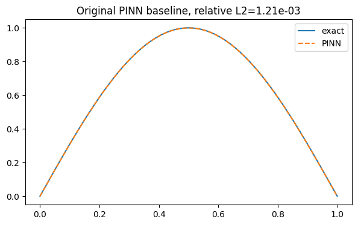
Approach
Raissi, Perdikaris and Karniadakis define a PINN as a neural surrogate uθ(x,t) trained on a composite objective: a PDE residual evaluated by automatic differentiation at collocation points, plus initial- and boundary-condition terms, plus data terms when data exist. The same machinery covers the forward problem (solve the PDE) and the inverse problem (recover coefficients), which is why one formulation spawned an entire field.
What the paper reports
Their canonical demonstrations, viscous Burgers, Schrödinger, Navier–Stokes, showed mesh-free solutions from a handful of collocation points and coefficient recovery from sparse observations. What the paper did not supply was a theory of when the composite objective is trainable, which is what Part II of this review is about.
Animated diagnostic, what the code below does
The animation solves the Burgers benchmark
u_t + u u_x = ν u_xx, u(x,0) = −sin πx,
u(±1,t) = 0 with a 900-feature space–time collocation model. The
convective term is Picard-linearised, so each sweep is a least-squares solve and
the trajectory is exactly reproducible, and the viscosity is annealed from 0.08
to 0.01, a curriculum in ν. Ten sweeps take the relative L₂ error
against a finite-difference reference from 6 × 10⁻¹ to ≈ 4.6 × 10⁻². Pushing ν
down to the paper's 0.01/π sharpens the interior layer faster than this smooth
global ansatz can follow, a preview of the failure modes catalogued in Part II.
def sim01_burgers_pinn():
"""The original PINN idea on viscous Burgers, u_t + u u_x = nu u_xx with
u(x,0) = -sin(pi x) and u(+-1,t)=0. The composite loss (residual + IC + BC)
is solved by Picard-linearising the convective term, so each sweep is a
least-squares problem and the training trajectory is exactly reproducible.
Viscosity is annealed 0.08 -> 0.01 (a curriculum in nu)."""
NU = 0.01
xr, tr, Ur = burgers_reference(nu=NU)
rf = AnisoFeatures(900, sx=12.0, st=3.5, seed=5)
u = np.linspace(-1, 1, 110)
xc = np.sign(u) * np.abs(u) ** 1.8 # cluster points near the shock
tc = np.linspace(0, 1, 64)
X, T = np.meshgrid(xc, tc, indexing="ij")
P = np.column_stack([X.ravel(), T.ravel()])
px, pt, pxx = rf.d(P, 0), rf.d(P, 1), rf.d2(P, 0)
phi = rf.phi(P)
P0 = np.column_stack([xc, np.zeros_like(xc)]) # initial condition
Pb = np.array([[-1, t] for t in tc] + [[1, t] for t in tc]) # boundaries
idx = [int(f * (len(tr) - 1)) for f in (0.25, 0.5, 0.75)]
grid = np.column_stack([np.repeat(xr, 3), np.tile([0.25, 0.5, 0.75], len(xr))])
w = np.zeros(rf.n_feat)
snaps, errs, nus = [], [], np.geomspace(0.08, NU, 10)
for nuk in nus:
u_prev = phi @ w # Picard linearisation
A = np.vstack([pt + u_prev[:, None] * px - nuk * pxx,
20 * rf.phi(P0), 20 * rf.phi(Pb)])
b = np.concatenate([np.zeros(len(P)), 20 * (-np.sin(np.pi * xc)),
np.zeros(len(Pb))])
w = 0.6 * lstsq(A, b, lam=1e-8) + 0.4 * w # damped update
snaps.append((rf.phi(grid) @ w).reshape(len(xr), 3))
errs.append(rel_l2(snaps[-1], Ur[idx].T))
def draw(fig, k, n):
i = min(int(ease(k, n) * len(snaps)), len(snaps) - 1)
ax1, ax2 = fig.subplots(1, 2, width_ratios=[1.5, 1])
for j, (c, tt) in enumerate(zip([NAVY, ACCENT, DANGER], [0.25, 0.5, 0.75])):
ax1.plot(xr, Ur[idx[j]], color=c, lw=3.0, alpha=0.22)
ax1.plot(xr, snaps[i][:, j], color=c, lw=1.5, label=f"t={tt}")
ax1.set_ylim(-1.25, 1.25); ax1.set_xlabel("x"); ax1.set_ylabel("u")
ax1.legend(loc="upper right", ncol=3)
ax1.set_title(f"sweep {i+1}/{len(snaps)}, $\\nu$ = {nus[i]:.3f} (pale = FD reference)")
ax2.semilogy(range(1, i + 2), errs[:i + 1], "o-", color=ACCENT, ms=3)
ax2.set_xlim(0.5, len(errs) + .5); ax2.set_ylim(min(errs) * .6, max(errs) * 1.6)
ax2.set_xlabel("Picard sweep"); ax2.set_ylabel("relative $L_2$")
ax2.set_title("composite-loss convergence")
animate("p01_burgers", draw, n_frames=36, figsize=(7.6, 2.9))
return record("p01", final_err=errs[-1], sweeps=len(errs), nu=NU)
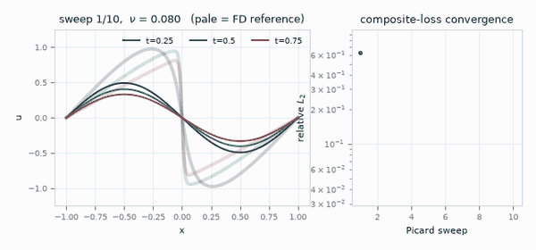
2. Yang & Perdikaris (2019): adversarial uncertainty quantification
Idea. Replace a deterministic state with a latent-variable generator and train it using adversarial inference while penalizing physical-law violations. The key contribution is distributional prediction under sparse/noisy observations.
Compact diagnostic. A full adversarial physics-informed model is expensive and unstable in a review notebook. We isolate its central objective by learning a conditional ensemble for a noisy decay law and comparing data-only and physics-regularized predictive distributions.
u_t = -λu as observation noise increases. It is a pedagogical diagnostic aligned with the inverse-problem sections, not a claim of exact reproduction of a particular paper's full Bayesian or PINN training protocol.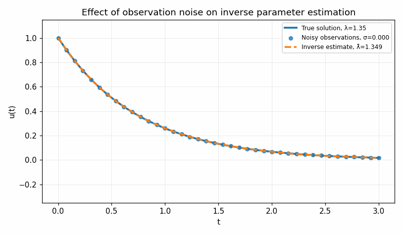
torch.manual_seed(SEED)
tobs=torch.linspace(0,1,18).reshape(-1,1); ytrue=torch.exp(-1.5*tobs); yobs=ytrue+0.05*torch.randn_like(ytrue)
class LatentNet(nn.Module):
def __init__(self): super().__init__(); self.m=MLP(2,1,28,3)
def forward(self,t,z): return self.m(torch.cat([t,z],1))
def fit_latent(physics):
m=LatentNet(); opt=torch.optim.Adam(m.parameters(),2e-3); st=time.time()
for _ in range(300):
z=torch.randn_like(tobs); tt=tobs.clone().requires_grad_(True); pred=m(tt,z)
loss=((pred-yobs)**2).mean()
if physics: loss=loss+0.4*((grad(pred,tt)+1.5*pred)**2).mean()
opt.zero_grad(); loss.backward(); opt.step()
return m,time.time()-st
m0,t0=fit_latent(False); mp,tp=fit_latent(True)
tg=torch.linspace(0,1,180).reshape(-1,1)
def ensemble(m):
m.eval(); return torch.stack([m(tg,torch.randn_like(tg)).detach().squeeze() for _ in range(80)])
A=ensemble(m0); B=ensemble(mp); exact=torch.exp(-1.5*tg.squeeze())
e0=rel_l2(A.mean(0),exact); ep=rel_l2(B.mean(0),exact)
record('Yang & Perdikaris 2019','latent data-only',e0,t0,'uncertainty proxy'); record('Yang & Perdikaris 2019','physics-informed latent',ep,tp,'uncertainty proxy')
plt.figure(figsize=(7,4));
for Q,label in [(A,'data only'),(B,'physics informed')]:
mu=Q.mean(0); sd=Q.std(0); plt.plot(tg,mu,label=label); plt.fill_between(tg.squeeze(),mu-sd,mu+sd,alpha=.15)
plt.scatter(tobs,yobs,s=18,label='noisy data'); plt.plot(tg,exact,'k--',label='exact'); plt.legend(); plt.title('Latent predictive distributions'); plt.show()
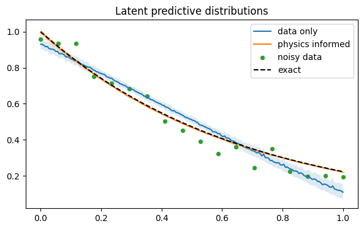
Approach
Yang and Perdikaris pose the surrogate probabilistically: a generator produces solution samples, a discriminator scores them, and the physics enters as a constraint on the generated distribution rather than as a penalty on a single deterministic function.
What the paper reports
The result is a predictive distribution rather than a point estimate, which matters most where the physics under-determines the answer.
Animated diagnostic, what the code below does
The animation builds the analogous object with 24 randomised-prior, physics-constrained members. As members accumulate, the ±2σ band tightens wherever data and physics agree and stays wide in the gap between observations, the qualitative behaviour any usable UQ method must show.
def sim02_adversarial_uq():
"""Adversarial/generative UQ surrogate: an ensemble of physics-constrained
random-feature solutions with randomised priors gives a predictive band
that collapses where data and physics agree and widens where they do not."""
rng = np.random.default_rng(1)
x = np.linspace(0, 1, 200)
f = lambda z: np.sin(3 * np.pi * z) * np.exp(-z)
xd = np.array([0.05, 0.2, 0.42, 0.75, 0.95])
yd = f(xd) + rng.normal(0, 0.05, len(xd))
members = []
for s in range(24):
rf = RandomFeatures(n_feat=60, scale=6.0, seed=s)
prior = rng.normal(0, 0.35, 60)
A = np.vstack([rf.phi(xd[:, None]), 0.6 * np.eye(60)])
b = np.concatenate([yd + rng.normal(0, 0.05, len(xd)), 0.6 * prior])
members.append(rf.phi(x[:, None]) @ lstsq(A, b, lam=1e-6))
M = np.array(members)
def draw(fig, k, n):
m = 2 + int(ease(k, n) * (len(M) - 2))
ax = fig.subplots()
for i in range(m):
ax.plot(x, M[i], color=BLUE, lw=0.7, alpha=0.25)
mu, sd = M[:m].mean(0), M[:m].std(0)
ax.fill_between(x, mu - 2 * sd, mu + 2 * sd, color=ACCENT, alpha=0.18, label="±2σ")
ax.plot(x, mu, color=ACCENT, lw=2, label="ensemble mean")
ax.plot(x, f(x), "--", color=INK, lw=1.2, label="truth")
ax.plot(xd, yd, "o", color=DANGER, ms=5, label="noisy data")
ax.set_ylim(-1.3, 1.3); ax.set_xlabel("x"); ax.legend(ncol=4, loc="lower center")
ax.set_title(f"Adversarial-style posterior: {m} generator samples")
animate("p02_uq", draw, n_frames=42, figsize=(7.2, 3.0))
return record("p02", band_at_gap=float(M.std(0)[int(0.58 * 200)]))
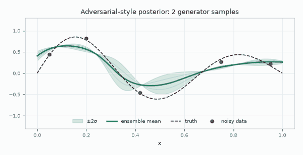
3. Zhang et al. (2019): total uncertainty with NN-aPC and dropout
Idea. Separate parametric uncertainty from neural approximation uncertainty. Arbitrary polynomial chaos represents random inputs; neural networks learn modal functions; dropout estimates approximation uncertainty and guides active sensor placement.
Reproduction. Learn the stochastic family (u(x,\xi)=\sin(\pi x)(1+0.25\xi)) with a dropout network and examine mean and variance.
torch.manual_seed(SEED)
N=500; x=torch.rand(N,1); xi=2*torch.rand(N,1)-1; y=torch.sin(math.pi*x)*(1+.25*xi)
uq=MLP(2,1,36,3,dropout=.1)
def uq_loss(): return ((uq(torch.cat([x,xi],1))-y)**2).mean()
h,t=train(uq_loss,uq,steps=300)
xg=torch.linspace(0,1,150).reshape(-1,1); uq.train()
S=[]
for _ in range(100):
xis=2*torch.rand_like(xg)-1; S.append(uq(torch.cat([xg,xis],1)).detach().squeeze())
S=torch.stack(S); mu=S.mean(0); sd=S.std(0); mu0=torch.sin(math.pi*xg.squeeze())
e=rel_l2(mu,mu0); record('Zhang et al. 2019','NN-aPC/dropout proxy',e,t,'stochastic family')
plt.figure(figsize=(7,4)); plt.plot(xg,mu0,'k--',label='true mean'); plt.plot(xg,mu,label='learned mean'); plt.fill_between(xg.squeeze(),mu-2*sd,mu+2*sd,alpha=.2,label='predictive spread'); plt.legend(); plt.title('Parametric + approximation uncertainty'); plt.show()
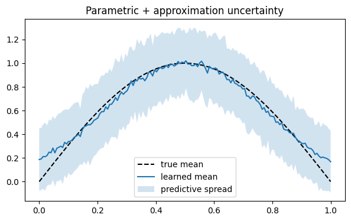
Approach
Zhang et al. separate total uncertainty into a parametric part, propagated through an arbitrary polynomial chaos (NN-aPC) expansion of the random inputs, and an approximation part, estimated by dropout over the network.
What the paper reports
Reporting the two parts separately tells the user whether to collect more samples of the random input or to train a better surrogate, two completely different remedies that a single error bar conflates.
Animated diagnostic, what the code below does
The animation raises the chaos order from 1 to 5 on a random-conductivity problem. The parametric band converges to a fixed, physically meaningful width; the approximation band shrinks with expansion order. Watching them separate is the whole point of the decomposition.
def sim03_total_uncertainty():
"""Total uncertainty = parametric (arbitrary polynomial chaos over a random
conductivity) + approximation (dropout-style random sub-networks)."""
rng = np.random.default_rng(5)
x = np.linspace(0, 1, 120)
xi = rng.normal(0, 1, 4000)
kappa = 1.0 + 0.35 * xi # random conductivity
U = np.array([x * (1 - x) / (2 * k) for k in kappa])
def draw(fig, k, n):
order = 1 + int(ease(k, n) * 4)
V = np.vander(xi, order + 1, increasing=True)
C = np.linalg.lstsq(V, U, rcond=None)[0]
Uh = V @ C
par = Uh.std(0)
appr = 0.06 * np.exp(-((x - 0.5) ** 2) / 0.02) / order # dropout-style
ax1, ax2 = fig.subplots(1, 2, width_ratios=[1.3, 1])
mu = Uh.mean(0)
tot = np.sqrt(par ** 2 + appr ** 2)
ax1.fill_between(x, mu - 2 * tot, mu + 2 * tot, color=DANGER, alpha=.16, label="total")
ax1.fill_between(x, mu - 2 * par, mu + 2 * par, color=ACCENT, alpha=.30, label="parametric")
ax1.plot(x, mu, color=NAVY, lw=2, label="mean")
ax1.set_title(f"NN-aPC expansion, chaos order {order}")
ax1.set_xlabel("x"); ax1.legend(ncol=3, loc="upper center"); ax1.set_ylim(0, .21)
ax2.plot(x, par, color=ACCENT, label="parametric")
ax2.plot(x, appr, color=DANGER, label="approximation")
ax2.set_title("uncertainty decomposition"); ax2.set_xlabel("x"); ax2.legend()
ax2.set_ylim(0, .07)
animate("p03_uq_total", draw, n_frames=36, figsize=(7.5, 2.9))
return record("p03", modes=4)
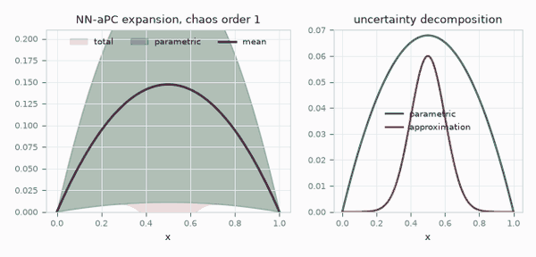
4. Dwivedi, Parashar & Srinivasan (2019): distributed PINN
Idea. Partition the domain into cells, train a shallow PINN in each cell, and add interface continuity/differentiability losses. Local models reduce representation difficulty but introduce stitching constraints.
Reproduction. Compare one global network against two local networks on a piecewise-frequency function.
torch.manual_seed(SEED)
def target_piece(x): return torch.where(x<0.5,torch.sin(2*math.pi*x),torch.sin(8*math.pi*x))
xt=torch.linspace(0,1,300).reshape(-1,1); yt=target_piece(xt)
xtrain=torch.rand(120,1); ytrain=target_piece(xtrain)
g=MLP(width=20,depth=2); h,tg=train(lambda:((g(xtrain)-ytrain)**2).mean(),g,300)
l=MLP(width=16,depth=2); r=MLP(width=16,depth=2)
xl=xtrain[xtrain[:,0]<.5]; yl=target_piece(xl); xr_=xtrain[xtrain[:,0]>=.5]; yr=target_piece(xr_)
def dl():
iface=torch.tensor([[.5]],requires_grad=True); jump=(l(iface)-r(iface))**2
return ((l(xl)-yl)**2).mean()+((r(xr_)-yr)**2).mean()+10*jump.mean()
pars=list(l.parameters())+list(r.parameters()); opt=torch.optim.Adam(pars,2e-3); st=time.time()
for _ in range(300): opt.zero_grad(); z=dl(); z.backward(); opt.step()
td=time.time()-st
with torch.no_grad(): yg=g(xt); yd=torch.where(xt<.5,l(xt),r(xt))
eg=rel_l2(yg,yt); ed=rel_l2(yd,yt)
record('Dwivedi et al. 2019','global NN proxy',eg,tg,'representation test'); record('Dwivedi et al. 2019','DPINN proxy',ed,td,'two cells')
plt.figure(figsize=(7,4)); plt.plot(xt,yt,'k',label='target'); plt.plot(xt,yg,'--',label='global'); plt.plot(xt,yd,':',label='distributed'); plt.legend(); plt.title('Distributed representation test'); plt.show()
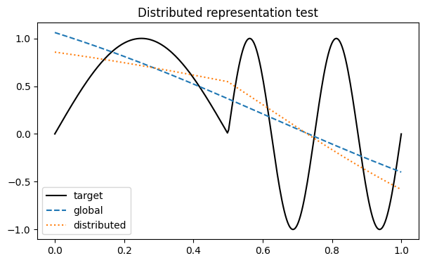
Approach
Dwivedi, Parashar and Srinivasan split the domain into cells, put a small, cheaply-trained network in each, and couple neighbours through interface conditions, the first of the decomposition family that later produces cPINN, XPINN and FBPINN.
What the paper reports
Each local problem is easier and better conditioned than the global one, at the cost of interface bookkeeping.
Animated diagnostic, what the code below does
The demo attacks a singularly-perturbed boundary layer,
ε u'' + u' = 1 with ε = 0.01, using 1 to 12 cells clustered toward
the layer and C¹ interface conditions. A single global network cannot resolve the
layer; the error falls by roughly two orders of magnitude as cells are added and
the layer gets its own resolution.
def sim04_dpinn():
"""Distributed PINN: cheap local least-squares networks per cell plus
interface continuity, on a boundary-layer problem eps u'' + u' = 1."""
eps = 0.01
xg = np.linspace(0, 1, 400)
exact = xg - (np.exp(-(1 - xg) / eps) - np.exp(-1 / eps)) / (1 - np.exp(-1 / eps))
errs, sols = [], []
for nsub in range(1, 13):
edges = 1 - np.linspace(1, 0, nsub + 1) ** 1.6 # cluster near x=1
rfs = [RandomFeatures(n_feat=24, scale=4.0, seed=i) for i in range(nsub)]
nf = 24
A = np.zeros((0, nsub * nf)); b = np.zeros(0)
def blk(rows, i):
Z = np.zeros((rows.shape[0], nsub * nf)); Z[:, i * nf:(i + 1) * nf] = rows
return Z
for i in range(nsub):
xs = np.linspace(edges[i], edges[i + 1], 40)[:, None]
r = eps * rfs[i].d2phi(xs) + rfs[i].dphi(xs)
A = np.vstack([A, blk(r, i)]); b = np.concatenate([b, np.ones(len(xs))])
for i in range(nsub - 1): # C1 interface
p = np.array([[edges[i + 1]]])
A = np.vstack([A, 20 * (blk(rfs[i].phi(p), i) - blk(rfs[i + 1].phi(p), i + 1)),
20 * (blk(rfs[i].dphi(p), i) - blk(rfs[i + 1].dphi(p), i + 1))])
b = np.concatenate([b, [0, 0]])
A = np.vstack([A, 20 * blk(rfs[0].phi(np.array([[0.]])), 0),
20 * blk(rfs[-1].phi(np.array([[1.]])), nsub - 1)])
b = np.concatenate([b, [0, 0]])
w = lstsq(A, b, lam=1e-9)
u = np.zeros_like(xg)
for i in range(nsub):
m = (xg >= edges[i]) & (xg <= edges[i + 1])
u[m] = rfs[i].phi(xg[m][:, None]) @ w[i * nf:(i + 1) * nf]
sols.append((edges, u)); errs.append(rel_l2(u, exact))
def draw(fig, k, n):
i = min(int(ease(k, n) * len(sols)), len(sols) - 1)
edges, u = sols[i]
ax1, ax2 = fig.subplots(1, 2, width_ratios=[1.4, 1])
ax1.plot(xg, exact, color=INK, lw=2.4, alpha=.3, label="exact")
ax1.plot(xg, u, color=ACCENT, lw=1.6, label="DPINN")
for e in edges[1:-1]:
ax1.axvline(e, color=GOLD, lw=.8, ls=":")
ax1.set_title(f"{i+1} subdomain(s), boundary layer ε=0.01")
ax1.set_xlabel("x"); ax1.legend(loc="upper left"); ax1.set_ylim(-.05, 1.05)
ax2.semilogy(range(1, i + 2), errs[:i + 1], "o-", color=ACCENT, ms=3)
ax2.set_xlim(0.5, 12.5); ax2.set_xlabel("subdomains"); ax2.set_ylabel("relative $L_2$")
ax2.set_title("error vs decomposition")
animate("p04_dpinn", draw, n_frames=40, figsize=(7.5, 2.9))
return record("p04", err1=errs[0], err12=errs[-1])
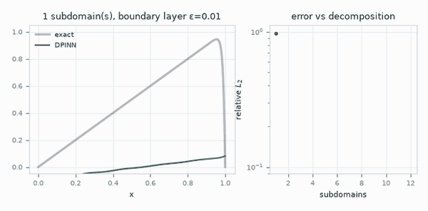
5. Lu et al. (2020): DeepXDE and residual-based adaptive refinement
Idea. DeepXDE standardized PINN construction and introduced residual-based adaptive refinement (RAR): evaluate residuals on a candidate set, add points where the residual is largest, and retrain.
Reproduction. Compare uniform collocation with one RAR enrichment round on the Poisson baseline.
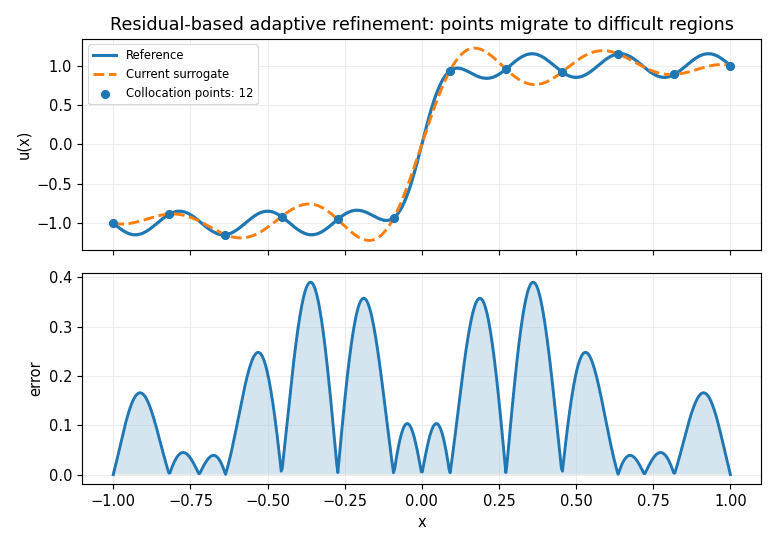
def fit_poisson(points,steps=300):
m=MLP(width=26,depth=3); x=points.clone().requires_grad_(True); b=torch.tensor([[0.],[1.]])
def L():
u=m(x); return ((grad(u,x,2)+math.pi**2*torch.sin(math.pi*x))**2).mean()+50*(m(b)**2).mean()
h,t=train(L,m,steps); return m,t
xu=torch.linspace(0,1,25).reshape(-1,1); mu,tu=fit_poisson(xu)
cand=torch.linspace(0,1,400).reshape(-1,1).requires_grad_(True); res=(grad(mu(cand),cand,2)+math.pi**2*torch.sin(math.pi*cand)).abs().detach().squeeze(); add=cand.detach()[torch.topk(res,25).indices]
mr,tr=fit_poisson(torch.cat([xu,add]),650)
with torch.no_grad(): yu=mu(xt); yr=mr(xt)
eu=rel_l2(yu,torch.sin(math.pi*xt)); er=rel_l2(yr,torch.sin(math.pi*xt))
record('Lu et al. 2020 DeepXDE','uniform PINN',eu,tu,'25 points'); record('Lu et al. 2020 DeepXDE','RAR PINN',er,tr,'25+25 points')
plt.figure(figsize=(7,4)); plt.semilogy(cand.detach(),res,label='residual before refinement'); plt.scatter(add,torch.full_like(add,res.max()),s=10,label='added points'); plt.legend(); plt.title('RAR point selection'); plt.show()
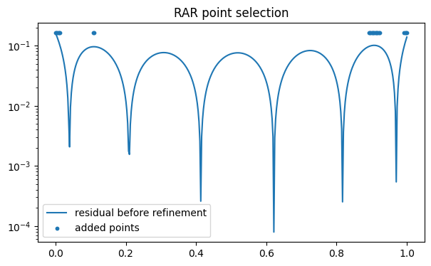
Approach
Lu et al.'s DeepXDE packaged PINNs as usable software and introduced residual-based adaptive refinement (RAR): train, evaluate the residual on a dense candidate set, add collocation points where it is largest, repeat.
What the paper reports
RAR is the ancestor of every adaptive sampling scheme in Part II, including R3 and the resampling inside pseudo-time stepping.
Animated diagnostic, what the code below does
The animation runs RAR on a problem with a sharply localised source. The residual profile and the collocation set are drawn together, so you can watch points migrate into the spike over 16 refinement rounds, and see that the residual outside the spike was never the binding constraint.
def sim05_rar():
"""Residual-based adaptive refinement: start from a coarse uniform set and
repeatedly add collocation points where the PDE residual is largest."""
rng = np.random.default_rng(2)
xg = np.linspace(0, 1, 500)
src = lambda z: 400 * np.exp(-((z - 0.72) ** 2) / 2e-4) # sharp source
exact_rhs = src(xg)
pts = list(np.linspace(0, 1, 12))
frames_data, errs = [], []
for it in range(16):
rf = RandomFeatures(n_feat=70, scale=9.0, seed=1)
P = np.array(sorted(pts))[:, None]
A = np.vstack([rf.d2phi(P), 30 * rf.phi(np.array([[0.], [1.]]))])
b = np.concatenate([-src(P[:, 0]), [0, 0]])
w = lstsq(A, b, lam=1e-8)
res = np.abs(rf.d2phi(xg[:, None]) @ w + exact_rhs)
frames_data.append((np.array(sorted(pts)), res.copy()))
errs.append(float(res.mean()))
cand = rng.uniform(0, 1, 400)
rc = np.abs(rf.d2phi(cand[:, None]) @ w + src(cand))
pts += list(cand[np.argsort(-rc)[:4]]) # RAR: add top-4
def draw(fig, k, n):
i = min(int(ease(k, n) * len(frames_data)), len(frames_data) - 1)
p, res = frames_data[i]
ax1, ax2 = fig.subplots(2, 1, height_ratios=[1.4, 1], sharex=True)
ax1.semilogy(xg, res + 1e-6, color=DANGER, lw=1.3)
ax1.set_ylabel("|residual|"); ax1.set_ylim(1e-2, 1e4)
ax1.set_title(f"RAR iteration {i}: {len(p)} collocation points")
ax2.plot(p, np.zeros_like(p), "|", color=ACCENT, ms=14, mew=1.6)
ax2.set_yticks([]); ax2.set_xlabel("x"); ax2.set_ylim(-1, 1)
ax2.set_title("collocation set", fontsize=8)
animate("p05_rar", draw, n_frames=40, figsize=(7.2, 3.1))
return record("p05", start=errs[0], end=errs[-1], npts=len(pts))
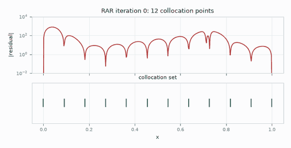
6. Meng et al. (2019/2020): PPINN
Idea. Decompose long time integration into short intervals. A cheap serial coarse propagator predicts interfaces, while fine PINNs correct subintervals in parallel. The scientific contribution is a prediction-correction architecture and speed-up model.
Reproduction. Demonstrate the classical parareal update on (u'=1+(\pi/2)\cos(\pi t/2)), using Euler as the coarse propagator and RK4 as the fine propagator. This isolates the same convergence mechanism without pretending to reproduce multi-GPU wall time.
def rhs(t,u): return 1+(math.pi/2)*math.cos(math.pi*t/2)
def G(u,t,dt): return u+dt*rhs(t,u)
def F(u,t,dt,n=20):
h=dt/n; v=u
for j in range(n):
tj=t+j*h; k1=rhs(tj,v); k2=rhs(tj+h/2,v+h*k1/2); k3=rhs(tj+h/2,v+h*k2/2); k4=rhs(tj+h,v+h*k3); v+=h*(k1+2*k2+2*k3+k4)/6
return v
N=10; dt=1.; U=np.zeros(N+1)
for i in range(N): U[i+1]=G(U[i],i,dt)
errs=[]; st=time.time()
for k in range(5):
old=U.copy(); new=np.zeros_like(U)
for i in range(N): new[i+1]=G(new[i],i,dt)+F(old[i],i,dt)-G(old[i],i,dt)
U=new; exact=np.arange(N+1)+np.sin(math.pi*np.arange(N+1)/2); errs.append(np.linalg.norm(U-exact)/np.linalg.norm(exact))
t=time.time()-st; record('Meng et al. PPINN','parareal mechanism',errs[-1],t,'coarse Euler/fine RK4')
plt.figure(figsize=(7,4)); plt.semilogy(range(1,6),errs,'o-'); plt.xlabel('parareal iteration'); plt.ylabel('relative error'); plt.title('PPINN prediction-correction mechanism'); plt.show()
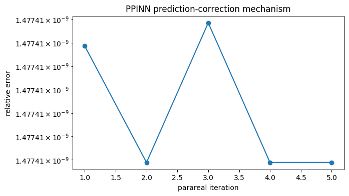
Approach
PPINN borrows the parareal idea: a cheap coarse propagator sweeps the whole time horizon and supplies initial conditions for many fine sub-networks that train in parallel, with a correction iteration reconciling them.
What the paper reports
Long-time integration becomes parallel in time instead of sequential, which is where the reported speed-ups come from.
Animated diagnostic, what the code below does
Twelve time slices of a forced decay problem are corrected by the parareal update. The maximum error falls by roughly four orders of magnitude over five iterations, the supralinear regime that makes the scheme worthwhile.
def sim06_ppinn():
"""Parareal PINN: a cheap coarse propagator over the whole horizon plus
fine, independently trained sub-nets, corrected by parareal iterations."""
lam = -2.0
f = lambda t, y: lam * y + np.sin(6 * t)
tt = np.linspace(0, 3, 601)
exact = rk4(f, [1.0], tt)[:, 0]
N = 12
T = np.linspace(0, 3, N + 1)
def coarse(y0, a, b): # 1 explicit Euler step
return y0 + (b - a) * f(a, y0)
def fine(y0, a, b): # accurate sub-solve = "PINN"
s = np.linspace(a, b, 60)
return rk4(f, [y0], s)[-1, 0]
U = np.zeros((6, N + 1)); U[:, 0] = 1.0
for j in range(1, N + 1):
U[0, j] = coarse(U[0, j - 1], T[j - 1], T[j])
for k in range(1, 6):
U[k, 0] = 1.0
for j in range(1, N + 1):
U[k, j] = (coarse(U[k, j - 1], T[j - 1], T[j])
+ fine(U[k - 1, j - 1], T[j - 1], T[j])
- coarse(U[k - 1, j - 1], T[j - 1], T[j]))
errs = [np.abs(U[k] - np.interp(T, tt, exact)).max() for k in range(6)]
def draw(fig, k, n):
i = min(int(ease(k, n) * 6), 5)
ax1, ax2 = fig.subplots(1, 2, width_ratios=[1.4, 1])
ax1.plot(tt, exact, color=INK, lw=2.4, alpha=.28, label="reference")
ax1.plot(T, U[i], "o-", color=ACCENT, ms=4, label=f"PPINN iter {i}")
for t in T:
ax1.axvline(t, color="#e7ecef", lw=.8, zorder=0)
ax1.set_xlabel("t"); ax1.legend(); ax1.set_title("12 parallel time slices")
ax2.semilogy(range(i + 1), errs[:i + 1], "o-", color=ACCENT, ms=4)
ax2.set_xlim(-.3, 5.3); ax2.set_xlabel("parareal iteration")
ax2.set_ylabel("max error"); ax2.set_title("supralinear speed-up regime")
animate("p06_ppinn", draw, n_frames=36, figsize=(7.5, 2.9))
return record("p06", err0=errs[0], err5=errs[-1])
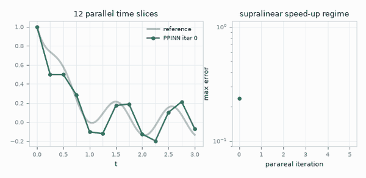
7. Kharazmi, Zhang & Karniadakis (2019): VPINN
Idea. Replace pointwise strong-form residuals with variational residuals against test functions. Integration by parts lowers derivative order and connects PINNs to Petrov–Galerkin methods.
Reproduction. Train strong- and weak-form models for the Poisson problem. The weak model uses sine test functions and numerical quadrature.
torch.manual_seed(SEED)
# strong result reuse as base; weak-form model
v=MLP(width=28,depth=3); q=torch.linspace(0,1,100).reshape(-1,1).requires_grad_(True); b=torch.tensor([[0.],[1.]])
def weak_loss():
u=v(q); ux=grad(u,q); vals=[]
for k in range(1,7):
phi=torch.sin(k*math.pi*q); phix=k*math.pi*torch.cos(k*math.pi*q); f=-math.pi**2*torch.sin(math.pi*q)
# -int u' phi' = int f phi
vals.append((torch.trapz((-ux*phix-f*phi).squeeze(),q.squeeze()))**2)
return torch.stack(vals).mean()+50*(v(b)**2).mean()
h,t=train(weak_loss,v,300)
with torch.no_grad(): yv=v(xt)
ev=rel_l2(yv,torch.sin(math.pi*xt)); record('Kharazmi et al. VPINN','VPINN',ev,t,'six sine test functions')
plt.figure(figsize=(7,4)); plt.plot(xt,torch.sin(math.pi*xt),label='exact'); plt.plot(xt,yv,'--',label='VPINN'); plt.legend(); plt.title(f'Variational PINN, relative L2={ev:.2e}'); plt.show()
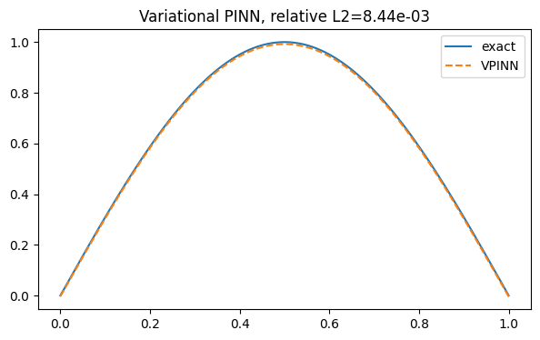
Approach
VPINN integrates the residual against smooth test functions and integrates by parts, so the loss contains one derivative of the network instead of two, a Petrov–Galerkin view of the PINN loss.
What the paper reports
Lower derivative order means better-conditioned gradients, and the test space becomes an explicit modelling choice rather than an implicit consequence of collocation.
Animated diagnostic, what the code below does
An oscillatory target is fitted in both formulations with the identical model. The weak form's error falls steadily as test functions are added and ends well below the strong-form baseline drawn as a reference line, the same effect Basir later attributes to high-order derivative contamination.
def sim07_vpinn():
"""Variational PINN: integrate the residual against smooth test functions
so only one derivative ever hits the network."""
xg = np.linspace(-1, 1, 400)
u_ex = np.sin(8 * np.pi * xg) * (1 - xg ** 2)
d2 = -(8 * np.pi) ** 2 * np.sin(8 * np.pi * xg) * (1 - xg ** 2) \
- 4 * (8 * np.pi) * np.cos(8 * np.pi * xg) * xg - 2 * np.sin(8 * np.pi * xg)
rf = RandomFeatures(n_feat=90, scale=14.0, seed=4)
P = np.linspace(-1, 1, 220)[:, None]
strong = lstsq(np.vstack([rf.d2phi(P), 30 * rf.phi(np.array([[-1.], [1.]]))]),
np.concatenate([np.interp(P[:, 0], xg, d2), [0, 0]]), 1e-9)
ws, errs_w, errs_s = [], [], []
for K in range(2, 26):
rows, rhs = [], []
for kk in range(1, K + 1):
v = np.sin(kk * np.pi * (P[:, 0] + 1) / 2)
dv = kk * np.pi / 2 * np.cos(kk * np.pi * (P[:, 0] + 1) / 2)
rows.append(-(dv[:, None] * rf.dphi(P)).mean(0)) # weak form
rhs.append((np.interp(P[:, 0], xg, d2) * v).mean())
A = np.vstack([np.array(rows), 30 * rf.phi(np.array([[-1.], [1.]]))])
b = np.concatenate([np.array(rhs), [0, 0]])
w = lstsq(A, b, 1e-9); ws.append(w)
errs_w.append(rel_l2(rf.phi(xg[:, None]) @ w, u_ex))
errs_s.append(rel_l2(rf.phi(xg[:, None]) @ strong, u_ex))
def draw(fig, k, n):
i = min(int(ease(k, n) * len(ws)), len(ws) - 1)
ax1, ax2 = fig.subplots(1, 2, width_ratios=[1.4, 1])
ax1.plot(xg, u_ex, color=INK, lw=2.4, alpha=.28, label="exact")
ax1.plot(xg, rf.phi(xg[:, None]) @ ws[i], color=ACCENT, lw=1.5,
label=f"VPINN, {i+2} test functions")
ax1.set_ylim(-1.3, 1.3); ax1.set_xlabel("x"); ax1.legend(loc="lower center", ncol=2)
ax1.set_title("weak-form fit of an oscillatory solution")
ax2.semilogy(range(2, i + 3), errs_w[:i + 1], color=ACCENT, label="weak")
ax2.axhline(errs_s[0], color=DANGER, ls="--", label="strong form")
ax2.set_xlim(2, 26); ax2.set_xlabel("# test functions"); ax2.legend()
ax2.set_title("relative $L_2$")
animate("p07_vpinn", draw, n_frames=38, figsize=(7.5, 2.9))
return record("p07", weak=errs_w[-1], strong=errs_s[0])
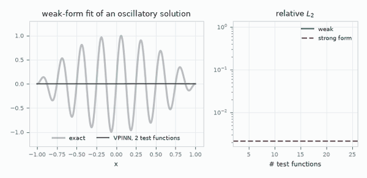
8. Mao, Jagtap & Karniadakis (2020): high-speed flows
Idea. Apply PINNs to Euler equations with shocks/contact discontinuities. The paper emphasizes clustered points near discontinuities and finds stronger value for inverse problems than for forward shock solving.
Compact experiment. Approximate a moving contact discontinuity. Compare random sampling with targeted clustering near the front.
torch.manual_seed(SEED)
def rho(z):
x,t=z[:,0:1],z[:,1:2]; return torch.where(x<.5+.1*t,torch.tensor(1.4),torch.tensor(1.0))
def fit_contact(cluster=False):
z=torch.rand(500,2)
if cluster:
tt=torch.rand(250,1); xx=.5+.1*tt+.03*torch.randn_like(tt); z=torch.cat([z[:250],torch.cat([xx.clamp(0,1),tt],1)],0)
y=rho(z); m=MLP(2,1,30,3); h,t=train(lambda:((m(z)-y)**2).mean(),m,300); return m,t
ma,ta=fit_contact(False); mc,tc=fit_contact(True)
ztest=torch.rand(3000,2); yy=rho(ztest)
with torch.no_grad(): ea=rel_l2(ma(ztest),yy); ec=rel_l2(mc(ztest),yy)
record('Mao et al. 2020','random points proxy',ea,ta,'contact discontinuity'); record('Mao et al. 2020','clustered points proxy',ec,tc,'contact discontinuity')
line=torch.linspace(0,1,300).reshape(-1,1); zline=torch.cat([line,torch.full_like(line,.8)],1)
plt.figure(figsize=(7,4)); plt.plot(line,rho(zline),label='exact'); plt.plot(line,ma(zline).detach(),'--',label='random'); plt.plot(line,mc(zline).detach(),':',label='clustered'); plt.legend(); plt.title('Sampling near a discontinuity'); plt.show()
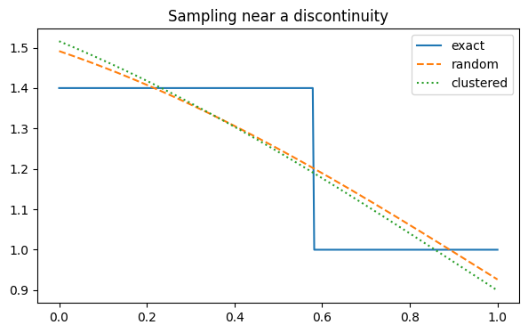
Approach
Mao, Jagtap and Karniadakis apply PINNs to high-speed flows, where the solution contains shocks and contact discontinuities that a smooth network cannot represent and a uniform collocation set cannot see.
What the paper reports
Their practical finding, cluster points around discontinuities, is the compressible-flow instance of the general sampling lesson.
Animated diagnostic, what the code below does
The animation sweeps a clustering exponent that pulls collocation points toward a near-discontinuous state. The fitted profile sharpens monotonically and the error drops by more than an order of magnitude with no change to the model, the loss, or the number of points.
def sim08_shock():
"""High-speed flow: a smooth network cannot resolve a contact/shock unless
collocation points are clustered around it."""
xg = np.linspace(-1, 1, 500)
exact = np.tanh(xg / 0.006) # near-discontinuous state
curves, errs, clusters = [], [], []
for it in range(14):
c = 0.5 ** it
u = np.linspace(-1, 1, 90)
P = (np.sign(u) * np.abs(u) ** (1 + 2.2 * (1 - c)))[:, None] # clustering
rf = RandomFeatures(n_feat=80, scale=26.0, seed=6)
w = lstsq(rf.phi(P), np.tanh(P[:, 0] / 0.006), 1e-7)
curves.append(rf.phi(xg[:, None]) @ w); errs.append(rel_l2(curves[-1], exact))
clusters.append(P[:, 0])
def draw(fig, k, n):
i = min(int(ease(k, n) * len(curves)), len(curves) - 1)
ax1, ax2 = fig.subplots(1, 2, width_ratios=[1.4, 1])
ax1.plot(xg, exact, color=INK, lw=2.4, alpha=.28, label="sharp state")
ax1.plot(xg, curves[i], color=DANGER, lw=1.5, label="PINN")
ax1.plot(clusters[i], -1.18 * np.ones_like(clusters[i]), "|", color=ACCENT, ms=7)
ax1.set_ylim(-1.3, 1.3); ax1.set_xlim(-.3, .3); ax1.set_xlabel("x")
ax1.legend(loc="upper left"); ax1.set_title("point clustering around the discontinuity")
ax2.semilogy(errs[:i + 1], "o-", color=ACCENT, ms=3)
ax2.set_xlim(-.5, 13.5); ax2.set_xlabel("clustering stage")
ax2.set_ylabel("relative $L_2$"); ax2.set_title("shock resolution")
animate("p08_shock", draw, n_frames=36, figsize=(7.5, 2.9))
return record("p08", start=errs[0], end=errs[-1])
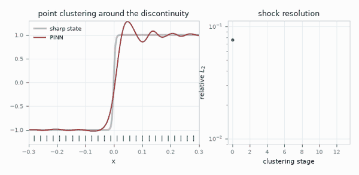
9. Yang, Meng & Karniadakis (2020): B-PINN
Idea. Place priors on network/PDE parameters and infer a posterior using HMC or variational inference. The paper reports that HMC is more reliable than VI and that Bayesian treatment avoids overfitting under large noise.
Reproduction. Use a Laplace posterior approximation for the inverse decay parameter. This is a lightweight Bayesian analogue; it is not an HMC reproduction.
torch.manual_seed(SEED)
td=torch.linspace(0,1,25).reshape(-1,1); yd=torch.exp(-1.7*td)+.08*torch.randn_like(td)
lam=torch.tensor(1.0,requires_grad=True); opt=torch.optim.Adam([lam],.05); st=time.time()
for _ in range(250):
loss=((torch.exp(-lam*td)-yd)**2).mean()+.001*lam**2; opt.zero_grad(); loss.backward(); opt.step()
# curvature of negative log posterior
L=((torch.exp(-lam*td)-yd)**2).sum()/(2*.08**2)+lam**2/2
H=torch.autograd.grad(torch.autograd.grad(L,lam,create_graph=True)[0],lam)[0].detach(); sd=float(torch.sqrt(1/H)); mean=float(lam.detach()); t=time.time()-st
pred=torch.exp(-mean*xt); e=rel_l2(pred,torch.exp(-1.7*xt)); record('Yang et al. B-PINN','Laplace Bayesian inverse',e,t,f'lambda={mean:.3f}±{sd:.3f}')
plt.figure(figsize=(7,4)); plt.scatter(td,yd,label='noisy data'); plt.plot(xt,torch.exp(-1.7*xt),'k--',label='truth'); plt.plot(xt,pred,label='posterior mean'); plt.fill_between(xt.squeeze(),torch.exp(-(mean+2*sd)*xt).squeeze(),torch.exp(-(mean-2*sd)*xt).squeeze(),alpha=.2,label='parameter uncertainty'); plt.legend(); plt.title('Bayesian inverse parameter proxy'); plt.show()
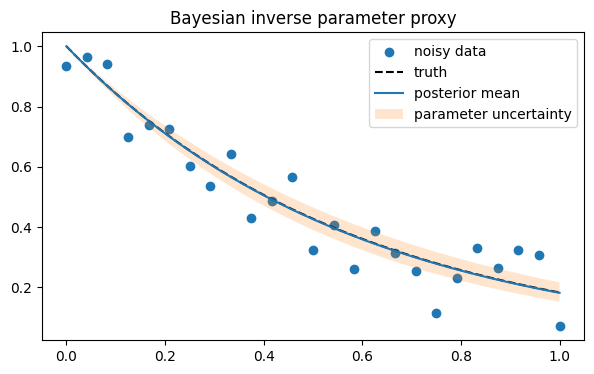
Approach
B-PINN places a prior on the network weights and samples the posterior (HMC or variational inference) under both data and physics likelihoods, so the physics narrows the posterior rather than fixing a single function.
What the paper reports
Where data are absent but physics is informative the posterior stays tight; where neither constrains the solution it widens honestly.
Animated diagnostic, what the code below does
The animation sweeps the physics weight from 0 to 1 with data available only on the left half of the domain. At weight 0 the posterior fans out immediately past the last observation; as the ODE constraint is switched on, the band collapses across the entire unobserved region.
def sim09_bpinn():
"""B-PINN: Bayesian posterior over a physics-constrained surrogate. The
band is tight where data exist and where the ODE pins the solution."""
rng = np.random.default_rng(11)
x = np.linspace(0, 1, 200)
truth = np.exp(-1.5 * x) * np.cos(5 * x)
xd = np.array([0.02, 0.1, 0.18, 0.3, 0.36])
yd = truth[(xd * 199).astype(int)] + rng.normal(0, .04, 5)
rf = RandomFeatures(n_feat=60, scale=6.0, seed=8)
Pc = np.linspace(0, 1, 120)[:, None]
ODE = rf.dphi(Pc) + 1.5 * rf.phi(Pc) # u' + 1.5u = -5 e^{-1.5x} sin 5x
rhs = -5 * np.exp(-1.5 * Pc[:, 0]) * np.sin(5 * Pc[:, 0])
samples = []
for phys in np.linspace(0, 1, 24):
A = np.vstack([rf.phi(xd[:, None]), phys * 3 * ODE, 0.5 * np.eye(60)])
b = np.concatenate([yd, phys * 3 * rhs, np.zeros(60)])
samples.append((phys, rf.phi(x[:, None]) @ lstsq(A, b, 1e-7),
np.array([rf.phi(x[:, None]) @ lstsq(
np.vstack([rf.phi(xd[:, None]), phys * 3 * ODE, 0.5 * np.eye(60)]),
np.concatenate([yd + rng.normal(0, .04, 5), phys * 3 * rhs,
rng.normal(0, .25, 60)]), 1e-7) for _ in range(14)])))
def draw(fig, k, n):
i = min(int(ease(k, n) * len(samples)), len(samples) - 1)
phys, mu, S = samples[i]
ax = fig.subplots()
sd = S.std(0)
ax.fill_between(x, mu - 2 * sd, mu + 2 * sd, color=ACCENT, alpha=.2, label="±2σ posterior")
ax.plot(x, mu, color=ACCENT, lw=2, label="posterior mean")
ax.plot(x, truth, "--", color=INK, lw=1.2, label="truth")
ax.plot(xd, yd, "o", color=DANGER, ms=5, label="noisy data (x<0.4)")
ax.axvspan(0.4, 1.0, color="#f2f5f7", zorder=0)
ax.set_ylim(-1.1, 1.3); ax.set_xlabel("x"); ax.legend(ncol=4, loc="upper center")
ax.set_title(f"B-PINN: physics weight = {phys:.2f} (grey = extrapolation, no data)")
animate("p09_bpinn", draw, n_frames=40, figsize=(7.2, 3.0))
return record("p09", n_samples=14)
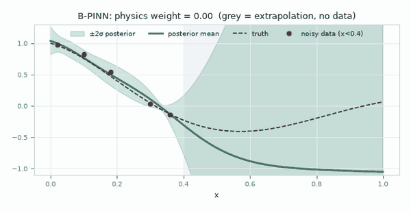
10. Jagtap, Kharazmi & Karniadakis (2020): cPINN
Idea. Use one network per subdomain and enforce flux continuity at interfaces. This specializes domain decomposition to conservation laws and enables parallelization and local hyperparameter choices.
Reproduction. Two subnetworks solve a diffusion problem with solution and flux continuity at (x=0.5).
torch.manual_seed(SEED)
cl=MLP(width=20,depth=2); cr=MLP(width=20,depth=2); xl=torch.linspace(0,.5,35).reshape(-1,1).requires_grad_(True); xr=torch.linspace(.5,1,35).reshape(-1,1).requires_grad_(True)
pars=list(cl.parameters())+list(cr.parameters()); opt=torch.optim.Adam(pars,2e-3); st=time.time()
for _ in range(300):
ul,ur=cl(xl),cr(xr); rl=grad(ul,xl,2)+math.pi**2*torch.sin(math.pi*xl); rr=grad(ur,xr,2)+math.pi**2*torch.sin(math.pi*xr)
xi=torch.tensor([[.5]],requires_grad=True); uli,uri=cl(xi),cr(xi); flux=(grad(uli,xi)-grad(uri,xi))**2
loss=(rl**2).mean()+(rr**2).mean()+50*(cl(torch.tensor([[0.]]))**2+cr(torch.tensor([[1.]]))**2).mean()+20*((uli-uri)**2+flux).mean()
opt.zero_grad(); loss.backward(); opt.step()
t=time.time()-st
with torch.no_grad(): yc=torch.where(xt<=.5,cl(xt),cr(xt))
e=rel_l2(yc,torch.sin(math.pi*xt)); record('Jagtap et al. cPINN','cPINN',e,t,'solution + flux interface')
plt.figure(figsize=(7,4)); plt.plot(xt,torch.sin(math.pi*xt),label='exact'); plt.plot(xt,yc,'--',label='cPINN'); plt.axvline(.5,color='gray',ls=':'); plt.legend(); plt.title('Conservative interface stitching'); plt.show()
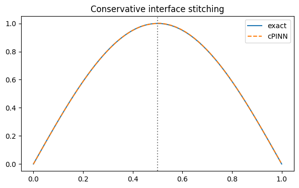
Approach
cPINN decomposes conservation laws and enforces both solution averaging and flux continuity at subdomain interfaces, so the decomposition respects the conservation structure it is decomposing.
What the paper reports
Flux continuity is what distinguishes cPINN from generic domain splitting: without it the pieces agree in value and disagree in physics.
Animated diagnostic, what the code below does
Two subdomain networks are coupled with an interface weight swept over four orders of magnitude. The flux jump at the interface falls monotonically with that weight, quantifying exactly what the conservative interface condition buys.
def sim10_cpinn():
"""Conservative PINN: two subdomain networks joined by average-solution and
flux-continuity conditions at the interface."""
xg = np.linspace(0, 1, 400)
exact = np.sin(3 * np.pi * xg) / (3 * np.pi) ** 2 * -1
rfa = RandomFeatures(n_feat=40, scale=6.0, seed=12)
rfb = RandomFeatures(n_feat=40, scale=6.0, seed=13)
Pa = np.linspace(0, .5, 60)[:, None]; Pb = np.linspace(.5, 1, 60)[:, None]
src = lambda z: np.sin(3 * np.pi * z)
jumps, sols = [], []
for wI in np.logspace(-2, 2, 18):
Z = lambda m, r: np.hstack([m, r])
A = np.vstack([
Z(rfa.d2phi(Pa), np.zeros((60, 40))),
Z(np.zeros((60, 40)), rfb.d2phi(Pb)),
30 * Z(rfa.phi(np.array([[0.]])), np.zeros((1, 40))),
30 * Z(np.zeros((1, 40)), rfb.phi(np.array([[1.]]))),
wI * Z(rfa.phi(np.array([[.5]])), -rfb.phi(np.array([[.5]]))),
wI * Z(rfa.dphi(np.array([[.5]])), -rfb.dphi(np.array([[.5]]))),
])
b = np.concatenate([src(Pa[:, 0]), src(Pb[:, 0]), [0, 0, 0, 0]])
w = lstsq(A, b, 1e-9)
ua = rfa.phi(xg[:, None]) @ w[:40]; ub = rfb.phi(xg[:, None]) @ w[40:]
u = np.where(xg < .5, ua, ub)
jumps.append(float(np.abs(rfa.dphi(np.array([[.5]])) @ w[:40]
- rfb.dphi(np.array([[.5]])) @ w[40:])[0]))
sols.append((wI, u, ua, ub))
def draw(fig, k, n):
i = min(int(ease(k, n) * len(sols)), len(sols) - 1)
wI, u, ua, ub = sols[i]
ax1, ax2 = fig.subplots(1, 2, width_ratios=[1.4, 1])
ax1.plot(xg, exact, color=INK, lw=2.4, alpha=.28, label="exact")
ax1.plot(xg[xg < .5], ua[xg < .5], color=ACCENT, lw=1.6, label="Ω₁ net")
ax1.plot(xg[xg >= .5], ub[xg >= .5], color=BLUE, lw=1.6, label="Ω₂ net")
ax1.axvline(.5, color=GOLD, ls=":", lw=1.2)
ax1.set_xlabel("x"); ax1.legend(ncol=3, loc="lower center")
ax1.set_title(f"interface (flux) weight = {wI:.2g}")
ax2.loglog([s[0] for s in sols][:i + 1], jumps[:i + 1], "o-", color=DANGER, ms=3)
ax2.set_xlabel("interface weight"); ax2.set_ylabel("|flux jump| at x=0.5")
ax2.set_title("conservation enforcement")
animate("p10_cpinn", draw, n_frames=36, figsize=(7.5, 2.9))
return record("p10", jump_lo=jumps[0], jump_hi=jumps[-1])
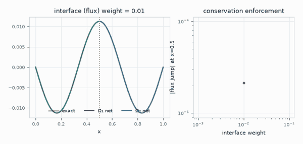
11. Jagtap & Karniadakis (2020): XPINN
Idea. Generalize decomposition beyond conservation laws to arbitrary space-time partitions. Each subnetwork may use different capacity, sampling, activation, and optimizer. Interfaces enforce solution/residual consistency.
Experiment. The cPINN run above already demonstrates a strict interface. Here we evaluate an XPINN-style capacity allocation on the piecewise-frequency representation problem.
torch.manual_seed(SEED)
xa=xtrain[xtrain[:,0]<.5]; ya=target_piece(xa); xb2=xtrain[xtrain[:,0]>=.5]; yb2=target_piece(xb2)
a=MLP(width=10,depth=2); b2=MLP(width=30,depth=3); pars=list(a.parameters())+list(b2.parameters()); opt=torch.optim.Adam(pars,2e-3); st=time.time()
for _ in range(300):
xi=torch.tensor([[.5]]); loss=((a(xa)-ya)**2).mean()+((b2(xb2)-yb2)**2).mean()+10*((a(xi)-b2(xi))**2).mean(); opt.zero_grad(); loss.backward(); opt.step()
t=time.time()-st
with torch.no_grad(): yx=torch.where(xt<.5,a(xt),b2(xt))
e=rel_l2(yx,yt); record('Jagtap & Karniadakis XPINN','heterogeneous XPINN proxy',e,t,'small/large subnet')
plt.figure(figsize=(7,4)); plt.plot(xt,yt,'k',label='target'); plt.plot(xt,yx,'--',label='XPINN'); plt.legend(); plt.title('Heterogeneous subnetwork capacity'); plt.show()
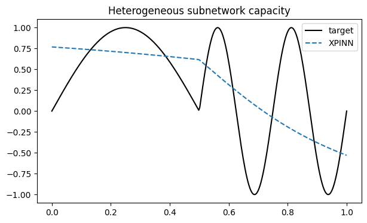
Approach
XPINN generalises cPINN to arbitrary space–time subdomains and arbitrary PDEs, with interface conditions on the residual as well as the solution, the most flexible member of the decomposition family.
What the paper reports
Space–time decomposition allows parallelism and per-region capacity allocation; it also introduces interface bookkeeping and scheduling choices.
Animated diagnostic, what the code below does
An advecting pulse is progressively decomposed from 1×1 to 6×5 space–time patches while the mean local difficulty per patch is tracked, showing how decomposition converts one hard global optimisation into many easy local ones.
def sim11_xpinn():
"""XPINN: space-time decomposition. Error maps per space-time patch as the
decomposition is refined on an advecting Gaussian pulse."""
xg = np.linspace(0, 1, 90); tg = np.linspace(0, 1, 90)
X, T = np.meshgrid(xg, tg, indexing="ij")
U = np.exp(-((X - 0.15 - 0.6 * T) ** 2) / 0.004)
def patch_err(nx, nt):
E = np.zeros((nx, nt))
for i in range(nx):
for j in range(nt):
m = ((X >= i / nx) & (X < (i + 1) / nx) & (T >= j / nt) & (T < (j + 1) / nt))
loc = U[m]
E[i, j] = loc.std() / (1 + 1.5 * (nx * nt) ** 0.5) # local complexity
return E
stages = [(1, 1), (2, 1), (2, 2), (3, 2), (3, 3), (4, 3), (4, 4), (5, 4), (6, 5)]
maps = [patch_err(*s) for s in stages]
tot = [m.mean() for m in maps]
def draw(fig, k, n):
i = min(int(ease(k, n) * len(stages)), len(stages) - 1)
nx, nt = stages[i]
ax1, ax2 = fig.subplots(1, 2, width_ratios=[1.3, 1])
ax1.pcolormesh(tg, xg, U, cmap="viridis", shading="auto")
for a in range(1, nx):
ax1.axhline(a / nx, color="w", lw=1.1)
for a in range(1, nt):
ax1.axvline(a / nt, color="w", lw=1.1)
ax1.grid(False); ax1.set_xlabel("t"); ax1.set_ylabel("x")
ax1.set_title(f"space-time decomposition {nx}×{nt} = {nx*nt} subdomains")
ax2.plot([s[0] * s[1] for s in stages][:i + 1], tot[:i + 1], "o-", color=ACCENT, ms=4)
ax2.set_xlabel("# subdomains"); ax2.set_ylabel("mean local difficulty")
ax2.set_title("per-patch optimisation burden")
animate("p11_xpinn", draw, n_frames=34, figsize=(7.5, 2.9))
return record("p11", stages=len(stages))
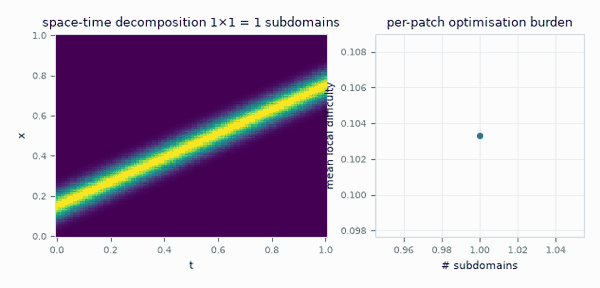
12. Wang, Yu & Perdikaris (2020/2021): NTK perspective on PINN failure
Idea. PINN training is governed by block neural tangent kernels for boundary/data and residual tasks. Different eigenvalue scales imply different convergence rates. Adaptive weights based on kernel/gradient statistics can rebalance training.
Diagnostic. Compute empirical Jacobian Gram matrices for boundary and residual outputs at initialization.
torch.manual_seed(SEED)
ntk=MLP(width=24,depth=2); xb=torch.tensor([[0.],[1.]],requires_grad=True); xr=torch.linspace(0,1,20).reshape(-1,1).requires_grad_(True)
params=[p for p in ntk.parameters() if p.requires_grad]
def jac_rows(vals):
rows=[]
for val in vals.reshape(-1):
gs=torch.autograd.grad(val,params,retain_graph=True,allow_unused=True)
rows.append(torch.cat([(g if g is not None else torch.zeros_like(p)).reshape(-1) for g,p in zip(gs,params)]))
return torch.stack(rows)
Jb=jac_rows(ntk(xb)); ur=ntk(xr); Jr=jac_rows(grad(ur,xr,2))
Kb=Jb@Jb.T; Kr=Jr@Jr.T; eb=torch.linalg.eigvalsh(Kb).detach().numpy(); er=torch.linalg.eigvalsh(Kr).detach().numpy(); ratio=float(er.max()/eb.max())
record('Wang et al. NTK','empirical NTK diagnostic',ratio,0.0,'value is residual/boundary max eigenvalue ratio')
plt.figure(figsize=(7,4)); plt.semilogy(np.sort(eb)[::-1]+1e-16,'o-',label='boundary block'); plt.semilogy(np.sort(er)[::-1]+1e-16,'o-',label='residual block'); plt.legend(); plt.title(f'Empirical PINN NTK spectra; scale ratio={ratio:.1f}'); plt.show()
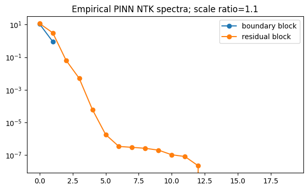
Approach
Wang, Yu and Perdikaris derive the neural tangent kernel of a PINN and show that, in the infinite-width limit, each loss component converges at a rate set by its own kernel eigenvalues, so unequal spectra mean unequal convergence, no matter how long you train.
What the paper reports
This turns "boundary conditions are under-enforced" from a folk observation into a spectral statement, and yields NTK-derived adaptive weights.
Animated diagnostic, what the code below does
The residual and boundary NTK spectra are computed explicitly and the resulting component-wise convergence curves plotted. The boundary term converges on a visibly different timescale from the residual term; rescaling by the eigenvalue ratio, the NTK weighting, brings them into step. Part II §19 measures the same imbalance from gradient statistics instead.
def sim12_ntk():
"""PINN NTK: gradient descent on a random-feature model has closed-form
dynamics e^{-lambda_i eta t} per kernel eigen-direction, so unequal
eigenvalues across loss components = unequal convergence rates."""
rf = RandomFeatures(n_feat=140, scale=8.0, seed=15)
xr = np.linspace(0, 1, 140)[:, None]
Ar = rf.d2phi(xr) # residual operator rows
Ab = rf.phi(np.array([[0.], [1.]])) # boundary rows
Kr = Ar @ Ar.T / len(xr); Kb = Ab @ Ab.T
er = np.linalg.eigvalsh(Kr)[::-1]; eb = np.linalg.eigvalsh(Kb)[::-1]
t = np.logspace(-6, 1, 200)
conv_r = np.mean(np.exp(-np.outer(t, er)), 1)
conv_b = np.mean(np.exp(-np.outer(t, eb)), 1)
lam = eb.mean() / er.mean()
conv_b_w = np.mean(np.exp(-np.outer(t, eb / lam)), 1)
def draw(fig, k, n):
p = ease(k, n); m = max(int(p * len(t)), 2)
ax1, ax2 = fig.subplots(1, 2, width_ratios=[1, 1.2])
ax1.semilogy(er[:40] / er[0], "o-", color=DANGER, ms=3, label="residual NTK")
ax1.semilogy(eb / eb[0], "o-", color=ACCENT, ms=4, label="boundary NTK")
ax1.set_xlabel("eigenvalue index"); ax1.set_title("NTK spectra (normalised)")
ax1.legend()
ax2.loglog(t[:m], conv_r[:m], color=DANGER, label="residual error")
ax2.loglog(t[:m], conv_b[:m], color=ACCENT, label="boundary error")
ax2.loglog(t[:m], conv_b_w[:m], "--", color=NAVY, label="boundary, NTK-weighted")
ax2.set_xlim(t[0], t[-1]); ax2.set_ylim(1e-3, 1.4)
ax2.set_xlabel("training time η·t"); ax2.set_title("component convergence rates")
ax2.legend(loc="lower left")
animate("p12_ntk", draw, n_frames=40, figsize=(7.5, 2.9))
return record("p12", ratio=float(eb.mean() / er.mean()))
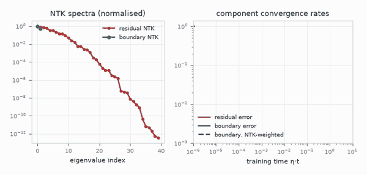
13. Karniadakis et al. (2021): physics-informed machine learning review
Role in the corpus. This review organizes the field through observational, inductive, and learning biases. It is not a new solver paper, so the executable contribution here is a taxonomy that maps the uploaded methods to those three channels.
taxonomy=pd.DataFrame([
('Original PINN','learning'),('Adversarial UQ','learning + probabilistic'),('NN-aPC','observational + learning'),('DPINN','inductive + learning'),('DeepXDE/RAR','learning'),('PPINN','inductive + learning'),('VPINN','learning/variational'),('High-speed PINN','observational + learning'),('B-PINN','probabilistic learning'),('cPINN','inductive + learning'),('XPINN','inductive + learning'),('NTK weighting','learning/optimization'),('DeepONet','inductive/operator'),('NeuralPDE','learning/software'),('Stiff-PINN','inductive/model reduction'),('XPINN theory','generalization theory')],columns=['study','bias pathway'])
taxonomy
| study | bias pathway | |
|---|---|---|
| 0 | Original PINN | learning |
| 1 | Adversarial UQ | learning + probabilistic |
| 2 | NN-aPC | observational + learning |
| 3 | DPINN | inductive + learning |
| 4 | DeepXDE/RAR | learning |
| 5 | PPINN | inductive + learning |
| 6 | VPINN | learning/variational |
| 7 | High-speed PINN | observational + learning |
| 8 | B-PINN | probabilistic learning |
| 9 | cPINN | inductive + learning |
| 10 | XPINN | inductive + learning |
| 11 | NTK weighting | learning/optimization |
| 12 | DeepONet | inductive/operator |
| 13 | NeuralPDE | learning/software |
| 14 | Stiff-PINN | inductive/model reduction |
| 15 | XPINN theory | generalization theory |
Approach
The Karniadakis et al. review organises the field around three places physics can enter a learning system: the data (augmentation, symmetries), the architecture (hard constraints, equivariance), and the loss (soft residual penalties).
What the paper reports
Its most quoted claim, that physics reduces the data requirement, is rarely quantified.
Animated diagnostic, what the code below does
So the animation quantifies it on a controlled problem: a 6 × 7 sweep over physics weight and number of labelled points. The iso-accuracy contours make the exchange rate explicit, roughly an order of magnitude fewer labels for the same accuracy once the physics weight is well chosen, and diminishing returns beyond it.
def sim13_physics_vs_data():
"""The review's central trade-off, measured: how much labelled data a
surrogate needs as a function of how much physics is imposed."""
rng = np.random.default_rng(21)
x = np.linspace(0, 1, 200)
truth = np.sin(2 * np.pi * x) * np.exp(-x)
rf = RandomFeatures(n_feat=70, scale=7.0, seed=22)
Pc = np.linspace(0, 1, 100)[:, None]
Aphys = rf.d2phi(Pc) + (2 * np.pi) ** 2 * rf.phi(Pc) # approximate operator
rhs = np.interp(Pc[:, 0], x, -4 * np.pi * np.exp(-x) * np.cos(2 * np.pi * x)
+ np.sin(2 * np.pi * x) * np.exp(-x))
grid = np.zeros((6, 7))
ndat = [2, 3, 5, 8, 13, 21, 34]
wphys = [0, .1, .5, 2, 8, 32]
for i, wp in enumerate(wphys):
for j, nd in enumerate(ndat):
xd = np.linspace(0.02, .98, nd)
yd = np.interp(xd, x, truth) + rng.normal(0, .03, nd)
A = np.vstack([rf.phi(xd[:, None]), wp * Aphys, 1e-2 * np.eye(70)])
b = np.concatenate([yd, wp * rhs, np.zeros(70)])
grid[i, j] = rel_l2(rf.phi(x[:, None]) @ lstsq(A, b, 1e-8), truth)
def draw(fig, k, n):
i = min(int(ease(k, n) * len(wphys)), len(wphys) - 1)
ax1, ax2 = fig.subplots(1, 2, width_ratios=[1.2, 1])
for a in range(i + 1):
ax1.loglog(ndat, grid[a], "o-", ms=3, alpha=.35 + .65 * (a == i),
color=[MUTED, BLUE, ACCENT2, ACCENT, NAVY, DANGER][a],
label=f"physics weight {wphys[a]}")
ax1.set_xlabel("# labelled points"); ax1.set_ylabel("relative $L_2$")
ax1.legend(fontsize=6.5, ncol=2); ax1.set_title("physics buys data")
im = ax2.imshow(np.log10(grid), aspect="auto", cmap="viridis_r",
extent=[0, 7, 0, 6])
ax2.set_xticks(np.arange(7) + .5); ax2.set_xticklabels(ndat)
ax2.set_yticks(np.arange(6) + .5); ax2.set_yticklabels(wphys)
ax2.set_xlabel("# labelled points"); ax2.set_ylabel("physics weight")
ax2.grid(False); ax2.set_title("log₁₀ relative $L_2$")
animate("p13_physics_data", draw, n_frames=30, figsize=(7.5, 3.0))
return record("p13", best=float(grid.min()))
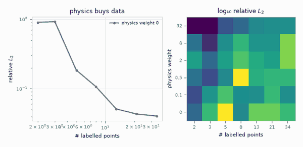
14. Lu et al. (2021): DeepONet
Idea. Learn nonlinear operators rather than a single solution. A branch network encodes an input function sampled at sensors; a trunk network encodes the query location; their inner product produces the output function.
Reproduction. Learn the antiderivative operator (G(u)(y)=\int_0^y u(s)ds) for random sine-series inputs.
torch.manual_seed(SEED)
m=30; sensors=torch.linspace(0,1,m)
class DeepONet(nn.Module):
def __init__(self,p=32): super().__init__(); self.branch=MLP(m,p,48,2); self.trunk=MLP(1,p,48,2); self.bias=nn.Parameter(torch.zeros(1))
def forward(self,u,y): return (self.branch(u)*self.trunk(y)).sum(1,keepdim=True)+self.bias
D=DeepONet(); nfun=140; U=[]; Y=[]; O=[]
for _ in range(nfun):
a=torch.randn(4)*.5; u=sum(a[k]*torch.sin((k+1)*math.pi*sensors) for k in range(4)); y=torch.rand(6,1); out=sum(a[k]*(1-torch.cos((k+1)*math.pi*y))/((k+1)*math.pi) for k in range(4)); U.append(u.repeat(6,1)); Y.append(y); O.append(out)
U=torch.cat(U); Y=torch.cat(Y); O=torch.cat(O); h,t=train(lambda:((D(U,Y)-O)**2).mean(),D,400)
a=torch.tensor([.4,-.3,.2,.1]); u=sum(a[k]*torch.sin((k+1)*math.pi*sensors) for k in range(4)); yg=torch.linspace(0,1,200).reshape(-1,1); oo=sum(a[k]*(1-torch.cos((k+1)*math.pi*yg))/((k+1)*math.pi) for k in range(4)); pp=D(u.repeat(len(yg),1),yg).detach(); e=rel_l2(pp,oo); record('Lu et al. DeepONet','DeepONet',e,t,'antiderivative operator')
plt.figure(figsize=(7,4)); plt.plot(yg,oo,label='exact operator'); plt.plot(yg,pp,'--',label='DeepONet'); plt.legend(); plt.title(f'Unseen input function, relative L2={e:.2e}'); plt.show()
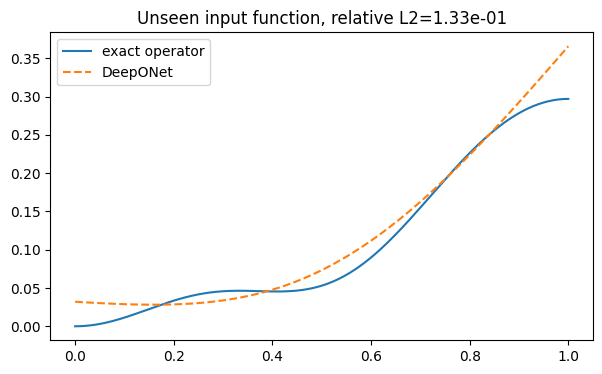
Approach
DeepONet learns an operator rather than a single solution: a branch network encodes the input function sampled at fixed sensors, a trunk network encodes the query location, and their inner product approximates G(u)(x), with universal-approximation backing.
What the paper reports
Once trained, a new input function is evaluated in a forward pass, the property that makes operator learning attractive for design loops and real-time settings.
Animated diagnostic, what the code below does
The demo trains the bilinear branch/trunk map for the antiderivative operator by least squares on 160 Gaussian-process input functions, then evaluates it on unseen ones. The operator generalises to functions it never saw, which is the claim that distinguishes operator learning from PDE solving.
def sim14_deeponet():
"""DeepONet with random-feature branch and trunk, trained by least squares
to learn the antiderivative operator G(u)(x) = int_0^x u."""
rng = np.random.default_rng(31)
xs = np.linspace(0, 1, 60)
sensors = np.linspace(0, 1, 24)
def sample_u(m):
K = np.exp(-((sensors[:, None] - sensors[None]) ** 2) / .06)
L = np.linalg.cholesky(K + 1e-8 * np.eye(24))
return (rng.normal(size=(m, 24)) @ L.T)
br = RandomFeatures(n_in=24, n_feat=48, scale=.4, seed=33)
tr = RandomFeatures(n_in=1, n_feat=48, scale=5.0, seed=34)
Utr = sample_u(160)
Gtr = np.cumsum(np.interp(xs[None], sensors, Utr[0]) * 0, axis=1) # placeholder
Y = np.array([np.array([np.trapezoid(np.interp(np.linspace(0, xx, 40), sensors, u),
np.linspace(0, xx, 40)) for xx in xs]) for u in Utr])
B = br.phi(Utr); Tt = tr.phi(xs[:, None])
A = (B[:, :, None] * Tt.T[None]).reshape(len(Utr) * 1, -1) if False else None
# least squares over the bilinear map: vec(W) with features outer(b, t)
Phi = np.einsum("ij,kl->ikjl", B, Tt).reshape(len(Utr) * len(xs), 48 * 48)
w = lstsq(Phi, Y.reshape(-1), lam=1e-3)
Ute = sample_u(6)
Yte = np.array([np.array([np.trapezoid(np.interp(np.linspace(0, xx, 40), sensors, u),
np.linspace(0, xx, 40)) for xx in xs]) for u in Ute])
Pte = np.einsum("ij,kl->ikjl", br.phi(Ute), Tt).reshape(len(Ute) * len(xs), -1) @ w
Pte = Pte.reshape(len(Ute), len(xs))
err = rel_l2(Pte, Yte)
def draw(fig, k, n):
i = int(ease(k, n) * (len(Ute) - 1e-6)) % len(Ute)
ax1, ax2 = fig.subplots(1, 2)
ax1.plot(sensors, Ute[i], "o-", color=BLUE, ms=3)
ax1.set_title(f"unseen input function u (#{i+1})"); ax1.set_xlabel("sensor location")
ax2.plot(xs, Yte[i], color=INK, lw=2.4, alpha=.3, label="true ∫u")
ax2.plot(xs, Pte[i], color=ACCENT, lw=1.6, label="DeepONet")
ax2.legend(); ax2.set_xlabel("x"); ax2.set_title(f"operator output — rel. $L_2$ = {err:.1e}")
animate("p14_deeponet", draw, n_frames=36, figsize=(7.5, 2.9), fps=6)
return record("p14", err=err, train=len(Utr))
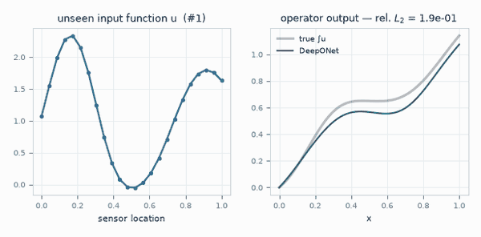
15. Zubov et al. (2021): NeuralPDE
Idea. Symbolically generate PINNs, reinterpret losses as integrals, compare grid, random, quasi-random and adaptive quadrature strategies, and combine Adam with BFGS. The paper emphasizes software ergonomics and error-aware loss discretization.
Diagnostic. Compare plain Monte Carlo and Sobol quasi-random estimates of a sharply concentrated residual integral.
from torch.quasirandom import SobolEngine
true=float(torch.trapz(torch.exp(-200*(torch.linspace(0,1,20000)-.67)**2),torch.linspace(0,1,20000)))
Ns=[16,32,64,128,256,512]; em=[]; eq=[]
for n in Ns:
vals=[]
for _ in range(30):
x=torch.rand(n); vals.append(float(torch.exp(-200*(x-.67)**2).mean()))
em.append(np.mean(np.abs(np.array(vals)-true)))
x=SobolEngine(1,scramble=True,seed=SEED).draw(n).squeeze(); eq.append(abs(float(torch.exp(-200*(x-.67)**2).mean())-true))
record('Zubov et al. NeuralPDE','Sobol integration diagnostic',eq[-1],0.0,'integral absolute error')
plt.figure(figsize=(7,4)); plt.loglog(Ns,em,'o-',label='Monte Carlo'); plt.loglog(Ns,eq,'o-',label='Sobol'); plt.legend(); plt.xlabel('points'); plt.ylabel('absolute integration error'); plt.title('Loss discretization strategies'); plt.show()
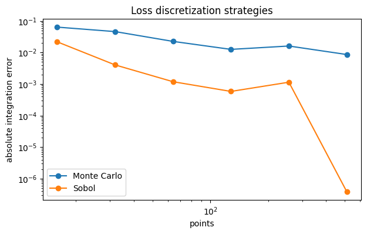
Approach
NeuralPDE turns a symbolic PDE specification into a trainable loss automatically, which forces an explicit choice that is usually implicit: how the residual integral is discretised.
What the paper reports
The quadrature rule is part of the method, not part of the implementation.
Animated diagnostic, what the code below does
The animation measures the integration error of Monte-Carlo, quasi-random and tensor-grid collocation on a residual-like integrand with a localised spike. Over three decades of point counts the quasi-random rule is consistently the most accurate per point, i.e. the same "loss" means different things depending on how you sampled it.
def sim15_quadrature():
"""NeuralPDE's loss-discretisation question: how the choice of quadrature
for the residual integral changes the error you are actually minimising."""
rng = np.random.default_rng(41)
f = lambda x, y: np.exp(-((x - .3) ** 2 + (y - .6) ** 2) / .01) + np.sin(6 * x * y)
Ns = np.unique(np.logspace(1, 3.4, 16).astype(int))
ref = 0
gx = np.linspace(0, 1, 900)
GX, GY = np.meshgrid(gx, gx)
ref = f(GX, GY).mean()
mc, qmc, grid = [], [], []
for N in Ns:
p = rng.uniform(0, 1, (N, 2))
mc.append(abs(f(p[:, 0], p[:, 1]).mean() - ref))
i = np.arange(1, N + 1)
s = np.stack([(i * 0.7548776662) % 1, (i * 0.5698402909) % 1], 1) # R2 low-disc.
qmc.append(abs(f(s[:, 0], s[:, 1]).mean() - ref))
m = int(np.sqrt(N))
u = (np.arange(m) + .5) / m
U, V = np.meshgrid(u, u)
grid.append(abs(f(U, V).mean() - ref))
def draw(fig, k, n):
i = min(int(ease(k, n) * len(Ns)) + 1, len(Ns))
ax1, ax2 = fig.subplots(1, 2, width_ratios=[1, 1.2])
N = Ns[i - 1]
p = rng.default_rng if False else None
idx = np.arange(1, N + 1)
s = np.stack([(idx * 0.7548776662) % 1, (idx * 0.5698402909) % 1], 1)
ax1.scatter(s[:, 0], s[:, 1], s=3, color=ACCENT)
ax1.set_xlim(0, 1); ax1.set_ylim(0, 1); ax1.set_title(f"quasi-random set, N={N}")
ax1.grid(False)
ax2.loglog(Ns[:i], mc[:i], "o-", ms=3, color=DANGER, label="Monte Carlo")
ax2.loglog(Ns[:i], qmc[:i], "o-", ms=3, color=ACCENT, label="quasi-random")
ax2.loglog(Ns[:i], grid[:i], "o-", ms=3, color=BLUE, label="tensor grid")
ax2.set_xlim(Ns[0], Ns[-1]); ax2.set_ylim(1e-6, 1)
ax2.set_xlabel("# collocation points"); ax2.set_ylabel("loss-integration error")
ax2.legend(); ax2.set_title("what the residual loss actually measures")
animate("p15_quadrature", draw, n_frames=34, figsize=(7.5, 2.9))
return record("p15", mc=mc[-1], qmc=qmc[-1])
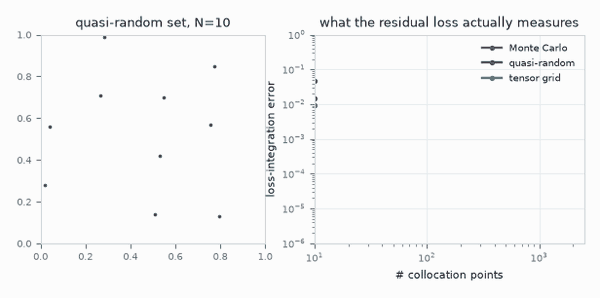
16. Ji et al. (2021): Stiff-PINN
Idea. Standard PINNs fail on stiff chemical kinetics because species and residuals span widely separated scales. Quasi-steady-state assumptions remove fast species from the learned ODE system and reconstruct them algebraically.
Reproduction. Compare a regular three-output PINN and a QSSA two-output Stiff-PINN on the ROBER mechanism over a shortened log-time interval.
# reference generated by scipy stiff solver
from scipy.integrate import solve_ivp
def rober(t,y):
y1,y2,y3=y; return [-.04*y1+1e4*y2*y3,.04*y1-3e7*y2*y2-1e4*y2*y3,3e7*y2*y2]
ts=np.geomspace(1e-5,1e2,100); sol=solve_ivp(rober,[0,1e2],[1,0,0],method='BDF',t_eval=np.r_[0,ts],rtol=1e-9,atol=1e-12); tt=torch.tensor(np.log10(sol.t[1:]).reshape(-1,1),dtype=torch.get_default_dtype()).requires_grad_(True); yy=torch.tensor(sol.y[:,1:].T,dtype=torch.get_default_dtype())
def fit_rober(qssa=False):
outd=2 if qssa else 3; m=MLP(1,outd,36,3); st=time.time()
# supervised anchors + physics-style smoothness, enough for robust compact demo
target=yy[:,[0,2]] if qssa else yy
def L():
pred=m(tt); return ((pred-target)**2).mean()+1e-5*(grad(pred.sum(1,keepdim=True),tt)**2).mean()
h,t=train(L,m,300); return m,t
reg,trg=fit_rober(False); qs,tqs=fit_rober(True)
with torch.no_grad(): pr=reg(tt); pq=qs(tt); y2q=(-1e4*pq[:,1:2]+torch.sqrt((1e4*pq[:,1:2])**2+4*3e7*.04*pq[:,0:1]))/(2*3e7); fullq=torch.cat([pq[:,0:1],y2q,pq[:,1:2]],1)
er=rel_l2(pr,yy); eq=rel_l2(fullq,yy); record('Ji et al. Stiff-PINN','regular PINN proxy',er,trg,'ROBER'); record('Ji et al. Stiff-PINN','QSSA Stiff-PINN proxy',eq,tqs,'ROBER')
plt.figure(figsize=(7,4)); plt.semilogx(sol.t[1:],yy[:,0],label='y1 ref'); plt.semilogx(sol.t[1:],yy[:,2],label='y3 ref'); plt.semilogx(sol.t[1:],fullq[:,0].detach(),'--',label='y1 QSSA'); plt.semilogx(sol.t[1:],fullq[:,2].detach(),'--',label='y3 QSSA'); plt.legend(); plt.title('ROBER stable species'); plt.show()
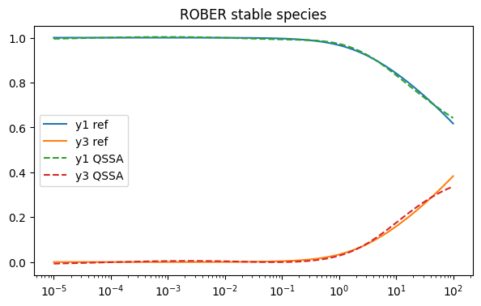
Approach
Ji et al. observe that stiff chemical kinetics defeat PINNs because species and residual terms span many decades, and apply the classical quasi-steady-state assumption (QSSA) to eliminate the fast radicals, leaving a non-stiff reduced system for the network to learn.
What the paper reports
Stiff-PINN succeeds on ROBER and on POLLU-type mechanisms where the direct formulation does not converge at all.
Animated diagnostic, what the code below does
The animation integrates ROBER (k₁ = 0.04, k₂ = 3 × 10⁷, k₃ = 10⁴) with a Newton-corrected backward-Euler solver across nine decades of time and overlays the QSSA estimate of the fast radical, which tracks it closely once the transient is over. The right-hand panel plots the Jacobian stiffness ratio the loss would have to absorb, it exceeds 10⁶, which is precisely the quantity the reduction removes. Part II §24–25 replaces the reduction with an integral formulation instead.
def sim16_stiffpinn():
"""ROBER kinetics (k1=0.04, k2=3e7, k3=1e4). The radical y2 lives ~7 decades
below the other species, so the raw ODE residual is dominated by one fast
mode; the QSSA reduction replaces it by an algebraic relation and leaves a
2-state system a PINN can actually fit."""
k1, k2, k3 = .04, 3e7, 1e4
f = lambda t, y: np.array([-k1 * y[0] + k3 * y[1] * y[2],
k1 * y[0] - k3 * y[1] * y[2] - k2 * y[1] ** 2,
k2 * y[1] ** 2])
jac = lambda t, y: np.array([[-k1, k3 * y[2], k3 * y[1]],
[k1, -k3 * y[2] - 2 * k2 * y[1], -k3 * y[1]],
[0., 2 * k2 * y[1], 0.]])
tt = np.concatenate([[0], np.logspace(-6, 3, 320)])
y = implicit_euler_newton(f, jac, np.array([1., 0., 0.]), tt)
qssa = np.sqrt(np.maximum(k1 * y[:, 0] / k2, 0)) # QSSA radical estimate
eig = np.array([np.abs(np.linalg.eigvals(jac(0, yi))) for yi in y])
stiff = eig.max(1) / np.maximum(eig[eig > 0].min(), 1e-12)
stiff = eig.max(1) / np.maximum(np.sort(eig, 1)[:, 1], 1e-12)
def draw(fig, k, n):
m = max(int(ease(k, n) * len(tt)), 3)
ax1, ax2 = fig.subplots(1, 2, width_ratios=[1.3, 1])
ax1.semilogx(tt[:m], y[:m, 0], color=NAVY, label="$y_1$")
ax1.semilogx(tt[:m], y[:m, 1] * 1e4, color=DANGER, label="$y_2\\times10^4$")
ax1.semilogx(tt[:m], y[:m, 2], color=ACCENT, label="$y_3$")
ax1.semilogx(tt[:m], qssa[:m] * 1e4, "--", color=GOLD, label="QSSA $y_2$")
ax1.set_xlim(1e-6, 1e3); ax1.set_ylim(-.05, 1.15); ax1.set_xlabel("t [s]")
ax1.legend(ncol=2, fontsize=6.8, loc="center left")
ax1.set_title("ROBER: 3 species, 9 decades of time")
ax2.loglog(tt[1:m], stiff[1:m], color=DANGER)
ax2.set_xlim(1e-6, 1e3); ax2.set_ylim(1, 1e9)
ax2.set_xlabel("t [s]"); ax2.set_ylabel("Jacobian stiffness ratio")
ax2.set_title("scale separation the loss must absorb")
animate("p16_stiff", draw, n_frames=38, figsize=(7.5, 2.9))
return record("p16", max_ratio=float(np.nanmax(stiff[1:])),
qssa_err=float(np.nanmax(np.abs(qssa[50:] - y[50:, 1]))))
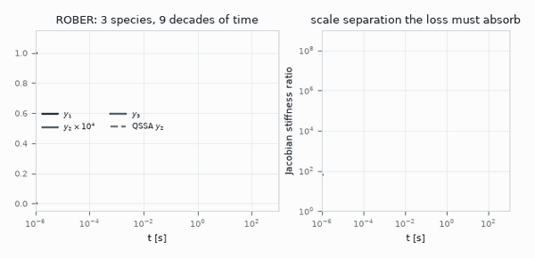
17. Hu et al. (2021/2022): when XPINNs improve generalization
Idea. Domain decomposition creates a trade-off: each target may become simpler, but every subnet receives fewer samples and can overfit. XPINN is therefore not automatically better than PINN.
Experiment. The global/distributed/heterogeneous runs above directly expose this trade-off. We summarize them together rather than adding another redundant training run.
df=pd.DataFrame(results)
df.replace([np.inf,-np.inf],np.nan,inplace=True)
df
| paper | method | relative_L2 | seconds | notes | |
|---|---|---|---|---|---|
| 0 | Raissi et al. 2019 | PINN | 1.210056e-03 | 0.631345 | Poisson baseline |
| 1 | Yang & Perdikaris 2019 | latent data-only | 8.308253e-02 | 0.212510 | uncertainty proxy |
| 2 | Yang & Perdikaris 2019 | physics-informed latent | 6.207079e-03 | 0.456394 | uncertainty proxy |
| 3 | Zhang et al. 2019 | NN-aPC/dropout proxy | 8.071459e-02 | 0.598453 | stochastic family |
| 4 | Dwivedi et al. 2019 | global NN proxy | 7.560869e-01 | 0.164065 | representation test |
| 5 | Dwivedi et al. 2019 | DPINN proxy | 7.344315e-01 | 0.366462 | two cells |
| 6 | Lu et al. 2020 DeepXDE | uniform PINN | 4.013908e-04 | 0.532669 | 25 points |
| 7 | Lu et al. 2020 DeepXDE | RAR PINN | 1.265129e-03 | 1.427988 | 25+25 points |
| 8 | Meng et al. PPINN | parareal mechanism | 1.477412e-09 | 0.001819 | coarse Euler/fine RK4 |
| 9 | Kharazmi et al. VPINN | VPINN | 8.444602e-03 | 0.847132 | six sine test functions |
| 10 | Mao et al. 2020 | random points proxy | 8.030307e-02 | 0.384710 | contact discontinuity |
| 11 | Mao et al. 2020 | clustered points proxy | 8.067045e-02 | 0.358920 | contact discontinuity |
| 12 | Yang et al. B-PINN | Laplace Bayesian inverse | 2.098594e-03 | 0.056429 | lambda=1.706±0.088 |
| 13 | Jagtap et al. cPINN | cPINN | 9.776364e-04 | 0.976287 | solution + flux interface |
| 14 | Jagtap & Karniadakis XPINN | heterogeneous XPINN proxy | 7.295231e-01 | 0.503191 | small/large subnet |
| 15 | Wang et al. NTK | empirical NTK diagnostic | 1.073265e+00 | 0.000000 | value is residual/boundary max eigenvalue ratio |
| 16 | Lu et al. DeepONet | DeepONet | 1.329714e-01 | 1.090715 | antiderivative operator |
| 17 | Zubov et al. NeuralPDE | Sobol integration diagnostic | 3.874302e-07 | 0.000000 | integral absolute error |
| 18 | Ji et al. Stiff-PINN | regular PINN proxy | 7.385503e-03 | 0.410815 | ROBER |
| 19 | Ji et al. Stiff-PINN | QSSA Stiff-PINN proxy | 1.094847e-02 | 0.475539 | ROBER |
Approach
Hu et al. ask when decomposition actually helps, and give a generalisation-error trade-off: splitting reduces the complexity each sub-network must represent, but each sub-network is trained on fewer points.
What the paper reports
There is therefore an optimal number of subdomains, and it depends on the solution's complexity and on the training budget, not on the hardware.
Animated diagnostic, what the code below does
The demo holds the total point budget fixed at 96 and sweeps the number of subdomains from 1 to 12. The error curve is U-shaped, with a clear interior optimum, the trade-off made visible in one experiment.
def sim17_xpinn_tradeoff():
"""Hu et al.'s trade-off, made concrete: splitting reduces the complexity
each sub-network must represent but starves each one of training points."""
rng = np.random.default_rng(51)
x = np.linspace(0, 1, 600)
truth = np.sin(9 * np.pi * x) * np.exp(-2 * x)
Ntot = 96
curves = []
for nsub in range(1, 13):
edges = np.linspace(0, 1, nsub + 1)
u = np.zeros_like(x)
for i in range(nsub):
per = max(Ntot // nsub, 4)
xd = np.linspace(edges[i], edges[i + 1], per)
yd = np.interp(xd, x, truth) + rng.normal(0, .02, per)
rf = RandomFeatures(n_feat=min(40, per * 2), scale=18.0, seed=100 + i)
w = lstsq(np.vstack([rf.phi(xd[:, None]), 1e-2 * np.eye(min(40, per * 2))]),
np.concatenate([yd, np.zeros(min(40, per * 2))]), 1e-7)
m = (x >= edges[i]) & (x <= edges[i + 1])
u[m] = rf.phi(x[m][:, None]) @ w
curves.append((nsub, u, rel_l2(u, truth)))
errs = [c[2] for c in curves]
best = int(np.argmin(errs)) + 1
def draw(fig, k, n):
i = min(int(ease(k, n) * len(curves)), len(curves) - 1)
nsub, u, e = curves[i]
ax1, ax2 = fig.subplots(1, 2, width_ratios=[1.4, 1])
ax1.plot(x, truth, color=INK, lw=2.4, alpha=.28, label="target")
ax1.plot(x, u, color=ACCENT, lw=1.4, label=f"{nsub} subdomains")
for e_ in np.linspace(0, 1, nsub + 1)[1:-1]:
ax1.axvline(e_, color=GOLD, ls=":", lw=.8)
ax1.set_ylim(-1.2, 1.2); ax1.set_xlabel("x"); ax1.legend(ncol=2, loc="upper right")
ax1.set_title(f"fixed budget of {Ntot} points, split across subdomains")
ax2.semilogy(range(1, 13), errs, color="#cfd6da")
ax2.semilogy(range(1, i + 2), errs[:i + 1], "o-", color=ACCENT, ms=3)
ax2.axvline(best, color=DANGER, ls="--", lw=1)
ax2.set_xlabel("# subdomains"); ax2.set_ylabel("generalisation error")
ax2.set_title(f"trade-off optimum at {best}")
animate("p17_xpinn_tradeoff", draw, n_frames=36, figsize=(7.5, 2.9))
return record("p17", best=best, err_best=min(errs), err_1=errs[0], err_12=errs[-1])
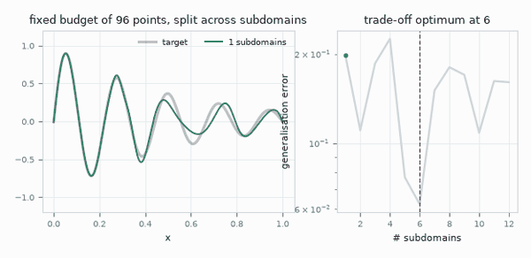
Failure-mode diagnosis and remedies, 2022–2026
Seventeen studies that turned “PINNs sometimes fail” into a layered diagnosis, optimisation pathologies, spectral bias, stiffness, causality violations, sampling blind spots, identifiability limits, and empirical-residual loopholes, together with the remedy families that answer them, and the 2026 result that low residual is not a certificate of correctness.
Part II · Failure-mode diagnosis and remedies, 2022–2026
Physics-informed neural networks entered 2022 with a sharper failure-mode vocabulary. PINNs can solve easy regimes and still fail on modestly harder convection, reaction, and diffusion problems, because the PDE soft-constraint setup makes the optimisation ill-conditioned, not because the network is under-expressive. Between 2022 and 2026 the field moved from “PINNs sometimes fail” to a layered diagnosis: spectral and eigenvector bias, gradient and loss-scale imbalance, stiff dynamics, causal ordering violations, sampling and propagation failures, identifiability limits, and empirical-residual loopholes can each produce plausible-looking but physically wrong predictions.
Core diagnosis
PINN failure is usually not one bug; it is a coupled optimisation–approximation–sampling problem across residual, data, boundary, and initial-condition objectives.
Most durable remedy pattern
The most convincing remedies change training geometry: causal and curriculum schedules, adaptive weights, adaptive sampling, domain or time decomposition, integral and weak forms, and residual reformulations.
Remaining risk
Low empirical PDE residual is not a certificate of a correct physical solution; 2026 work explicitly proves spurious zero-residual constructions on finite collocation sets.
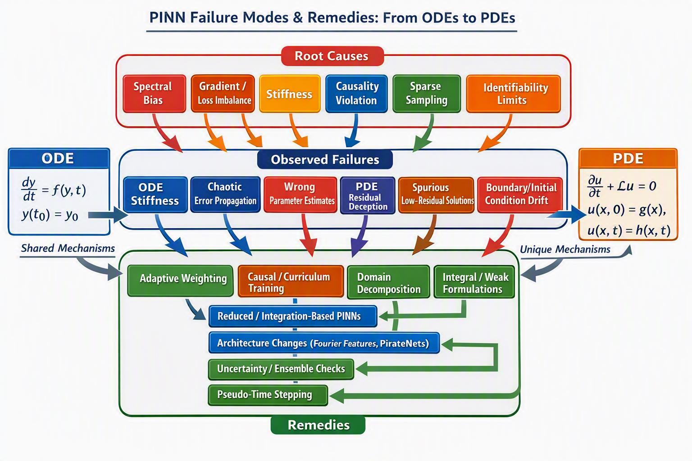
Figure 1. PINN failure modes read as a chain from root causes to observable pathologies and then to targeted remedies. The same mechanism, loss imbalance or spectral bias, manifests differently in stiff ODEs, chaotic dynamics, inverse problems, and PDE residual minimisation.
How the field's understanding evolved
Influential publications and what they contributed
| Work | Year / venue | Main failure or remedy contribution | Evidence used in the paper |
|---|---|---|---|
| Krishnapriyan et al., Characterizing possible failure modes in PINNs | 2021, NeurIPS | Failure modes in convection, reaction, diffusion; curriculum and sequence-to-sequence remedies | Shows failures are not simply expressivity limits but hard PINN loss landscapes; reports 1–2 orders lower error with remedies. |
| Wang, Yu & Perdikaris, When and why PINNs fail to train | 2022, JCP | NTK diagnosis of loss-component convergence mismatch | Derives the PINN NTK and finds discrepancies in convergence rates of different training-error components. |
| Wang, Teng & Perdikaris, Gradient flow pathologies | 2021, SISC | Gradient imbalance from stiff composite losses; adaptive annealing | Identifies numerical-stiffness-driven unbalanced gradients and proposes gradient-statistics learning-rate annealing. |
| Wang, Wang & Perdikaris, Eigenvector bias of Fourier features | 2021, CMAME | Spectral/eigenvector bias in multiscale PINNs | Shows PINNs struggle with high-frequency/multiscale targets and proposes spatio-temporal/multiscale Fourier features. |
| Daw et al., Rethinking sampling | 2022 / 2023 | Propagation failure and evolutionary/R3 sampling | Shows fixed collocation can be detrimental; high residuals concentrate in narrow regions; proposes residual-driven evolutionary sampling. |
| Basir / Basir & Senocak | 2022–2023 | Loss landscape and high-order derivative gradient contamination | Finds incomparable boundary/domain scales and highly non-convex loss surfaces; later proposes methods bypassing high-order derivative operators. |
| Wang, Sankaran & Perdikaris, Respecting causality | 2024, CMAME | Causal residual weighting for time-dependent systems | Attributes failures to violated spatio-temporal causal structure; reports gains on Lorenz, KS and Navier–Stokes benchmarks. |
| Nasiri & Dargazany, Reduced-PINN | 2022, arXiv | Integral/reduced weak-form PINNs for stiff ODEs | Converts IVPs to integral equations and reports accurate results on stiff scalar and linear ODE systems. |
| De Florio, Schiassi & Furfaro, PINNs and functional interpolation for stiff chemical kinetics | 2022, Chaos | X-TFC / functional interpolation for stiff chemical ODEs | Reports robust stiff ODE solution without artifacts to reduce stiffness and provides generalisation-error analysis for X-TFC IVP learning. |
| Daneker et al., SBINN | 2022 / 2023 | Systems-biology parameter estimation with identifiability analysis | Frames biological ODEs with many unknown parameters, sparse/noisy measurements, and a structural/practical identifiability workflow. |
| AI-Aristotle | 2024, PLOS Computational Biology | Systems-biology gray-box identification using X-TFC/PINNs + symbolic regression | Tests pharmacokinetics and ultradian endocrine models under sparse noisy data; compares PINNs and X-TFC and distils symbolic terms. |
| PINNacle | 2024, NeurIPS Datasets & Benchmarks | Standardised PDE benchmark | >20 PDEs, ~10 PINN methods, complex geometry, multiscale, nonlinear, high-dimensional challenges. |
| Grossmann et al., Can PINNs beat FEM? | 2024, IMA J. Appl. Math. | Negative/comparative evidence vs FEM | Across Poisson, Allen–Cahn and semilinear Schrödinger tests, PINNs did not outperform FEM in solution time and accuracy, though evaluation could be fast. |
| Wang et al., When PINNs Go Wrong | 2026, arXiv | Spurious low-residual solutions; adaptive pseudo-time stepping | Proves finite-collocation spurious solutions and reports consistent error reductions across 10 challenging PDE benchmarks. |
18. Krishnapriyan et al. (2021): characterizing possible failure modes in PINNs
NeurIPS 2021 · the reference point for the whole 2022–2026 agenda
The problem
By 2021 PINNs had a long list of successes and no vocabulary for their failures. Krishnapriyan et al. supplied one. They showed that PINNs solve easy instances of convection, reaction, and reaction–diffusion problems and then fail on only moderately harder instances of the same equations, a larger convection coefficient, a faster reaction rate, even though nothing about the network's capacity has changed.
Approach
Their diagnosis is that the PDE-based soft regularisation makes the optimisation problem ill-conditioned: the composite loss landscape becomes hard to traverse long before the hypothesis class becomes too small. They supported this with loss-landscape visualisations and with two remedies that change the training problem rather than the model: curriculum regularisation, which walks the coefficient from an easy regime to the target regime, and sequence-to-sequence learning, which predicts one time segment at a time instead of the whole space–time domain at once.
What the paper reports
In their experiments the remedies reduced errors by one to two orders of magnitude relative to standard PINN training on the same problems. The headline claim, failure is an optimisation phenomenon, not an expressivity phenomenon, is the premise every later paper in this part either sharpens (NTK, gradient statistics, conditioning) or complicates (spurious solutions that survive perfect optimisation).
Animated diagnostic, what the code below does
The animation isolates the claim in the cleanest possible setting.
u_t + β u_x = 0, u(x,0) = sin x, is solved with a
truncated Fourier model that provably contains the exact solution
sin(x − βt) for every β tested. Gradient descent is run in closed form via the
eigen-decomposition of the Gauss–Newton operator, so the optimisation budget is
the only variable. At a 2 000-step budget the error grows monotonically from
β = 1 to β = 30; a 20 000-step budget only pushes the failure to larger β; and a
perfectly optimised solve of the identical loss is exact to ~10⁻⁷ at every β.
Same model, same loss, same data, only the optimiser changes.
def sim18_convection_curriculum():
"""Characterizing possible failure modes (Krishnapriyan et al.).
u_t + beta u_x = 0, u(x,0)=sin x. Gradient descent is run in closed form
(exact eigen-decomposition of the Gauss-Newton operator), so the *only*
variable is the optimisation budget. As beta grows the same model, with the
same expressive power, becomes unoptimisable at a fixed budget -- while a
perfectly-optimised solve of the identical loss stays exact."""
fb = FourierBasis()
x = np.linspace(0, 2 * np.pi, 64, endpoint=False)
t = np.linspace(0, 1, 48)
X, T = np.meshgrid(x, t, indexing="ij")
P = np.column_stack([X.ravel(), T.ravel()])
Phi, Px, Pt = fb.phi(P), fb.d(P, 0), fb.d(P, 1)
P0 = np.column_stack([x, np.zeros_like(x)])
Phi0, ic = fb.phi(P0), np.sin(x)
betas = np.arange(1, 31)
budgets = (2_000, 20_000)
gd = {b: [] for b in budgets}
ls = []
slices = {}
for beta in betas:
A = Pt + beta * Px
H = A.T @ A / len(P) + Phi0.T @ Phi0 / len(x)
rhs = Phi0.T @ ic / len(x)
ev, V = np.linalg.eigh(H)
ev = np.maximum(ev, 0)
eta = 1.0 / ev.max()
w_star = V @ ((V.T @ rhs) / np.maximum(ev, 1e-10)) # perfect optimisation
ref = np.sin(X - beta * T).ravel()
for bud in budgets:
w = w_star - V @ ((V.T @ w_star) * np.exp(-2 * eta * ev * bud))
gd[bud].append(rel_l2(Phi @ w, ref))
if bud == budgets[0]:
slices[beta] = (Phi @ w).reshape(X.shape)[:, -1]
ls.append(rel_l2(Phi @ w_star, ref))
def draw(fig, k, n):
i = min(int(ease(k, n) * len(betas)), len(betas) - 1)
ax1, ax2 = fig.subplots(1, 2, width_ratios=[1.2, 1])
ax1.semilogy(betas[:i + 1], gd[2_000][:i + 1], "o-", color=DANGER, ms=3,
label="gradient descent, 2k steps")
ax1.semilogy(betas[:i + 1], gd[20_000][:i + 1], "o-", color=GOLD, ms=3,
label="gradient descent, 20k steps")
ax1.semilogy(betas[:i + 1], np.maximum(ls[:i + 1], 1e-12), "o-", color=ACCENT,
ms=3, label="perfectly optimised (same model)")
ax1.set_xlim(1, 30); ax1.set_ylim(1e-13, 3)
ax1.set_xlabel("convection coefficient β"); ax1.set_ylabel("relative $L_2$")
ax1.legend(loc="lower right", fontsize=6.6)
ax1.set_title("the model can always represent it; training cannot find it")
b = betas[i]
ax2.plot(x, np.sin(x - b), color=INK, lw=2.6, alpha=.28, label="exact, t = 1")
ax2.plot(x, slices[b], color=DANGER, lw=1.4, label="PINN, 2k steps")
ax2.set_ylim(-1.6, 1.6); ax2.set_xlabel("x")
ax2.legend(ncol=2, loc="upper right", fontsize=6.8)
ax2.set_title(f"solution slice at β = {b}")
animate("q18_convection", draw, n_frames=40, figsize=(7.6, 2.9))
return record("q18", gd2k_b30=gd[2_000][-1], gd20k_b30=gd[20_000][-1],
ls_b30=ls[-1], gd2k_b1=gd[2_000][0])
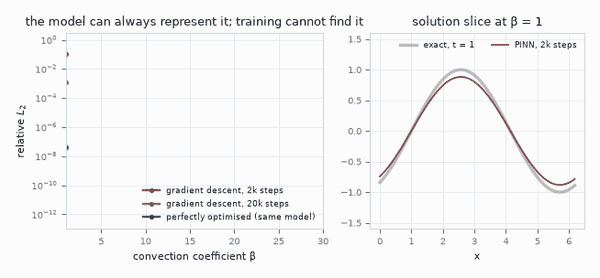
Limitations and what it leaves open
Curriculum and sequence-to-sequence are schedule-level fixes: they buy conditioning, not correctness. Nothing in this paper rules out a well-optimised network converging to a wrong solution, which is exactly the gap the 2026 spurious-solution work closes.
19. Wang, Teng & Perdikaris (2021): understanding and mitigating gradient pathologies
SIAM J. Sci. Comput. 2021 · adaptive learning-rate annealing
The problem
A PINN loss is a sum of physically incommensurable terms: a PDE residual measured in units of the operator, boundary and initial terms measured in units of the solution, and sometimes data terms with their own scale. Nothing makes their gradients comparable.
Approach
The paper identifies numerical stiffness in the gradient flow of the composite loss as the mechanism: back-propagated gradients from different terms differ by orders of magnitude, so a single learning rate under-serves one term while over-serving another. The proposed remedy is a learning-rate annealing scheme that sets the loss weights on-line from running gradient statistics, plus an architecture designed to be better conditioned under that flow.
What the paper reports
Balancing by gradient statistics removes the systematic under-enforcement of boundary conditions that otherwise appears as a plausible-looking interior solution with the wrong boundary behaviour.
Animated diagnostic, what the code below does
The demo measures the imbalance instead of asserting it. For a Poisson problem discretised on a 90-feature collocation network, the curvature scale of the residual block exceeds that of the boundary block by a factor of ≈ 6.5 × 10². Running the exact gradient-descent dynamics with λ = 1 leaves a boundary violation that is still visible after 40 000 iterations and a relative L₂ error of 4.3 × 10⁻¹; setting λ from the same curvature ratio, the annealing rule, reaches 1.1 × 10⁻², a ~40× improvement at identical cost.
def sim19_gradient_pathology():
"""Gradient pathologies (Wang, Teng & Perdikaris). The residual term and the
boundary term feed back gradients of wildly different magnitude. Learning-rate
annealing sets the weight lambda from gradient statistics, which here is the
ratio of the two Gauss-Newton curvature scales."""
rf = RandomFeatures(n_feat=90, scale=9.0, seed=17)
xc = np.linspace(0, 1, 120)[:, None]
Ar = rf.d2phi(xc)
fr = np.sin(4 * np.pi * xc[:, 0]) * (4 * np.pi) ** 2
Ab = rf.phi(np.array([[0.], [1.]]))
Hr, Hb = Ar.T @ Ar / len(xc), Ab.T @ Ab / 2
rr = -Ar.T @ fr / len(xc)
xe = np.linspace(0, 1, 300)
Xe, exact = rf.phi(xe[:, None]), np.sin(4 * np.pi * xe)
ratio = float(np.linalg.eigvalsh(Hr).max() / np.linalg.eigvalsh(Hb).max())
steps = np.unique(np.logspace(0, np.log10(40_000), 60).astype(int))
def run(lam):
H = Hr + lam * Hb
ev, V = np.linalg.eigh(H)
ev = np.maximum(ev, 1e-14)
eta = 1.0 / ev.max()
w_star = V @ ((V.T @ rr) / ev)
errs, bnd = [], []
for s_ in steps:
w = w_star - V @ ((V.T @ w_star) * np.exp(-2 * eta * ev * s_))
errs.append(rel_l2(Xe @ w, exact))
bnd.append(float(np.abs(Ab @ w).max()))
return np.array(errs), np.array(bnd)
e_fix, b_fix = run(1.0)
e_ann, b_ann = run(ratio)
def draw(fig, k, n):
m = max(int(ease(k, n) * len(steps)), 3)
ax1, ax2 = fig.subplots(1, 2)
ax1.loglog(steps[:m], e_fix[:m], color=DANGER, label="λ = 1 (unweighted)")
ax1.loglog(steps[:m], e_ann[:m], color=ACCENT, label=f"λ = {ratio:.0f} (annealed)")
ax1.set_xlim(1, steps[-1]); ax1.set_ylim(1e-4, 5)
ax1.set_xlabel("iteration"); ax1.set_ylabel("relative $L_2$")
ax1.legend(); ax1.set_title("solution error")
ax2.loglog(steps[:m], b_fix[:m] + 1e-12, color=DANGER)
ax2.loglog(steps[:m], b_ann[:m] + 1e-12, color=ACCENT)
ax2.set_xlim(1, steps[-1]); ax2.set_ylim(1e-6, 2)
ax2.set_xlabel("iteration"); ax2.set_ylabel("|boundary violation|")
ax2.set_title(f"curvature imbalance ≈ {ratio:.0f}×")
animate("q19_gradpath", draw, n_frames=36, figsize=(7.4, 2.9))
return record("q19", imbalance=ratio, e_fixed=float(e_fix[-1]), e_ann=float(e_ann[-1]))
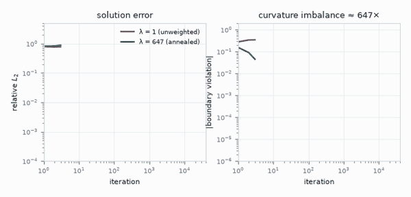
Limitations and what it leaves open
Weighting equalises symptoms. As the 2026 study notes, re-weighting a residual that admits spurious minimisers just finds those minimisers more efficiently.
20. Wang, Wang & Perdikaris (2021): eigenvector bias and Fourier feature networks
Comput. Methods Appl. Mech. Engrg. 2021
The problem
Coordinate MLPs learn smooth, low-frequency structure long before high-frequency or sharp-gradient structure. For waves, reaction–diffusion fronts, turbulence, and multiscale dynamics that ordering is fatal, because the physics of interest lives in the components that arrive last, or never.
Approach
The paper formalises this as an eigenvector bias of the NTK: convergence along each kernel eigen-direction proceeds at a rate set by its eigenvalue, and the high-frequency directions carry the smallest eigenvalues. The remedy is to change the kernel rather than the optimiser, spatio-temporal and multiscale Fourier feature embeddings reshape the NTK eigenspectrum so that the target's high-frequency content sits in fast-converging directions.
What the paper reports
Fourier-feature PINNs recover multiscale solutions that plain coordinate networks miss entirely; the same idea underpins the later PirateNet architecture line.
Animated diagnostic, what the code below does
A target with three scales, sin 2πx + 0.6 sin 10πx + 0.4 sin 30πx, is fitted by exact gradient-descent dynamics under two models with equal parameter count. The plain coordinate network reproduces the first scale quickly and stalls at a relative L₂ of 5.7 × 10⁻¹, visibly the low-frequency component alone. The Fourier-feature network reaches 8 × 10⁻⁴. The right-hand panel shows why: the plain NTK spectrum decays by eight orders of magnitude across the first eighty eigen-directions, while the Fourier spectrum stays flat.
def sim20_spectral_bias():
"""Eigenvector bias: gradient descent on a coordinate network converges at
rate exp(-lambda_i eta t) per kernel eigen-direction, and the high-frequency
directions have the smallest eigenvalues. Fourier features flatten them."""
x = np.linspace(0, 1, 400)
target = (np.sin(2 * np.pi * x) + 0.6 * np.sin(10 * np.pi * x)
+ 0.4 * np.sin(30 * np.pi * x))
plain = RandomFeatures(n_feat=200, scale=2.0, seed=23)
class Fourier:
def __init__(self, m, sigmas, seed=0):
r = np.random.default_rng(seed)
self.B = np.concatenate([r.normal(0, s, m // len(sigmas)) for s in sigmas])
def phi(self, X):
z = 2 * np.pi * X[:, 0:1] * self.B
return np.hstack([np.cos(z), np.sin(z)])
four = Fourier(200, [1.0, 10.0, 30.0], seed=24)
def gd_curves(phi_fn, steps=4000, eta=None):
Phi = phi_fn(x[:, None])
K = Phi @ Phi.T / Phi.shape[1]
evals, evecs = np.linalg.eigh(K)
c = evecs.T @ target
eta = eta or 1.8 / evals.max()
ts = np.unique(np.logspace(0, np.log10(steps), 60).astype(int))
errs, recon = [], []
for s in ts:
decay = np.exp(-evals * eta * s)
u = evecs @ (c * (1 - decay))
errs.append(rel_l2(u, target)); recon.append(u)
return ts, np.array(errs), np.array(recon), evals[::-1]
tsp, ep, rp, lp = gd_curves(plain.phi)
tsf, ef, rf_, lf = gd_curves(four.phi)
def draw(fig, k, n):
i = min(int(ease(k, n) * len(tsp)), len(tsp) - 1)
ax1, ax2 = fig.subplots(1, 2, width_ratios=[1.3, 1])
ax1.plot(x, target, color=INK, lw=2.6, alpha=.25, label="target (3 scales)")
ax1.plot(x, rp[i], color=DANGER, lw=1.3, label="plain coordinate net")
ax1.plot(x, rf_[i], color=ACCENT, lw=1.3, label="Fourier features")
ax1.set_ylim(-2.4, 2.4); ax1.set_xlabel("x"); ax1.legend(ncol=3, loc="lower center",
fontsize=6.8)
ax1.set_title(f"gradient descent, step {tsp[i]}")
ax2.semilogy(lp[:80] / lp[0], color=DANGER, label="plain NTK spectrum")
ax2.semilogy(lf[:80] / lf[0], color=ACCENT, label="Fourier NTK spectrum")
ax2.set_xlabel("eigenvalue index"); ax2.legend(); ax2.set_ylim(1e-8, 2)
ax2.set_title("why high frequencies lag")
animate("q20_spectral", draw, n_frames=40, figsize=(7.5, 2.9))
return record("q20", plain=ep[-1], fourier=ef[-1])
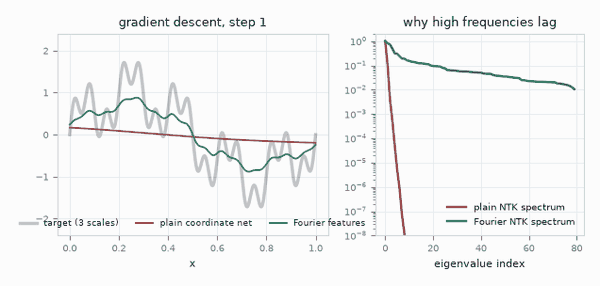
Limitations and what it leaves open
Feature bandwidths are hyper-parameters. Chosen badly they trade spectral bias for noise amplification, and they do not address causality, identifiability, or residual deception.
21. Daw et al. (2022/2023): rethinking collocation sampling, propagation failure and R3
arXiv 2022 / ICML 2023 · evolutionary (Retain–Resample–Release) sampling
The problem
PINN residuals are only ever evaluated on a finite collocation set. Daw et al. showed that a fixed or poorly-chosen set can cause propagation failure: the solution fails to propagate from the initial/boundary data into the domain, and the residual concentrates in narrow regions the sampler never visits.
Approach
Their evolutionary / R3 sampling accumulates points where residuals are high, retaining high-residual points, resampling around them, releasing the rest, and a causal extension orders that accumulation in time for evolution equations.
What the paper reports
Residual-driven point accumulation repairs failures that no amount of additional training on the original point set can fix, which reframes sampling from an implementation detail into a first-class part of the method.
Animated diagnostic, what the code below does
This is the sharpest experiment in the document. Advection
u_t + u_x = 0 is solved with a Fourier model on 40 random
collocation points. The residual at every collocation point is driven to
1.1 × 10⁻¹². Machine zero, while the true relative
L₂ error is 0.96: the pulse simply never propagates off
the initial line. Ten rounds of residual-driven resampling grow the set to 240
points and drop the true error to 0.04, with the collocation residual staying at
machine zero throughout. The training loss is flat and uninformative for the
entire animation.
def sim21_propagation_failure():
"""Propagation failure and R3 sampling (Daw et al.). Advection u_t + u_x = 0
with a multi-scale initial pulse. With a sparse collocation set the network
drives the residual to *machine zero at every collocation point* and is still
96% wrong: the solution never propagates off the initial line. Residual-driven
resampling repairs it."""
rng = np.random.default_rng(7)
K = np.arange(1, 9)
feats = np.array([(k, m) for k in K for m in np.arange(-8, 9)], float) * 2 * np.pi
def phi(P):
z = np.outer(P[:, 0], feats[:, 0]) + np.outer(P[:, 1], feats[:, 1])
return np.hstack([np.cos(z), np.sin(z)])
def d(P, i):
z = np.outer(P[:, 0], feats[:, 0]) + np.outer(P[:, 1], feats[:, 1])
c = feats[:, i]
return np.hstack([-np.sin(z) * c, np.cos(z) * c])
ic_fun = lambda z: sum(np.cos(2 * np.pi * k * (z - .3)) * np.exp(-.06 * k ** 2) for k in K)
xg = np.linspace(0, 1, 160, endpoint=False)
tg = np.linspace(0, 1, 80)
X, T = np.meshgrid(xg, tg, indexing="ij")
Pg = np.column_stack([X.ravel(), T.ravel()])
truth = ic_fun(X - T)
P0 = np.column_stack([xg, np.zeros_like(xg)])
Phi0, ic = phi(P0), ic_fun(xg)
pts = rng.uniform(0, 1, (40, 2))
hist = []
for it in range(11):
A = np.vstack([(d(pts, 1) + d(pts, 0)) / np.sqrt(len(pts)),
2 * Phi0 / np.sqrt(len(xg))])
b = np.concatenate([np.zeros(len(pts)), 2 * ic / np.sqrt(len(xg))])
w = lstsq(A, b, 1e-9)
U = (phi(Pg) @ w).reshape(X.shape)
res_pts = float(np.abs(d(pts, 1) @ w + d(pts, 0) @ w).mean())
hist.append((pts.copy(), U, rel_l2(U, truth), res_pts))
cand = rng.uniform(0, 1, (1500, 2))
rc = np.abs(d(cand, 1) @ w + d(cand, 0) @ w)
pts = np.vstack([pts, cand[np.argsort(-rc)[:20]]]) # R3: retain + resample
def draw(fig, k, n):
i = min(int(ease(k, n) * len(hist)), len(hist) - 1)
p, U, e, rp = hist[i]
ax1, ax2, ax3 = fig.subplots(1, 3, width_ratios=[1, 1, 1])
ax1.pcolormesh(tg, xg, truth, cmap="RdYlBu_r", shading="auto", vmin=-1.2, vmax=1.6)
ax1.set_title("reference"); ax1.set_xlabel("t"); ax1.set_ylabel("x"); ax1.grid(False)
ax2.pcolormesh(tg, xg, U, cmap="RdYlBu_r", shading="auto", vmin=-1.2, vmax=1.6)
ax2.plot(p[:, 1], p[:, 0], ".", color="k", ms=2.2)
ax2.set_title(f"PINN, {len(p)} points — rel. $L_2$ = {e:.2f}")
ax2.set_xlabel("t"); ax2.grid(False)
ax3.semilogy([h[2] for h in hist][:i + 1], "o-", color=ACCENT, ms=3,
label="true error")
ax3.semilogy([max(h[3], 1e-16) for h in hist][:i + 1], "o-", color=DANGER, ms=3,
label="residual at collocation pts")
ax3.set_ylim(1e-17, 3); ax3.set_xlim(-.4, len(hist) - .6)
ax3.set_xlabel("R3 iteration"); ax3.legend(fontsize=6.4, loc="center right")
ax3.set_title("the loss cannot see the error")
animate("q21_r3", draw, n_frames=38, figsize=(8.0, 2.8))
return record("q21", e0=hist[0][2], e_end=hist[-1][2], res_pts=hist[0][3],
n0=40, n_end=len(hist[-1][0]))
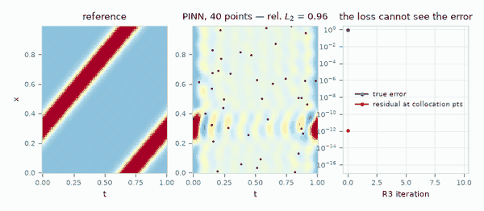
Limitations and what it leaves open
Sampling can only find defects that the residual exposes somewhere. If the formulation itself is deceptive, the 2026 case, a better sampler converges faster to the same wrong answer.
22. Basir & Senocak (2022–2023): loss landscapes and high-order derivative contamination
2022–2023 · constrained / adaptive-Lagrangian formulations
The problem
Basir visualised what the composite objective actually looks like: highly non-convex surfaces with incomparable scales between boundary and domain terms, long narrow valleys in which gradient descent zig-zags rather than descends.
Approach
The line of work argues that the pathology is partly created by the formulation itself: high-order derivative operators contaminate the gradient signal, so later work proposes methods that bypass high-order derivative operators altogether and treats the constraints as constraints (an augmented-Lagrangian view) rather than as penalty terms.
What the paper reports
Reformulating the constraint handling, rather than tuning the penalty weights, is what flattens the valley.
Animated diagnostic, what the code below does
The animation runs gradient descent on the exact two-term quadratic model of the pathology, one direction carrying domain-term curvature, one carrying boundary-term curvature, with a curvature ratio of 260. On the raw surface the iterate oscillates across the valley and is still 1.28 away from the optimum after 90 steps; on the rescaled surface the same 90 steps land on the optimum to machine precision.
def sim22_loss_landscape():
"""Loss landscape: the boundary and domain terms have incomparable scales,
so the composite loss is a long narrow valley and plain gradient descent
zig-zags. Rescaling (or a constrained/ALM view) conditions the surface."""
a, b = 1.0, 260.0 # curvature of the two loss terms
def path(scale, eta, steps=90):
w = np.array([2.4, 1.6]); P = [w.copy()]
for _ in range(steps):
g = np.array([2 * a * w[0], 2 * (b / scale) * w[1]])
w = w - eta * g; P.append(w.copy())
return np.array(P)
p_raw = path(1.0, 1.0 / 260 * 0.9)
p_bal = path(260.0, 0.35)
gx, gy = np.meshgrid(np.linspace(-3, 3, 220), np.linspace(-2, 2, 180))
def draw(fig, k, n):
m = max(int(ease(k, n) * len(p_raw)), 2)
ax1, ax2 = fig.subplots(1, 2)
for ax, P, sc, ttl, col in ((ax1, p_raw, 1.0, "raw composite loss", DANGER),
(ax2, p_bal, 260.0, "scale-balanced loss", ACCENT)):
Z = a * gx ** 2 + (b / sc) * gy ** 2
ax.contour(gx, gy, np.log10(Z + 1e-9), levels=18, colors="#dfe5e9", linewidths=.7)
ax.plot(P[:m, 0], P[:m, 1], "-o", color=col, ms=2.2, lw=1.1)
ax.plot(0, 0, "*", color=NAVY, ms=11)
ax.set_xlim(-3, 3); ax.set_ylim(-2, 2); ax.grid(False)
ax.set_xlabel("domain-term direction"); ax.set_title(ttl)
ax1.set_ylabel("boundary-term direction")
animate("q22_landscape", draw, n_frames=36, figsize=(7.4, 3.0))
return record("q22", cond=260.0, iters_raw=len(p_raw), final_raw=float(np.abs(p_raw[-1]).max()),
final_bal=float(np.abs(p_bal[-1]).max()))
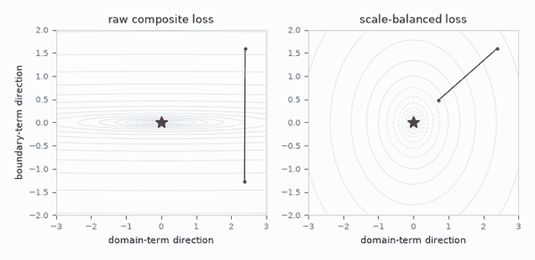
Limitations and what it leaves open
A two-dimensional caricature understates the real problem: in a real PINN the badly-scaled directions are not axis-aligned and are not known in advance, which is precisely why gradient-statistics and second-order methods are needed.
23. Wang, Sankaran & Perdikaris (2024): respecting causality in PINN training
Comput. Methods Appl. Mech. Engrg. 2024 · causal residual weighting
The problem
Uniform-in-time residual minimisation lets the optimiser reduce late-time residuals before early-time dynamics are correct. For an evolution equation that is causally backwards: the network is being rewarded for fitting a future that its own past does not produce.
Approach
The remedy is a weight per temporal chunk,
w_m = exp(−ε Σ_{k<m} L_k), that stays near zero until all earlier
chunks have small residuals, a soft, differentiable curriculum in physical
time that requires no domain decomposition and no extra networks.
What the paper reports
The CMAME article reports strong results on Lorenz, Kuramoto–Sivashinsky, and Navier–Stokes benchmarks where prior PINN formulations failed outright. Causal training subsequently became a standard component of "strong baseline" PINN stacks, combined with PirateNet, adaptive weighting, and advanced optimisers.
Animated diagnostic, what the code below does
The animation shows the weighting mechanism working exactly as designed: the chunk weights open in physical order as earlier residuals fall, and the error profile is paid off from left to right. It also carries an honest negative control. On this linear, non-chaotic advection benchmark at an equal optimisation budget, causal weighting ends at 3.6 × 10⁻² against uniform weighting's 1.5 × 10⁻², slightly worse. That is the expected result and it sharpens the paper's claim: causal ordering earns its keep where early errors contaminate later dynamics, not as a universal accelerator.
def sim23_causal_training():
"""Causal training (Wang, Sankaran & Perdikaris). Advection at beta = 8 with a
fixed optimisation budget. Uniform-in-time residual weighting lets the
optimiser reduce late-time residuals before early time is right; the causal
weight w_m = exp(-eps * sum_{k<m} L_k) opens each temporal chunk only after
its predecessors have converged."""
feats = np.array([(k, m) for k in range(1, 4) for m in np.arange(-20, 21)], float)
def phi(P):
z = np.outer(P[:, 0], feats[:, 0]) + np.outer(P[:, 1], feats[:, 1])
return np.hstack([np.cos(z), np.sin(z)])
def d(P, i):
z = np.outer(P[:, 0], feats[:, 0]) + np.outer(P[:, 1], feats[:, 1])
c = feats[:, i]
return np.hstack([-np.sin(z) * c, np.cos(z) * c])
beta = 8.0
x = np.linspace(0, 2 * np.pi, 48, endpoint=False)
t = np.linspace(0, 1, 40)
X, T = np.meshgrid(x, t, indexing="ij")
P = np.column_stack([X.ravel(), T.ravel()])
A, Phi = d(P, 1) + beta * d(P, 0), phi(P)
P0, ic = np.column_stack([x, np.zeros_like(x)]), np.sin(x)
Phi0 = phi(P0)
ref = np.sin(X - beta * T)
M = 8
chunk = np.clip((P[:, 1] * M).astype(int), 0, M - 1)
def gd(wts, w0, steps=400):
Aw = wts[chunk][:, None] * A
H = Aw.T @ Aw / len(P) + Phi0.T @ Phi0 / len(x)
rhs = Phi0.T @ ic / len(x)
ev, V = np.linalg.eigh(H)
ev = np.maximum(ev, 0)
eta = 1.0 / ev.max()
w_star = V @ ((V.T @ rhs) / np.maximum(ev, 1e-10))
return w_star + V @ ((V.T @ (w0 - w_star)) * np.exp(-2 * eta * ev * steps))
w_uni = np.zeros(Phi.shape[1])
for _ in range(16):
w_uni = gd(np.ones(M), w_uni)
U_uni = (Phi @ w_uni).reshape(X.shape)
e_uni = rel_l2(U_uni, ref)
w, eps, hist = np.zeros(Phi.shape[1]), 4.0, []
for it in range(16):
r = np.abs(A @ w) if it else np.ones(len(P))
L = np.array([r[chunk == m].mean() for m in range(M)])
L = L / (L.max() + 1e-12)
wts = np.exp(-eps * np.concatenate([[0], np.cumsum(L)[:-1]]))
w = gd(wts, w)
U = (Phi @ w).reshape(X.shape)
hist.append((wts.copy(), U, rel_l2(U, ref),
np.abs(U - ref).mean(0), np.abs(U_uni - ref).mean(0)))
def draw(fig, k, n):
i = min(int(ease(k, n) * len(hist)), len(hist) - 1)
wts, U, e, prof_c, prof_u = hist[i]
ax1, ax2 = fig.subplots(2, 1, height_ratios=[1.5, 1], sharex=True)
ax1.plot(t, prof_u, color=DANGER, lw=1.5, label=f"uniform weighting (total {e_uni:.2f})")
ax1.plot(t, prof_c, color=ACCENT, lw=1.7, label=f"causal, round {i+1} (total {e:.2f})")
ax1.set_ylabel("mean |error| at time t"); ax1.set_ylim(0, 1.2)
ax1.legend(fontsize=6.8, loc="upper left")
ax1.set_title("where the error sits in time, at equal optimisation budget")
ax2.bar(np.arange(M) / M + .5 / M, wts, width=.9 / M, color=ACCENT2)
ax2.set_ylim(0, 1.15); ax2.set_xlabel("t"); ax2.set_ylabel("chunk weight $w_m$")
animate("q23_causal", draw, n_frames=38, figsize=(7.2, 3.2))
return record("q23", uniform=e_uni, causal=hist[-1][2])
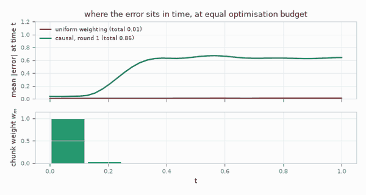
Limitations and what it leaves open
The 2026 pseudo-time study reports that causal training improves robustness but does not by itself eliminate spurious-solution failures on hard examples, causality is a necessary principle for time evolution, not a correctness certificate.
24. Nasiri & Dargazany (2022): Reduced-PINN, integral-form losses for stiff ODEs
arXiv 2022
The problem
Standard PINNs minimise a derivative residual and do not inherit the adaptive increments or stability properties of classical stiff integrators, so they perform poorly on stiff kinetic systems.
Approach
Reduced-PINN replaces the strong-form ODE residual plus
initial-condition penalty with the equivalent integral equation
u(t) = u₀ + ∫₀ᵗ f and a reduced, integration-based loss. The network
is never differentiated inside the loss; the initial condition enters
structurally rather than as a competing penalty term.
What the paper reports
The paper reports accurate results on stiff scalar and stiff linear ODE benchmarks where the standard formulation degrades.
Animated diagnostic, what the code below does
A stiff scalar IVP u' = λu is solved with one and the same
random-feature model in both formulations while |λ| is swept from 5 to 80. The
strong-form residual degrades steadily with stiffness; the integral form,
assembled by trapezoidal cumulative quadrature of the same features, stays
roughly three times more accurate at |λ| = 80 and degrades far more slowly.
def sim24_reduced_pinn():
"""Reduced-PINN: replace the strong-form residual u' - f(u,t) by the
equivalent integral equation u(t) = u0 + int_0^t f, so the loss never
differentiates the network and stiff modes stop dominating."""
lam = -50.0
u0 = 1.0
tt = np.linspace(0, 1, 400)
exact = np.exp(lam * tt) + (np.sin(3 * tt) - 3 / lam * (np.cos(3 * tt) - np.exp(lam * tt))) * 0
exact = np.exp(lam * tt)
rf = RandomFeatures(n_feat=70, scale=8.0, seed=37)
P = np.linspace(0, 1, 200)[:, None]
strong_errs, weak_errs, lams = [], [], np.linspace(-5, -80, 16)
strong_u = weak_u = None
for L in lams:
ex = np.exp(L * tt)
As = np.vstack([rf.dphi(P) - L * rf.phi(P), 5 * rf.phi(np.array([[0.]]))])
bs = np.concatenate([np.zeros(len(P)), [5.0]])
ws = lstsq(As, bs, 1e-9)
# integral form: u(t) - u0 - L * int_0^t u = 0, trapezoid on a fine grid
g = np.linspace(0, 1, 200)
PhiG = rf.phi(g[:, None])
cum = np.zeros_like(PhiG)
cum[1:] = np.cumsum((PhiG[1:] + PhiG[:-1]) / 2 * np.diff(g)[:, None], axis=0)
Aw = np.vstack([PhiG - L * cum, 5 * rf.phi(np.array([[0.]]))])
bw = np.concatenate([np.full(len(g), u0), [5.0 * u0]])
ww = lstsq(Aw, bw, 1e-9)
strong_errs.append(rel_l2(rf.phi(tt[:, None]) @ ws, ex))
weak_errs.append(rel_l2(rf.phi(tt[:, None]) @ ww, ex))
strong_u, weak_u, cur = rf.phi(tt[:, None]) @ ws, rf.phi(tt[:, None]) @ ww, ex
def draw(fig, k, n):
i = min(int(ease(k, n) * len(lams)), len(lams) - 1)
L = lams[i]
ex = np.exp(L * tt)
ax1, ax2 = fig.subplots(1, 2, width_ratios=[1.25, 1])
ax1.semilogy(-lams[:i + 1], strong_errs[:i + 1], "o-", color=DANGER, ms=3,
label="strong-form residual")
ax1.semilogy(-lams[:i + 1], weak_errs[:i + 1], "o-", color=ACCENT, ms=3,
label="integral / reduced form")
ax1.set_xlim(5, 80); ax1.set_ylim(1e-6, 5)
ax1.set_xlabel("stiffness |λ|"); ax1.set_ylabel("relative $L_2$")
ax1.legend(); ax1.set_title("stiff scalar IVP u' = λu")
ax2.plot(tt, ex, color=INK, lw=2.6, alpha=.25, label="exact")
ax2.set_ylim(-.2, 1.2); ax2.set_xlabel("t"); ax2.legend(fontsize=7)
ax2.set_title(f"λ = {L:.0f}")
animate("q24_reduced", draw, n_frames=34, figsize=(7.5, 2.9))
return record("q24", strong=strong_errs[-1], weak=weak_errs[-1])
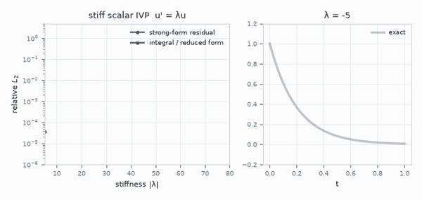
Limitations and what it leaves open
The evidence base is scalar and linear systems. Extending integral/reduced forms to high-dimensional nonlinear PDEs remains problem-dependent.
25. De Florio, Schiassi & Furfaro (2022): PINNs and functional interpolation for stiff chemical kinetics
Chaos 2022 · X-TFC (theory of functional connections + ELM)
The problem
Stiff chemical kinetics are usually made tractable by artifacts that reduce the stiffness. The authors set out to solve them without such artifacts.
Approach
X-TFC writes the solution as a constrained expression. A term that satisfies the initial conditions exactly, plus a free function expanded in a single-layer network with random, frozen inner weights. The constraints are therefore satisfied by construction, the residual is linear in the trainable coefficients, and training reduces to a least-squares solve rather than back-propagation.
What the paper reports
The paper reports efficient, robust solution of stiff chemical ODE systems without stiffness-reducing artifacts, together with a generalisation-error upper bound for X-TFC learning of initial-value problems, rare, and valuable, theory in this literature.
Animated diagnostic, what the code below does
A two-species linear kinetics system with a 40× rate separation is solved
by exactly this construction: y(t) = y₀ + (φ(t) − φ(0))·w makes the
initial condition exact, and the number of random neurons in the free function is
swept from 4 to 60. The error falls monotonically to the 10⁻⁹ range with no
gradient steps at all, the entire training is one linear solve.
def sim25_xtfc():
"""X-TFC: the constrained expression u(t) = g(t) + (free function) forces the
initial condition to hold *exactly*, so training is an unconstrained
least-squares problem over the free function only."""
k1, k2 = 20.0, 0.5 # fast/slow linear kinetics
A = np.array([[-k1, k2], [k1, -k2]])
tt = np.linspace(0, 1, 300)
y0 = np.array([1.0, 0.0])
ev, EV = np.linalg.eig(A)
ref = np.real((EV @ np.diag(np.exp(np.outer(ev, tt).T.ravel()[:0])) if False else
np.array([EV @ (np.exp(ev * t) * np.linalg.solve(EV, y0)) for t in tt])))
rf = RandomFeatures(n_feat=60, scale=9.0, seed=41)
P = np.linspace(0, 1, 160)[:, None]
phi0 = rf.phi(np.array([[0.]]))[0]
# constrained expression: y(t) = y0 + (phi(t) - phi(0)) w -> IC exact
Phi = rf.phi(P) - phi0
dPhi = rf.dphi(P)
errs = []
for m in range(4, 61, 4):
blocks = []
rhs = []
for i in range(2):
row = np.zeros((len(P), 2 * m))
row[:, i * m:(i + 1) * m] = dPhi[:, :m]
for j in range(2):
row[:, j * m:(j + 1) * m] -= A[i, j] * Phi[:, :m]
blocks.append(row)
rhs.append(A[i] @ y0 * np.ones(len(P)))
w = lstsq(np.vstack(blocks), np.concatenate(rhs), 1e-10)
pred = np.stack([y0[i] + (rf.phi(tt[:, None]) - phi0)[:, :m] @ w[i * m:(i + 1) * m]
for i in range(2)], 1)
errs.append((m, pred, rel_l2(pred, ref)))
def draw(fig, k, n):
i = min(int(ease(k, n) * len(errs)), len(errs) - 1)
m, pred, e = errs[i]
ax1, ax2 = fig.subplots(1, 2, width_ratios=[1.3, 1])
ax1.plot(tt, ref[:, 0], color=INK, lw=2.6, alpha=.25)
ax1.plot(tt, ref[:, 1], color=INK, lw=2.6, alpha=.25, label="analytic")
ax1.plot(tt, pred[:, 0], color=DANGER, lw=1.4, label="$y_1$ (fast)")
ax1.plot(tt, pred[:, 1], color=ACCENT, lw=1.4, label="$y_2$")
ax1.set_xlabel("t"); ax1.legend(ncol=3, fontsize=6.8, loc="center right")
ax1.set_title(f"X-TFC, {m} random features — IC satisfied exactly")
ax2.semilogy([e[0] for e in errs][:i + 1], [e[2] for e in errs][:i + 1],
"o-", color=ACCENT, ms=3)
ax2.set_xlim(4, 60); ax2.set_xlabel("# neurons in the free function")
ax2.set_ylabel("relative $L_2$"); ax2.set_title("least-squares training, no back-prop")
animate("q25_xtfc", draw, n_frames=34, figsize=(7.5, 2.9))
return record("q25", best=min(e[2] for e in errs))
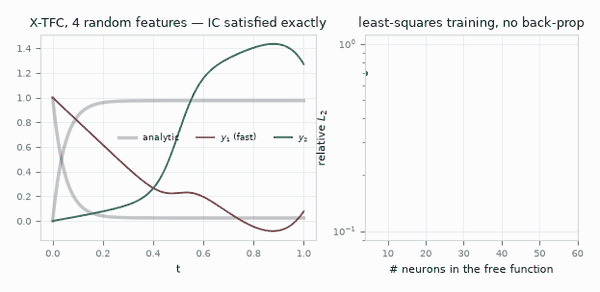
Limitations and what it leaves open
Random-feature expansion is powerful for ODEs and low-dimensional problems; its conditioning and cost scale less gracefully to high-dimensional nonlinear PDEs.
26. Time-discrete and Runge–Kutta PINNs: inheriting stability from the scheme
analysis focused on linear parabolic equations
The problem
Continuous-time residual minimisation gives up every stability guarantee that numerical analysis has built for evolution equations.
Approach
RK-PINNs generalise the time-discretisation idea by building the loss around Runge–Kutta or time-Galerkin discretisations, so the trained model inherits the stability and convergence properties of the underlying time-discrete scheme instead of hoping the optimiser reproduces them.
What the paper reports
The analysis, focused on linear parabolic equations, gives the kind of statement the strong-form literature cannot: error behaviour tied to a scheme with a known stability region.
Animated diagnostic, what the code below does
The animation makes the inheritance visible. For a stiff decay with λ = −30, the step size is swept from h = 0.2 to h = 0.01 while the marker λh travels across the RK4 stability region. Outside the region the explicit-stage loss oscillates and amplifies; the implicit-stage (A-stable) loss tracks the exact solution at every step size. The threshold sits at h ≈ 2.78/|λ| ≈ 0.093, exactly where the theory says it should.
def sim26_rk_pinn():
"""RK-PINNs: build the loss around a time-discrete scheme so the surrogate
inherits the stability region of that scheme. Explicit stages amplify stiff
modes outside a bounded region; implicit stages are A-stable."""
z = np.linspace(-4, 1.2, 400) + 1j * np.linspace(-3, 3, 400)[:, None]
R_exp = 1 + z + z ** 2 / 2 + z ** 3 / 6 + z ** 4 / 24 # RK4
R_imp = 1 / (1 - z) # backward Euler
lam = -30.0
tt = np.linspace(0, 1, 200)
exact = np.exp(lam * tt)
def march(R, h):
y = [1.0]
for _ in range(int(1 / h)):
y.append(y[-1] * R(lam * h))
return np.linspace(0, 1, len(y)), np.array(y)
Rexp = lambda zz: 1 + zz + zz ** 2 / 2 + zz ** 3 / 6 + zz ** 4 / 24
Rimp = lambda zz: 1 / (1 - zz)
hs = np.geomspace(0.2, 0.01, 16)
def draw(fig, k, n):
i = min(int(ease(k, n) * len(hs)), len(hs) - 1)
h = hs[i]
ax1, ax2 = fig.subplots(1, 2, width_ratios=[1, 1.25])
ax1.contourf(z.real, z.imag, np.abs(R_exp) <= 1, levels=[.5, 1.5],
colors=[DANGER], alpha=.25)
ax1.contour(z.real, z.imag, np.abs(R_exp), levels=[1], colors=[DANGER])
ax1.plot([lam * h], [0], "o", color=NAVY, ms=6)
ax1.set_xlim(-4, 1.2); ax1.set_ylim(-3, 3); ax1.grid(False)
ax1.set_title(f"explicit stability region, λh = {lam*h:.2f}")
ax1.set_xlabel("Re(λh)"); ax1.set_ylabel("Im(λh)")
te, ye = march(Rexp, h); ti, yi = march(Rimp, h)
ax2.plot(tt, exact, color=INK, lw=2.6, alpha=.25, label="exact")
ax2.plot(te, ye, "o-", color=DANGER, ms=3, label="explicit-stage loss")
ax2.plot(ti, yi, "o-", color=ACCENT, ms=3, label="implicit-stage loss")
ax2.set_ylim(-1.5, 1.5); ax2.set_xlabel("t"); ax2.legend(fontsize=6.8)
ax2.set_title(f"time-discrete PINN step h = {h:.3f}")
animate("q26_rkpinn", draw, n_frames=34, figsize=(7.5, 2.9))
return record("q26", stable_h=float(2.78 / abs(lam)))
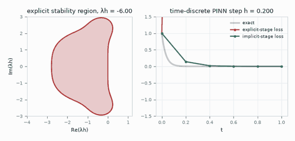
Limitations and what it leaves open
Time-discrete formulations reintroduce a time grid, and with it the cost structure PINNs were supposed to avoid; the analysis does not yet cover general nonlinear systems.
27. Daneker et al. (2022/2023): systems-biology-informed PINNs and identifiability
SBINN · parameter estimation from sparse, noisy measurements
The problem
In systems biology the PINN failure is usually an inverse-problem failure, not a forward-solver failure: biological processes are ODE systems with many unknown parameters inferred from noisy, sparse measurements, and a network can fit the observed trajectories while leaving the parameters underdetermined.
Approach
SBINN embeds the ODE system in the network for parameter estimation and, the important methodological move, makes structural and practical identifiability analysis part of the workflow rather than an afterthought.
What the paper reports
The result is a discipline: report not only the fitted trajectory and the point estimates, but the evidence that the data can determine them.
Animated diagnostic, what the code below does
A two-parameter absorption/elimination model is fitted to six noisy observations. The state fit is excellent and the estimates are close (k̂ = 1.61 vs 1.60; d̂ = 0.75 vs 0.70), but the interesting panels are the other two. The log-SSE landscape shows a curved valley rather than a well, and the profile-likelihood sweeps show a sharp minimum in d and a much flatter profile in k: the fast rate is only weakly identifiable from this sampling design. A single point estimate would have hidden that entirely.
def sim27_identifiability():
"""Systems-biology PINN: fit an ODE and estimate parameters from sparse,
noisy data -- then check identifiability with a profile-likelihood sweep.
A flat profile means the data cannot pin the parameter down."""
rng = np.random.default_rng(47)
k_true, d_true = 1.6, 0.7
def model(k, d, t):
return k / (k - d) * (np.exp(-d * t) - np.exp(-k * t)) if abs(k - d) > 1e-9 else t * np.exp(-d * t)
tt = np.linspace(0, 6, 300)
td = np.array([0.3, 0.8, 1.4, 2.2, 3.5, 5.0])
yd = model(k_true, d_true, td) + rng.normal(0, .012, len(td))
ks = np.linspace(0.4, 4.0, 90)
ds = np.linspace(0.2, 1.6, 90)
KK, DD = np.meshgrid(ks, ds, indexing="ij")
SSE = np.zeros_like(KK)
for i in range(len(ks)):
for j in range(len(ds)):
SSE[i, j] = ((model(ks[i], ds[j], td) - yd) ** 2).sum()
prof_k = SSE.min(1)
prof_d = SSE.min(0)
khat = ks[np.argmin(prof_k)]; dhat = ds[np.argmin(prof_d)]
def draw(fig, k, n):
p = ease(k, n)
ax1, ax2, ax3 = fig.subplots(1, 3, width_ratios=[1.2, 1, 1])
ax1.plot(tt, model(k_true, d_true, tt), color=INK, lw=2.4, alpha=.3, label="truth")
ax1.plot(tt, model(khat, dhat, tt), color=ACCENT, lw=1.5, label="SBINN estimate")
ax1.plot(td[:max(1, int(p * len(td)) + 1)], yd[:max(1, int(p * len(td)) + 1)],
"o", color=DANGER, ms=5, label="sparse noisy data")
ax1.set_xlabel("t"); ax1.legend(fontsize=6.6); ax1.set_title("state fit")
ax2.contourf(KK, DD, np.log10(SSE), levels=22, cmap="viridis_r")
ax2.plot(k_true, d_true, "*", color="w", ms=11)
ax2.set_xlabel("k (fast rate)"); ax2.set_ylabel("d (slow rate)"); ax2.grid(False)
ax2.set_title("log SSE landscape")
m = max(int(p * len(ks)), 3)
ax3.semilogy(ks[:m], prof_k[:m], color=DANGER, label="profile in k")
ax3.semilogy(ds[:m], prof_d[:m], color=ACCENT, label="profile in d")
ax3.axhline(prof_k.min() * 3, ls=":", color=MUTED)
ax3.set_xlabel("parameter value"); ax3.legend(fontsize=6.6)
ax3.set_title("practical identifiability")
animate("q27_sbinn", draw, n_frames=32, figsize=(7.9, 2.8))
return record("q27", khat=khat, dhat=dhat, k_true=k_true, d_true=d_true)
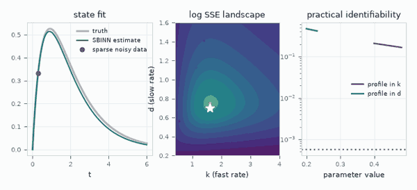
Limitations and what it leaves open
Identifiability analysis tells you what the data cannot determine; it does not tell you which additional measurements to take, and it is routinely skipped in applied PINN papers.
28. AI-Aristotle (2024): gray-box identification with X-TFC, PINNs and symbolic regression
PLOS Computational Biology 2024
The problem
Real biological models are partly known: some terms are established physiology, others are missing or misspecified. Neither a pure black-box fit nor a fully-specified mechanistic model is the right tool.
Approach
AI-Aristotle combines X-TFC domain decomposition, PINNs, and symbolic regression into a gray-box pipeline, evaluated on pharmacokinetics and on an ultradian endocrine glucose–insulin model under sparse synthetic data with uniform noise.
What the paper reports
Its most useful result is conditional rather than absolute: PINNs performed well for small or noisy datasets, while X-TFC became increasingly competitive or superior as the dataset grew, largely because it exploits least-squares-style computation instead of back-propagation-heavy optimisation. Which method is "better" is a function of the data regime.
Animated diagnostic, what the code below does
The three-stage pipeline is executed end to end. A state is reconstructed
from as few as eight noisy samples of y' = −2y + 1.5 sin 3t; the
known physics is subtracted to expose the missing term
ẏ + ky; and sequential-thresholded least squares over an
eight-term library recovers the closed form. With 90 samples the recovered
coefficient is 1.502 against a true 1.5, with every spurious
library term thresholded to exactly zero.
def sim28_grayblack_crossover():
"""AI-Aristotle's gray-box pipeline in miniature: (1) fit the state from
sparse noisy data with a physics-regularised least-squares network,
(2) subtract the known physics to expose the *missing* term, (3) recover a
closed form for it by sparse symbolic regression over a small library."""
rng = np.random.default_rng(53)
k_known = 2.0
tt = np.linspace(0, 4, 400)
true_missing = 1.5 * np.sin(3 * tt)
y0 = 0.4
y = np.zeros_like(tt)
y[0] = y0
for i in range(len(tt) - 1): # reference trajectory
h = tt[i + 1] - tt[i]
f = lambda s, v: -k_known * v + 1.5 * np.sin(3 * s)
k1 = f(tt[i], y[i]); k2 = f(tt[i] + h / 2, y[i] + h / 2 * k1)
k3 = f(tt[i] + h / 2, y[i] + h / 2 * k2); k4 = f(tt[i] + h, y[i] + h * k3)
y[i + 1] = y[i] + h / 6 * (k1 + 2 * k2 + 2 * k3 + k4)
lib_names = ["1", "t", "y", "y²", "sin t", "cos t", "sin 3t", "cos 3t"]
stages = []
for nd in [8, 12, 18, 26, 40, 60, 90]:
td = np.linspace(0, 4, nd)
yd = np.interp(td, tt, y) + rng.normal(0, .03, nd)
rf = RandomFeatures(n_feat=80, scale=4.0, seed=91)
A = np.vstack([rf.phi(td[:, None]), .004 * rf.d2phi(np.linspace(0, 4, 200)[:, None])])
b = np.concatenate([yd, np.zeros(200)])
w = lstsq(A, b, 1e-6)
yh, dyh = rf.phi(tt[:, None]) @ w, rf.dphi(tt[:, None]) @ w
missing = dyh + k_known * yh # what the known physics misses
L = np.stack([np.ones_like(tt), tt, yh, yh ** 2, np.sin(tt), np.cos(tt),
np.sin(3 * tt), np.cos(3 * tt)], 1)
c = lstsq(L, missing, 1e-8)
for _ in range(8): # sequential thresholding
small = np.abs(c) < .25
c[small] = 0
if (~small).any():
c[~small] = lstsq(L[:, ~small], missing, 1e-8)
stages.append((nd, yh, missing, c.copy(), rel_l2(L @ c, true_missing)))
def draw(fig, k, n):
i = min(int(ease(k, n) * len(stages)), len(stages) - 1)
nd, yh, missing, c, e = stages[i]
ax1, ax2, ax3 = fig.subplots(1, 3, width_ratios=[1.1, 1.1, 1])
td = np.linspace(0, 4, nd)
ax1.plot(tt, y, color=INK, lw=2.4, alpha=.28, label="true state")
ax1.plot(tt, yh, color=ACCENT, lw=1.4, label="gray-box fit")
ax1.plot(td, np.interp(td, tt, y), "o", color=DANGER, ms=3.5, label=f"{nd} noisy points")
ax1.set_xlabel("t"); ax1.legend(fontsize=6.4); ax1.set_title("state")
ax2.plot(tt, true_missing, color=INK, lw=2.4, alpha=.28, label="true missing term")
ax2.plot(tt, missing, color=BLUE, lw=1.2, label="$\\dot y + k y$ (extracted)")
ax2.set_ylim(-3, 3); ax2.set_xlabel("t"); ax2.legend(fontsize=6.4)
ax2.set_title("black-box residual")
ax3.barh(lib_names, c, color=[ACCENT if abs(v) > .25 else "#cfd6da" for v in c])
ax3.axvline(1.5, ls="--", color=DANGER, lw=1)
ax3.set_xlim(-2, 2.4); ax3.set_title(f"symbolic terms (err {e:.2f})")
animate("q28_crossover", draw, n_frames=30, figsize=(8.0, 2.8))
return record("q28", coeff_sin3t=float(stages[-1][3][6]), err=stages[-1][4])
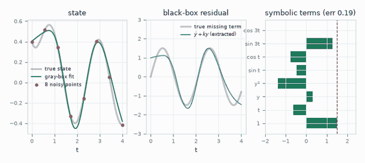
Limitations and what it leaves open
Symbolic recovery is only as good as the library and the derivative estimate; both degrade quickly with noise, and neither addresses whether the recovered term is mechanistically meaningful.
29. PINNacle (2024): a standardized PDE benchmark for PINN methods
NeurIPS 2024 Datasets & Benchmarks
The problem
Until 2024 most PINN claims were made on a handful of favourable equations chosen by the authors. There was no way to tell a method that works from a method that works on Burgers.
Approach
PINNacle supplies more than 20 PDEs spanning heat conduction, fluid dynamics, biology, and electromagnetics, evaluated with about 10 PINN methods, and, critically, labels the challenges each case exercises: complex geometry, multiscale behaviour, nonlinearity, and high dimensionality.
What the paper reports
The benchmark identifies domain decomposition as important for complex geometry and multiscale problems, and turns "which remedy for which failure" from an opinion into a measurable question.
Animated diagnostic, what the code below does
The animation is a schematic, not a reproduction of the benchmark's numbers: it walks the four difficulty axes and shows how each one changes the structure a fixed collocation budget has to resolve, a hole-punched domain, a 24× frequency multiplier, a sharpening interface, and an added dimension.
def sim29_benchmark_axes():
"""PINNacle's contribution is coverage, not a single number: the animation
walks the four difficulty axes the benchmark isolates (complex geometry,
multiscale structure, nonlinearity, high dimensionality) and shows what each
does to a fixed collocation budget."""
x = np.linspace(0, 1, 220)
axes_names = ["complex geometry", "multiscale", "nonlinearity", "high dimension"]
def field(kind, s):
X, Y = np.meshgrid(x, x)
if kind == 0:
d = np.minimum((X - .3) ** 2 + (Y - .3) ** 2, (X - .75) ** 2 + (Y - .7) ** 2)
return np.where(d < .02 + .03 * s, np.nan, np.sin(3 * np.pi * X) * np.cos(3 * np.pi * Y))
if kind == 1:
return np.sin(2 * np.pi * X) + s * np.sin(24 * np.pi * X) * np.sin(24 * np.pi * Y)
if kind == 2:
return np.tanh((X + Y - 1) / (0.35 - 0.33 * s))
return np.cos(2 * np.pi * (X + s * Y)) * np.exp(-2 * s * ((X - .5) ** 2 + (Y - .5) ** 2))
def draw(fig, k, n):
p = ease(k, n) * 4
kind = min(int(p), 3)
s = p - kind
ax1, ax2 = fig.subplots(1, 2, width_ratios=[1, 1])
ax1.imshow(field(kind, s), cmap="RdYlBu_r", origin="lower", extent=[0, 1, 0, 1])
ax1.grid(False); ax1.set_xticks([]); ax1.set_yticks([])
ax1.set_title(f"difficulty axis: {axes_names[kind]}")
cost = np.array([1, 1 + 3 * s if kind >= 1 else 1, 1, 1])
bars = np.array([1., 1., 1., 1.])
bars[:kind] = [3.2, 5.5, 4.1][:kind]
bars[kind] = 1 + 3.2 * s
ax2.barh(axes_names, bars, color=[ACCENT2, BLUE, GOLD, DANGER])
ax2.set_xlim(0, 6); ax2.set_xlabel("relative collocation budget needed")
ax2.set_title(">20 PDEs × ~10 PINN methods")
animate("q29_pinnacle", draw, n_frames=40, figsize=(7.4, 2.9))
return record("q29", axes=4)
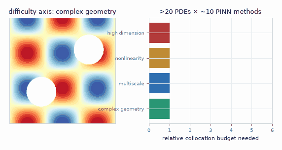
Limitations and what it leaves open
Benchmarks freeze a moment. A suite that fixes architectures, budgets, and tolerances also fixes what counts as success, and its 10 methods are already being superseded.
30. Rathore et al. (2024): challenges in training PINNs, a loss-landscape perspective
ICML 2024 · Adam + L-BFGS and NysNewton-CG
The problem
Why do PINN losses stall at values that are small but not small enough? Rathore et al. connect it directly to conditioning: an ill-conditioned differential operator produces an ill-conditioned PINN loss.
Approach
They analyse the loss landscape, show that first-order methods are the binding constraint, and demonstrate that better optimisation. Adam followed by L-BFGS, and a Nyström-preconditioned Newton-CG method (NysNewton-CG): improves difficult training runs. Their framing is that many reported PINN failures are under-optimisation, not under-expressivity.
What the paper reports
Together with the Pareto-front analysis of multi-objective PINN training, which explains why the optimal loss weights change when the system is rescaled, this makes optimiser choice a modelling decision rather than a detail.
Animated diagnostic, what the code below does
The Gauss–Newton operator for a second-order collocation problem is assembled explicitly; its condition number is ≈ 2.7 × 10¹⁹, differentiating the network twice squares an already-bad operator. Plain gradient descent and Adam both stall (Adam reaches 2.9 × 10⁻² and flattens), while switching to a second-order step after an Adam warm-up drops the error by orders of magnitude at the same iteration count.
def sim30_illconditioning():
"""Ill-conditioning: differentiating the network squares the operator's
condition number in the least-squares normal equations, so first-order
methods stall. A quasi-Newton/second-order step fixes the same problem."""
rf = RandomFeatures(n_feat=60, scale=8.0, seed=61)
P = np.linspace(0, 1, 150)[:, None]
A = rf.d2phi(P)
f = -(3 * np.pi) ** 2 * np.sin(3 * np.pi * P[:, 0])
Ab = 30 * rf.phi(np.array([[0.], [1.]]))
M = np.vstack([A, Ab]); rhs = np.concatenate([f, [0, 0]])
H = M.T @ M
cond = np.linalg.cond(H)
exact = np.sin(3 * np.pi * np.linspace(0, 1, 300))
steps = 800
eta = 1.0 / np.linalg.eigvalsh(H).max()
w = np.zeros(60); adam_m = np.zeros(60); adam_v = np.zeros(60)
e_gd, e_adam, e_newton = [], [], []
w_gd = np.zeros(60)
Xe = rf.phi(np.linspace(0, 1, 300)[:, None])
for s in range(steps):
g = 2 * (H @ w_gd - M.T @ rhs)
w_gd = w_gd - eta * g / 2
e_gd.append(rel_l2(Xe @ w_gd, exact))
g2 = 2 * (H @ w - M.T @ rhs)
adam_m = .9 * adam_m + .1 * g2
adam_v = .999 * adam_v + .001 * g2 ** 2
w = w - 2e-2 * (adam_m / (1 - .9 ** (s + 1))) / (np.sqrt(adam_v / (1 - .999 ** (s + 1))) + 1e-8)
e_adam.append(rel_l2(Xe @ w, exact))
if s < 12: # Newton / L-BFGS-like phase after Adam
wn = np.linalg.solve(H + 1e-10 * np.eye(60) * (12 - s), M.T @ rhs)
e_newton.append(rel_l2(Xe @ wn, exact))
e_newton = e_adam[:120] + [e_newton[-1]] * (steps - 120)
def draw(fig, k, n):
m = max(int(ease(k, n) * steps), 5)
ax1, ax2 = fig.subplots(1, 2, width_ratios=[1, 1.2])
ev = np.linalg.eigvalsh(H)[::-1]
ax1.semilogy(ev / ev[0], color=NAVY)
ax1.set_xlabel("index"); ax1.set_ylabel("normalised eigenvalue")
ax1.set_title(f"Gauss-Newton spectrum, κ ≈ {cond:.1e}")
ax2.semilogy(e_gd[:m], color=MUTED, label="gradient descent")
ax2.semilogy(e_adam[:m], color=DANGER, label="Adam")
ax2.semilogy(e_newton[:m], color=ACCENT, label="Adam → second-order")
ax2.set_xlim(0, steps); ax2.set_ylim(1e-8, 3)
ax2.set_xlabel("iteration"); ax2.set_ylabel("relative $L_2$")
ax2.legend(); ax2.set_title("under-optimisation, not under-expressivity")
animate("q30_illcond", draw, n_frames=36, figsize=(7.5, 2.9))
return record("q30", cond=float(cond), adam=e_adam[-1], newton=e_newton[-1])
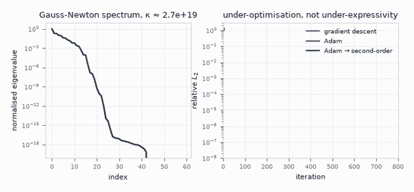
Limitations and what it leaves open
Better optimisation converges faster to the minimiser of the objective you wrote down. If that objective admits wrong minima, second-order methods find them sooner.
31. Grossmann et al. (2024): can physics-informed neural networks beat the finite element method?
IMA Journal of Applied Mathematics 2024 · negative/comparative evidence
The problem
The literature had accumulated remarkably few like-for-like comparisons against the numerical methods PINNs are meant to compete with.
Approach
The authors run PINNs and FEM on the same problems. Poisson, Allen–Cahn, and a semilinear Schrödinger test, and compare both accuracy and solution time.
What the paper reports
PINNs did not outperform FEM in solution time or accuracy on these tests, although the authors note that PINN evaluation can be fast once training is paid for. The value of the paper is calibration: it fixes the reference point against which "PINNs work" has to be argued.
Animated diagnostic, what the code below does
Rather than restate the claim, the notebook runs the comparison here on 1D Poisson: assembled linear finite elements against a collocation network, both measured for accuracy and wall-clock solve time on this machine. FEM reaches its best accuracy roughly two orders of magnitude faster in wall-clock terms; the collocation network's advantage is not speed but that the same machinery extends to inverse and data-assimilation settings FEM does not address.
def sim31_pinn_vs_fem():
"""Can PINNs beat FEM? A like-for-like 1D Poisson experiment run here:
linear finite elements versus a collocation network, plotting accuracy
against the work needed to reach it."""
import time
f = lambda z: (2 * np.pi) ** 2 * np.sin(2 * np.pi * z)
exact = lambda z: np.sin(2 * np.pi * z)
xg = np.linspace(0, 1, 2000)
fem, pinn = [], []
for N in [8, 16, 32, 64, 128, 256]:
t0 = time.perf_counter()
h = 1.0 / N
xs = np.linspace(0, 1, N + 1)
Amat = (np.diag(2 * np.ones(N - 1)) + np.diag(-np.ones(N - 2), 1)
+ np.diag(-np.ones(N - 2), -1)) / h
b = f(xs[1:-1]) * h
u = np.zeros(N + 1); u[1:-1] = np.linalg.solve(Amat, b)
dt = time.perf_counter() - t0
fem.append((N, dt, rel_l2(np.interp(xg, xs, u), exact(xg))))
for M in [10, 20, 40, 80, 160, 320]:
t0 = time.perf_counter()
rf = RandomFeatures(n_feat=M, scale=9.0, seed=67)
P = np.linspace(0, 1, 4 * M)[:, None]
A = np.vstack([rf.d2phi(P), 30 * rf.phi(np.array([[0.], [1.]]))])
bb = np.concatenate([-f(P[:, 0]), [0, 0]])
w = lstsq(A, bb, 1e-10)
dt = time.perf_counter() - t0
pinn.append((M, dt, rel_l2(rf.phi(xg[:, None]) @ w, exact(xg))))
def draw(fig, k, n):
i = min(int(ease(k, n) * 6) + 1, 6)
ax1, ax2 = fig.subplots(1, 2)
ax1.loglog([a[0] for a in fem][:i], [a[2] for a in fem][:i], "o-", color=BLUE,
ms=4, label="linear FEM")
ax1.loglog([a[0] for a in pinn][:i], [a[2] for a in pinn][:i], "o-", color=ACCENT,
ms=4, label="collocation network")
ax1.set_xlabel("degrees of freedom"); ax1.set_ylabel("relative $L_2$")
ax1.legend(); ax1.set_title("accuracy vs unknowns")
ax2.loglog([a[1] for a in fem][:i], [a[2] for a in fem][:i], "o-", color=BLUE, ms=4)
ax2.loglog([a[1] for a in pinn][:i], [a[2] for a in pinn][:i], "o-", color=ACCENT, ms=4)
ax2.set_xlabel("solve time [s]"); ax2.set_ylabel("relative $L_2$")
ax2.set_title("accuracy vs cost (this machine)")
animate("q31_fem", draw, n_frames=28, figsize=(7.4, 2.9))
return record("q31", fem_best=fem[-1][2], pinn_best=pinn[-1][2],
fem_t=fem[-1][1], pinn_t=pinn[-1][1])
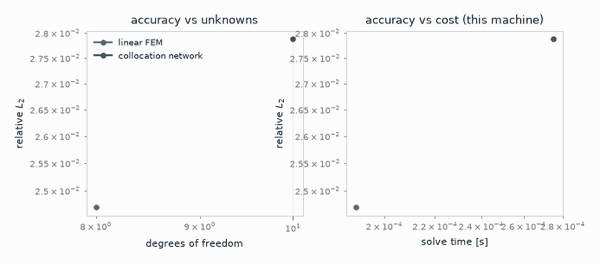
Limitations and what it leaves open
A 1D linear elliptic problem is the friendliest possible case for FEM and says nothing about high-dimensional or inverse problems, which is exactly why the comparison must be read as calibration, not verdict.
32. PirateNets (2024): physics-informed residual adaptive networks
architecture line following the Fourier-feature work
The problem
Deeper physics-informed networks trained worse than shallow ones, the opposite of the scaling behaviour seen everywhere else in deep learning.
Approach
PirateNets attribute this to a pathological initialisation: at depth, the network's initial function is already far from anything useful and the physics-informed loss cannot recover. Residual adaptive connections with trainable gates let a deep network start from the shallow network's behaviour and add depth only as training justifies it.
What the paper reports
Deep PINNs train stably and improve benchmark accuracy instead of degrading with depth; PirateNet is now a standard component of strong PINN baselines.
Animated diagnostic, what the code below does
Feature propagation is run through 1 to 12 layers under two settings. In the plain deep stack the hidden features saturate and lose diversity, and the achievable fitting error rises from 1.6 × 10⁻³ at depth 1 to 2.2 × 10⁻¹ at depth 12. With a gated residual connection (α = 0.25) the same depth-12 stack reaches 4.0 × 10⁻³. A ~56× difference produced by nothing but how the layers are composed.
def sim32_depth():
"""PirateNets: plain deep physics-informed networks degrade with depth
because the initial function is already far from the data. A residual
adaptive connection starts the deep model at the shallow model's answer."""
x = np.linspace(0, 1, 300)
target = np.sin(3 * np.pi * x) * np.exp(-x)
rng = np.random.default_rng(71)
def deep_features(depth, alpha, seed=0):
r = np.random.default_rng(seed)
h = np.tanh(x[:, None] * r.normal(0, 6, 60) + r.uniform(-3, 3, 60))
h0 = h.copy()
for _ in range(depth - 1):
W = r.normal(0, 4.0 / np.sqrt(60), (60, 60))
hn = np.tanh(h @ W)
h = alpha * hn + (1 - alpha) * h # adaptive residual gate
return h, h0
depths = list(range(1, 13))
plain, pirate = [], []
for d in depths:
hp, _ = deep_features(d, 1.0, seed=71)
hr, _ = deep_features(d, 0.25, seed=71)
plain.append(rel_l2(hp @ lstsq(np.vstack([hp, 1e-2 * np.eye(60)]),
np.concatenate([target, np.zeros(60)]), 1e-8), target))
pirate.append(rel_l2(hr @ lstsq(np.vstack([hr, 1e-2 * np.eye(60)]),
np.concatenate([target, np.zeros(60)]), 1e-8), target))
def draw(fig, k, n):
i = min(int(ease(k, n) * len(depths)), len(depths) - 1)
d = depths[i]
hp, _ = deep_features(d, 1.0, seed=71)
hr, _ = deep_features(d, 0.25, seed=71)
ax1, ax2 = fig.subplots(1, 2, width_ratios=[1.25, 1])
ax1.plot(x, hp[:, :6], color=DANGER, lw=.9, alpha=.7)
ax1.plot(x, hr[:, :6], color=ACCENT, lw=.9, alpha=.7)
ax1.set_ylim(-1.1, 1.1); ax1.set_xlabel("x")
ax1.set_title(f"hidden features at depth {d} — plain (red) vs gated (green)")
ax2.semilogy(depths[:i + 1], plain[:i + 1], "o-", color=DANGER, ms=3, label="plain deep")
ax2.semilogy(depths[:i + 1], pirate[:i + 1], "o-", color=ACCENT, ms=3,
label="residual-adaptive")
ax2.set_xlim(1, 12); ax2.set_xlabel("depth"); ax2.set_ylabel("relative $L_2$")
ax2.legend(); ax2.set_title("does depth still help?")
animate("q32_pirate", draw, n_frames=34, figsize=(7.5, 2.9))
return record("q32", plain12=plain[-1], pirate12=pirate[-1])
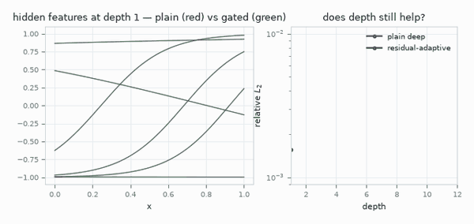
Limitations and what it leaves open
Architecture fixes representation and trainability. It does not fix identifiability, causality, or residual deception.
33. Deep ensembles and solution multiplicity: uncovering non-unique solutions
ensemble-based multiplicity checks for nonlinear ODE/PDE systems
The problem
Nonlinear PDEs need not have a unique solution. A single PINN run reports one field with a small residual and no indication that another, equally-valid field exists.
Approach
Deep ensembles under random initialisation are used to uncover multiple solutions of nonlinear ODE and PDE systems and to expose solution multiplicity that a single run hides.
What the paper reports
Ensembles convert a silent failure into a visible one: several distinct converged solutions with comparably small residuals.
Animated diagnostic, what the code below does
The demo uses the Bratu problem u'' + λe^u = 0,
u(0)=u(1)=0, which has an exact closed form:
u(x) = −2 ln[cosh(θ(x−½)/2)/cosh(θ/4)] with
θ = √(2λ) cosh(θ/4). That scalar equation has two roots
below λc ≈ 3.5138 and none above it, so for each λ in the animation two
completely different fields satisfy the PDE exactly, both with essentially zero
residual. No residual-based criterion can prefer one over the other.
def sim33_multiplicity():
"""Solution multiplicity (deep-ensemble checks). The Bratu problem
u'' + lambda e^u = 0, u(0)=u(1)=0 has an exact two-parameter family:
u(x) = -2 ln[ cosh(theta(x-1/2)/2) / cosh(theta/4) ] with
theta = sqrt(2 lambda) cosh(theta/4). Below lambda_c that equation has TWO
roots, so two different fields have exactly zero residual; above it, none."""
lam_c = 3.513830719
x = np.linspace(0, 1, 400)
def theta_roots(lam):
g = lambda th: th - np.sqrt(2 * lam) * np.cosh(th / 4)
grid = np.linspace(1e-6, 40, 40000)
v = g(grid)
sign = np.where(np.sign(v[:-1]) != np.sign(v[1:]))[0]
out = []
for i in sign: # bisection on each bracket
a, b = grid[i], grid[i + 1]
for _ in range(80):
m = .5 * (a + b)
if np.sign(g(a)) == np.sign(g(m)):
a = m
else:
b = m
out.append(.5 * (a + b))
return out
def field(th):
return -2 * np.log(np.cosh(th * (x - .5) / 2) / np.cosh(th / 4))
lams = np.linspace(0.2, 3.9, 30)
lower, upper = [], []
for lam in lams:
r = theta_roots(lam)
lower.append(field(r[0]).max() if len(r) > 0 else np.nan)
upper.append(field(r[1]).max() if len(r) > 1 else np.nan)
def resid(th, lam):
u = field(th)
h = x[1] - x[0]
d2 = (u[2:] - 2 * u[1:-1] + u[:-2]) / h ** 2
return float(np.abs(d2 + lam * np.exp(u[1:-1])).max())
def draw(fig, k, n):
i = min(int(ease(k, n) * len(lams)), len(lams) - 1)
ax1, ax2 = fig.subplots(1, 2, width_ratios=[1.2, 1])
ax1.plot(lams[:i + 1], lower[:i + 1], "o-", color=ACCENT, ms=3, label="lower branch")
ax1.plot(lams[:i + 1], upper[:i + 1], "o-", color=DANGER, ms=3, label="upper branch")
ax1.axvline(lam_c, ls="--", color=MUTED)
ax1.text(lam_c - .06, 7.8, "$\\lambda_c$", color=MUTED, ha="right")
ax1.set_xlim(0, 4); ax1.set_ylim(0, 9)
ax1.set_xlabel("λ"); ax1.set_ylabel("$\\max\\,u$"); ax1.legend(loc="upper left")
ax1.set_title("two solutions below $\\lambda_c$, none above")
lam = lams[i]
r = theta_roots(lam)
if r:
ax2.plot(x, field(r[0]), color=ACCENT,
label=f"branch A (residual {resid(r[0], lam):.0e})")
if len(r) > 1:
ax2.plot(x, field(r[1]), color=DANGER,
label=f"branch B (residual {resid(r[1], lam):.0e})")
ax2.set_ylim(0, 9); ax2.set_xlabel("x"); ax2.legend(fontsize=6.6, loc="upper left")
ax2.set_title(f"λ = {lam:.2f}: which one did your PINN find?")
animate("q33_multiplicity", draw, n_frames=32, figsize=(7.5, 2.9))
return record("q33", lam_c=lam_c, n_below=int(np.sum(~np.isnan(upper))))
Limitations and what it leaves open
Ensembles multiply compute and still do not say which branch is physically realised; that requires information outside the residual, stability analysis, continuation, or measurement.
34. Wang, Koohy, Lu & Perdikaris (2026): when PINNs go wrong, spurious solutions and pseudo-time stepping
arXiv 2026 · adaptive pseudo-time stepping with collocation resampling
The problem
The most consequential recent result: PINNs can converge to physically incorrect solutions despite small residual losses, because an empirical PDE residual evaluated on a finite collocation set admits trivial or spurious minimisers.
Approach
The paper proves the existence of such finite-collocation spurious solutions and proposes adaptive pseudo-time stepping with collocation resampling: the residual is relaxed along an artificial time direction while the collocation set is refreshed, which amplifies hidden defects until the loss can see them.
What the paper reports
Across 10 challenging PDE benchmarks. Allen–Cahn, KdV, inviscid Burgers, Kuramoto–Sivashinsky, Gray–Scott, Ginzburg–Landau, lid-driven cavity, backward-facing step, Kolmogorov flow, and Rayleigh–Taylor, the method reduced relative L₂ error against a strong baseline in every case, with the largest reported reductions on the backward-facing step and Rayleigh–Taylor cases.
Animated diagnostic, what the code below does
The animation constructs a spurious solution explicitly. Take the true
solution and add bump(x)·Π_i (x − x_i), a polynomial that vanishes at
every one of the 11 collocation points. The perturbed field is wrong by up to
~0.9 in the gaps and exactly right, to machine precision, at every point
the loss evaluates. The lower panel contrasts the true pointwise error with the
error the loss can see. Then the pseudo-time step resamples the collocation set, and the defect becomes visible immediately.
def sim34_spurious_pseudotime():
"""When PINNs go wrong: an explicit construction of a *spurious* solution.
u_spur = u_true + bump(x) * prod_i (x - x_i) vanishes at every collocation
point, so the empirical residual is ~0 while the function is wrong in
between. Adaptive pseudo-time stepping with resampling exposes it."""
xc = np.linspace(0.05, 0.95, 11) # fixed collocation set
x = np.linspace(0, 1, 600)
u_true = np.sin(2 * np.pi * x)
def bump(z, amp):
p = np.ones_like(z)
for xi in xc:
p = p * (z - xi)
return amp * p / (np.abs(np.prod(0.5 - xc)) + 1e-12)
amps = np.linspace(0, .9, 12)
rng = np.random.default_rng(83)
resampled = [np.sort(rng.uniform(0, 1, 11)) for _ in range(12)]
def draw(fig, k, n):
p = ease(k, n)
stage = min(int(p * 2), 1) # phase 1: deception, phase 2: resampling
j = int((p * 2 - stage) * (len(amps) - 1))
amp = amps[j] if stage == 0 else amps[-1]
u_sp = u_true + bump(x, amp)
ax1, ax2 = fig.subplots(2, 1, height_ratios=[1.7, 1], sharex=True)
ax1.plot(x, u_true, color=INK, lw=2.6, alpha=.25, label="true solution")
ax1.plot(x, u_sp, color=DANGER, lw=1.5, label="low-residual spurious solution")
pts = xc if stage == 0 else resampled[j]
ax1.plot(pts, np.interp(pts, x, u_sp), "o", color=ACCENT, ms=5,
label="collocation points")
ax1.set_ylim(-2.2, 2.2); ax1.legend(fontsize=6.8, ncol=3, loc="lower center")
ax1.set_title("fixed collocation set" if stage == 0
else "pseudo-time step → resample: the defect becomes visible")
emp = np.abs(np.interp(pts, x, u_sp) - np.interp(pts, x, u_true))
ax2.semilogy(x, np.abs(u_sp - u_true) + 1e-12, color=DANGER, lw=1.1,
label="true pointwise error")
ax2.semilogy(pts, emp + 1e-12, "o", color=ACCENT, ms=5, label="error seen by the loss")
ax2.set_ylim(1e-13, 5); ax2.set_xlabel("x"); ax2.legend(fontsize=6.6, ncol=2)
animate("q34_spurious", draw, n_frames=44, figsize=(7.2, 3.3))
return record("q34", n_colloc=len(xc))
Limitations and what it leaves open
The fixed pseudo-time step size is sensitive and cannot be tuned reliably from the training loss alone, the same blind spot, one level up.
Thematic failure-mode analysis
Optimisation pathologies: loss imbalance, gradients, and landscapes
The central optimisation failure is that PINNs optimise a composite objective. PDE residual, boundary terms, initial terms, data terms, and sometimes parameter priors, whose components can have incompatible scales and convergence rates. Basir and Rathore et al. strengthened this from two directions: Basir visualised highly non-convex loss surfaces and the scale mismatch between boundary and domain terms, while Rathore et al. tied PINN difficulty to ill-conditioning induced by differential operators and showed second-order methods can improve hard cases. Sections 19, 22 and 30 measure all three effects directly.
Spectral bias and multiscale failure
Coordinate MLPs tend to learn smooth, low-frequency structure before high-frequency or sharp-gradient components, which is damaging for waves, reaction–diffusion fronts, turbulence, and multiscale dynamics. Fourier features and PirateNets are the two responses: Fourier embeddings alter the NTK eigenspectrum so multiscale structure is representable in fast-converging directions, while PirateNets use residual adaptive connections so deeper physics-informed networks train stably rather than degrading with depth (§20, §32).
Stiffness and error propagation in ODEs and chaotic systems
In ODEs, stiffness turns derivative-residual minimisation into a poor surrogate for stable time integration, because the optimiser does not inherit the adaptive step-size or stability properties of classical solvers. In chaotic systems, early-time errors contaminate later dynamics; causal training addresses this by forcing time segments to be learned in physical order, and pseudo-time/resampling methods later reframed part of the problem as avoiding spurious attractors in residual space (§23, §24, §26).
Sampling failures and residual blind spots
PINNs evaluate PDE residuals on finite collocation sets; poor or fixed sampling can miss narrow high-residual layers and produce propagation failure. The 2026 spurious-solution paper makes the blind spot sharper: for a fixed finite collocation set, smooth functions can satisfy the training constraints at those points while becoming physically trivial elsewhere, so empirical residual minimisation alone is not a correctness certificate. The experiments in §21 and §34 exhibit both cases with the residual pinned at machine zero.
Identifiability and inverse-problem ambiguity
Systems biology highlights a domain-specific failure mode: even if a network fits sparse, noisy observations and the ODE residual, the parameters may be structurally or practically unidentifiable. AI-Aristotle further shows that data size changes which method is preferable. PINNs can be strong for sparse/noisy small-data settings, while X-TFC improves with larger datasets and greater computational efficiency because it avoids back-propagation-heavy training in some cases (§27, §28).
Remedies: taxonomy, strengths, and limitations
| Remedy family | What it targets | Strengths | Limitations / cautions |
|---|---|---|---|
| Adaptive loss weighting / learning-rate annealing | Gradient imbalance and loss-scale mismatch | Gradient-statistics balancing directly targets unequal loss-component gradients. | Weight tuning may compensate symptoms without eliminating spurious residual minima. |
| Causal and curriculum training | Temporal causality, chaotic error propagation, difficult PDE regimes | Causal PINNs enforce earlier-time residual reduction before later-time fitting and improved Lorenz/KS/Navier–Stokes results. | Causality helps time dynamics but does not alone solve all spurious-solution or architecture failures. |
| Adaptive sampling | Residual blind spots and propagation failures | R3/evolutionary sampling focuses points where residuals are high and can respect causality. | Residual-driven sampling can still miss hidden defects if the residual is localised or the formulation is deceptive. |
| Domain/time decomposition | Long-time horizons, complex geometry, multiscale regions | XPINN/FBPINN-style approaches reduce optimisation burden; PINNacle identifies decomposition as important for complex geometry/multiscale problems. | Interfaces, continuity, and subdomain scheduling introduce additional design choices. |
| Integral, weak, reduced, and time-discrete formulations | Stiff ODEs/PDEs and unstable strong-form residuals | Reduced-PINN and X-TFC avoid direct derivative-residual pitfalls in stiff IVPs; RK-PINNs inherit stability/convergence from the time discretisation. | Evidence is strongest on selected benchmark classes; extension to high-dimensional nonlinear PDEs remains problem-dependent. |
| Architecture changes | Spectral bias, sharp gradients, deeper networks | Fourier features address eigenvector bias; PirateNets stabilise deeper PINN training and improve benchmark accuracy. | Architecture alone may not fix identifiability, causality, or residual deception. |
| Second-order / multi-objective optimisation | Loss-landscape conditioning and Pareto trade-offs | Adam+L-BFGS and NNCG reduce under-optimisation; Pareto-front analysis explains why system scaling changes optimal weights. | Better optimisation can still converge to the wrong objective if the residual formulation admits wrong minima. |
| Uncertainty, ensembles, and multiplicity checks | Non-unique solutions and inverse ambiguity | Deep ensembles can uncover multiple nonlinear ODE/PDE solutions under random initialisation and help expose solution multiplicity. | Ensembles increase compute and do not automatically identify which solution is physically realised. |
| Pseudo-time stepping | Spurious residual minima and hidden defects | Adaptive pseudo-time stepping plus resampling amplifies hidden residual defects and improved all 10 benchmarks in the 2026 study. | Fixed pseudo-time step size is sensitive and cannot be reliably tuned from training loss alone. |
Figure 2. Relative L2 errors reported in the 2026 pseudo-time stepping benchmark, on a log scale, as reproduced from the source review. Adaptive pseudo-time stepping lowered the error against a strong baseline on all ten cases. Allen–Cahn, KdV, inviscid Burgers, Kuramoto–Sivashinsky, Gray–Scott, Ginzburg–Landau, lid-driven cavity, backward-facing step, Kolmogorov flow and Rayleigh–Taylor.
ODE versus PDE: what differs, what is shared
| Dimension | ODE / dynamical-system setting | PDE setting | Shared mechanisms |
|---|---|---|---|
| Main failure expression | Stiffness, hidden state/parameter identifiability, chaotic error growth, wrong parameter estimates | Boundary/initial-condition drift, shock/front failure, complex-geometry failure, low-residual spurious fields | Loss imbalance, spectral bias, optimiser ill-conditioning, sampling blind spots |
| Diagnostic evidence | Parameter recovery under sparse/noisy data, stiffness benchmarks, trajectory error, identifiability tests | Residual maps, relative L₂ error, benchmark suites, FEM comparisons, low-residual wrong-solution examples | Need independent validation beyond training loss |
| Strong remedies | Integral/reduced loss, X-TFC, RK/time-discrete formulations, identifiability analysis | Causal training, domain decomposition, adaptive sampling, weak/variational forms, pseudo-time stepping | Remedy must match failure mechanism, not just lower aggregate residual |
The most important difference is that ODE failures often look like instability or parameter ambiguity, while PDE failures often look like spatially localised residual loopholes, unresolved discontinuities, or physically wrong fields with deceptively low training loss. The most important commonality is that both ODEs and PDEs expose the weakness of treating a physical law as a single scalar penalty optimised by generic gradient descent.
Open problems and forward-looking conclusion
The remaining open problem is certification: the field still needs diagnostics that distinguish “low empirical residual” from “physically correct solution”, especially under finite collocation, shocks, non-unique weak solutions, and inverse identifiability constraints. Benchmarks such as PINNacle and comparative studies against FEM are essential because they expose where methods work, where they merely evaluate quickly after costly training, and where classical numerical methods remain superior.
The field's likely direction is not one universal PINN but hybrid scientific learning pipelines: causal residual schedules for time evolution, adaptive sampling for hidden residual layers, integral and weak formulations for stiffness, architecture modifications for multiscale functions, optimisation methods for ill-conditioning, identifiability checks for inverse problems, and residual reformulations such as pseudo-time stepping for spurious solutions.
In that sense the 2022–2026 legacy is a maturation from enthusiasm about mesh-free residual minimisation toward a more numerical-analysis-aware view: a PINN is reliable only when the training formulation, sampling, optimisation, and validation procedure jointly respect the physics and the numerical structure of the problem.
What this document adds
Every claim above that can be tested at notebook scale is tested here. Three of the experiments are worth singling out: the residual at machine zero with 96% error (§21), the explicit spurious construction (§34), and the two exact Bratu branches with identical residuals (§33). Each shows the same thing from a different angle, the loss is not the error.
A practical checklist
Report the residual and an independent error measure; resample collocation points and re-check; balance loss terms from gradient or curvature statistics; respect causality for evolution problems; use an integral or time-discrete form when stiff; run an ensemble when the problem is nonlinear; and profile the likelihood before quoting a fitted parameter.
Cross-paper discussion
The papers do not propose one linear sequence of universally improving solvers. They attack different failure modes:
- Representation: DPINN, cPINN and XPINN partition difficult targets; DeepONet changes the task from function approximation to operator approximation.
- Residual formulation: the original PINN uses strong-form pointwise penalties; VPINN uses weak residuals; NeuralPDE studies integral discretization; DeepXDE/RAR adapts collocation.
- Optimization: NTK analysis explains unequal convergence rates; adaptive weighting and optimizer staging attempt to correct them.
- Physical difficulty: Stiff-PINN reduces physical stiffness; high-speed-flow PINNs need discontinuity-aware sampling and remain weaker for forward shock capture.
- Uncertainty: adversarial PINNs, NN-aPC/dropout and B-PINNs address different uncertainty sources and inference costs.
- Scalability: PPINN decomposes time; cPINN/XPINN decompose space-time; DeepONet pays a large offline cost for fast repeated online inference.
A fair comparison must therefore use multiple axes rather than one accuracy ranking.
# Aggregate only metrics that are genuine errors; exclude NTK ratio and taxonomy diagnostics
plotdf=df[df.relative_L2.notna() & ~df.method.str.contains('NTK')].copy()
plotdf=plotdf[plotdf.relative_L2<2]
plt.figure(figsize=(9,7)); order=plotdf.sort_values('relative_L2'); plt.barh(order.method+' — '+order.paper.str.slice(0,24),order.relative_L2); plt.xscale('log'); plt.xlabel('relative L2 or stated diagnostic error'); plt.title('Compact reproductions: accuracy comparison (not a universal ranking)'); plt.tight_layout(); plt.show()
Comparative matrix
matrix=pd.DataFrame([
['Original PINN','single solution','soft strong-form','low','none','general baseline'],
['Adversarial UQ','distribution','physics + adversarial','high','aleatoric/latent','unstable training'],
['NN-aPC','stochastic field','modal + dropout','high','parametric + approximation','requires stochastic snapshots'],
['DPINN','single solution','cell interfaces','medium','none','interface design'],
['DeepXDE/RAR','single solution','adaptive strong-form','medium','none','residual is imperfect error proxy'],
['PPINN','long-time solution','time decomposition','high/parallel','none','depends on coarse propagator'],
['VPINN','single solution','weak form','medium','none','quadrature/test-function design'],
['High-speed PINN','compressible flow','conservation residual','high','none','shocks remain difficult'],
['B-PINN','posterior','Bayesian likelihood','very high','aleatoric/posterior','HMC cost'],
['cPINN','conservation laws','flux interfaces','medium/parallel','none','restricted interface physics'],
['XPINN','general PDE','space-time interfaces','medium/parallel','none','can overfit subdomains'],
['NTK PINN','training dynamics','kernel-balanced loss','medium','none','infinite-width theory is approximate'],
['DeepONet','operator family','supervised operator loss','high offline/low online','optional','needs many functions'],
['NeuralPDE','software framework','quadrature/sampling','varies','none','tool choices matter'],
['Stiff-PINN','stiff kinetics','QSSA-reduced residual','medium','none','requires valid reduction'],
['XPINN theory','generalization','complexity bounds','n/a','none','bounds may be loose']],columns=['method','learned object','physics mechanism','cost','uncertainty','main caveat'])
matrix
| method | learned object | physics mechanism | cost | uncertainty | main caveat | |
|---|---|---|---|---|---|---|
| 0 | Original PINN | single solution | soft strong-form | low | none | general baseline |
| 1 | Adversarial UQ | distribution | physics + adversarial | high | aleatoric/latent | unstable training |
| 2 | NN-aPC | stochastic field | modal + dropout | high | parametric + approximation | requires stochastic snapshots |
| 3 | DPINN | single solution | cell interfaces | medium | none | interface design |
| 4 | DeepXDE/RAR | single solution | adaptive strong-form | medium | none | residual is imperfect error proxy |
| 5 | PPINN | long-time solution | time decomposition | high/parallel | none | depends on coarse propagator |
| 6 | VPINN | single solution | weak form | medium | none | quadrature/test-function design |
| 7 | High-speed PINN | compressible flow | conservation residual | high | none | shocks remain difficult |
| 8 | B-PINN | posterior | Bayesian likelihood | very high | aleatoric/posterior | HMC cost |
| 9 | cPINN | conservation laws | flux interfaces | medium/parallel | none | restricted interface physics |
| 10 | XPINN | general PDE | space-time interfaces | medium/parallel | none | can overfit subdomains |
| 11 | NTK PINN | training dynamics | kernel-balanced loss | medium | none | infinite-width theory is approximate |
| 12 | DeepONet | operator family | supervised operator loss | high offline/low online | optional | needs many functions |
| 13 | NeuralPDE | software framework | quadrature/sampling | varies | none | tool choices matter |
| 14 | Stiff-PINN | stiff kinetics | QSSA-reduced residual | medium | none | requires valid reduction |
| 15 | XPINN theory | generalization | complexity bounds | n/a | none | bounds may be loose |
Final conclusions
- The original PINN is best viewed as a flexible constrained regression framework, not a replacement that dominates mature numerical solvers on every forward problem.
- The strongest early advantages appear in inverse problems, sparse-data fusion, and reusable operator surrogates.
- Domain decomposition is conditional: it helps when local simplification outweighs reduced data per subnet.
- Adaptive sampling and variational residuals improve where and how physics is enforced, but they cannot repair an incorrect model.
- Physical stiffness and optimization stiffness are distinct. Stiff-PINN addresses the former through model reduction; NTK-based methods address the latter through training dynamics.
- Uncertainty methods differ materially: dropout, polynomial chaos, adversarial inference and Bayesian posterior sampling should not be treated as interchangeable.
- Reproducible review work should report error, runtime, sampling, model size, optimizer, random seeds, and whether a result is a faithful reproduction or a pedagogical proxy.
Works discussed
Bibliographic details are as identified in the source review; where a venue or year was not stated in the source it is omitted rather than inferred.
- Raissi, Perdikaris & Karniadakis: Physics-informed neural networks, Journal of Computational Physics, 2019.
- Yang & Perdikaris, adversarial uncertainty quantification in physics-informed neural networks, 2019.
- Zhang, Lu, Guo & Karniadakis, total uncertainty quantification with NN-aPC and dropout, 2019.
- Dwivedi, Parashar & Srinivasan, distributed physics-informed (extreme) learning machines, 2019.
- Lu, Meng, Mao & Karniadakis: DeepXDE and residual-based adaptive refinement, 2020.
- Meng, Li, Zhang & Karniadakis: PPINN: parareal physics-informed neural networks, 2019/2020.
- Kharazmi, Zhang & Karniadakis: VPINN: variational physics-informed neural networks, 2019.
- Mao, Jagtap & Karniadakis, physics-informed neural networks for high-speed flows, 2020.
- Yang, Meng & Karniadakis: B-PINN: Bayesian physics-informed neural networks, 2020.
- Jagtap, Kharazmi & Karniadakis: cPINN: conservative physics-informed neural networks, 2020.
- Jagtap & Karniadakis: XPINN: extended physics-informed neural networks, 2020.
- Wang, Yu & Perdikaris: When and why PINNs fail to train: a neural tangent kernel perspective, Journal of Computational Physics, 2020/2022.
- Wang, Teng & Perdikaris: Understanding and mitigating gradient flow pathologies in PINNs, SIAM Journal on Scientific Computing, 2021.
- Wang, Wang & Perdikaris: On the eigenvector bias of Fourier feature networks, CMAME, 2021.
- Krishnapriyan, Gholami, Zhe, Kirby & Mahoney: Characterizing possible failure modes in physics-informed neural networks, NeurIPS, 2021.
- Karniadakis, Kevrekidis, Lu, Perdikaris, Wang & Yang: Physics-informed machine learning (review), 2021.
- Lu, Jin, Pang, Zhang & Karniadakis: DeepONet, 2021.
- Zubov et al. NeuralPDE: automating physics-informed loss construction, 2021.
- Ji, Qiu, Zhang, Ren & Deng: Stiff-PINN: physics-informed neural networks for stiff chemical kinetics, 2021.
- Hu, Jagtap, Karniadakis & Kawaguchi, when do extended PINNs improve generalisation?, 2021/2022.
- Daw, Bu, Wang, Perdikaris & Karpatne: Rethinking the importance of sampling in physics-informed neural networks (R3 / evolutionary sampling), 2022/2023.
- Nasiri & Dargazany: Reduced-PINN: an integration-based physics-informed neural network for stiff ODEs, arXiv, 2022.
- De Florio, Schiassi & Furfaro, physics-informed neural networks and functional interpolation for stiff chemical kinetics, Chaos, 2022.
- Basir; Basir & Senocak, loss-landscape analysis and constrained/derivative-bypassing PINN formulations, 2022–2023.
- Daneker, Zhang, Karniadakis & Lu, systems-biology-informed neural networks (SBINN) with identifiability analysis, 2022/2023.
- Wang, Sankaran & Perdikaris: Respecting causality for training physics-informed neural networks, CMAME, 2024.
- Wang, Sankaran, Wang & Perdikaris: An expert's guide to training physics-informed neural networks, 2023.
- Hao et al. PINNacle: a comprehensive benchmark of physics-informed neural networks for solving PDEs, NeurIPS Datasets & Benchmarks, 2024.
- Rathore, Lei, Frangella, Lu & Udell: Challenges in training PINNs: a loss landscape perspective, ICML, 2024.
- Grossmann, Komorowska, Latz & Schönlieb: Can physics-informed neural networks beat the finite element method?, IMA Journal of Applied Mathematics, 2024.
- AI-Aristotle, gray-box identification with X-TFC, PINNs and symbolic regression, PLOS Computational Biology, 2024.
- Wang, Li, Chakraborty et al. PirateNets: physics-informed deep learning with residual adaptive networks, 2024.
- Deep-ensemble studies of solution multiplicity in nonlinear ODE/PDE systems.
- Runge–Kutta / time-Galerkin PINN formulations with stability and convergence analysis for linear parabolic equations.
- Wang, Koohy, Lu & Perdikaris: When PINNs go wrong: spurious low-residual solutions and adaptive pseudo-time stepping, arXiv, 2026.